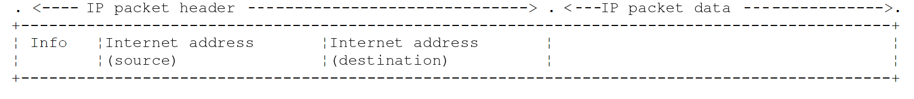
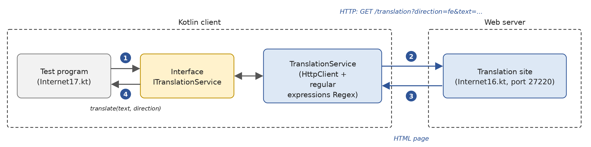

12. Web 编程
12.1. 概述
12.1.1. Internet 协议
这里我们介绍 Internet 通信协议，也称为 TCP/IP 协议族（Transmission Control Protocol / Internet Protocol，传输控制协议 / 网际协议），因其中两个主要协议而得名。在着手开发分布式应用程序之前，读者最好对网络的工作原理——尤其是 TCP/IP 协议——有一个大致的了解。本介绍基于 Novell 的“Lan Workplace for DOS”管理指南（1990 年代初）中的一段文字，保留了其结构和精神，同时做了更新：2026 年的 Internet 已经与 1990 年的不太一样了。
创建异构计算机网络的总体构想源于美国 DARPA（Defense Advanced Research Projects Agency，国防高级研究计划局）开展的研究。DARPA 开发了称为 TCP/IP 的协议族，使异构的机器能够相互通信。这些协议在一个名为 ARPAnet 的网络上进行了测试，该网络后来发展成为 Internet（ARPAnet 于 1983 年 1 月 1 日采用 TCP/IP）。TCP/IP 协议定义了与网络架构和所用硬件无关的传输与接收格式及规则。
由 DARPA 设计、由 TCP/IP 协议管理的网络是一种分组交换网络。这样的网络以称为数据包的小块传输信息。因此，如果一台计算机传输一个大文件，该文件会被拆分成小块，通过网络发送，并在目的地重新组装。TCP/IP 定义了这些数据包的格式，特别包括：
- 数据包的来源；
- 它的目的地；
- 它的长度；
- 它的类型。
Internet 协议由称为 RFC（Request for Comments）的公开文档描述，这些文档由 IETF（Internet Engineering Task Force）发布，可在 www.rfc-editor.org 上获取。我们将在本章中引用其中的一些文档。
12.1.2. OSI 模型
TCP/IP 协议大体上遵循由 ISO（International Organization for Standardization，国际标准化组织）定义的称为 OSI（Open Systems Interconnection Reference Model，开放系统互连参考模型）的开放网络模型。该模型描述了一种理想的网络，其中机器之间的通信可以用一个七层模型来表示：

每一层从其下一层获得服务，并向其上一层提供自己的服务。假设位于不同机器 A 和 B 上的两个应用程序想要通信：它们在应用层进行通信。它们无需知道网络运作的全部细节：每个应用程序把想要传输的信息交给其下一层，即表示层。因此，应用程序只需要知道与表示层对接的规则。信息进入表示层之后，会按照其他规则传给会话层，依此类推，直到信息到达物理介质并被物理地传输到目标机器。在那里，它将经历与在发送机器上相反的过程。
在每一层，负责发送信息的发送进程会把信息发送给另一台机器上属于同一层的接收进程。它按照称为层协议的某些规则来这样做。实际的通信向下穿过机器 A 的各层，跨越物理网络，然后向上穿过机器 B 的各层；然而，每一层都觉得自己是在与另一台机器上对应的层直接通信。
各层的作用如下：
层 | 作用 |
物理层 | 确保比特在物理介质（铜缆、光纤、无线电波）上的传输。这一层的关键问题包括把信息编码为信号以及传输方式。 |
数据链路层 | 抽象出物理层的物理特性。把信息划分为帧，检测（有时纠正）传输错误，并管理对共享介质的访问。 |
网络层 | 管理通过网络发送的信息必须遵循的路径。这称为路由：确定信息到达目的地所必须经过的路线。 |
传输层 | 使两个应用程序之间能够通信，而前面各层只允许机器之间通信。该层提供的一项服务是多路复用：传输层使用单一的网络链路（机器到机器）来传输属于多个应用程序的数据。 |
会话层 | 提供使应用程序能够在远程机器上打开并维持工作会话的服务。 |
表示层 | 规范不同机器之间数据的表示方式。机器 A 的数据在通过网络发送之前，由机器 A 的表示层按照标准格式进行“格式化”。数据到达目标机器 B 的表示层后——表示层根据其标准格式识别这些数据——会被重新格式化，以便机器 B 上的应用程序能够识别。 |
应用层 | 这一层是通常与用户距离较近的应用程序，例如电子邮件、Web 或文件传输。 |
12.1.3. TCP/IP 模型
OSI 模型是一个从未被原样实现的参考模型。已成为标准的 TCP/IP 协议族只分为四层：

会话层和表示层在 TCP/IP 中并不作为独立的层存在：它们的功能在需要时由应用程序本身或中间协议承担，例如 TLS（数据交换的加密），它被插入在 TCP 和应用程序之间。
网络接入层
在局域网中，目前占主导地位的技术是用于有线连接的以太网（Ethernet）和用于无线连接的 Wi-Fi（IEEE 802.11 标准）。其他技术，如令牌环（Token Ring），现已消失。
以太网（Ethernet）是一种分组交换局域网技术的名称，由 Xerox 于 1970 年代初发明，1980 年由 Xerox、Intel 和 Digital Equipment 标准化，后来由 IEEE 标准化（标准 802.3）。最初的以太网由一根同轴电缆组成，所有机器都连接到这根电缆上（总线拓扑），数据速率为每秒 10 兆比特：

这是一个广播网络：发送机器在电缆上发送包含目标机器地址的信息；所有已连接的机器都会收到它，只有预定的接收者才会保留它。由于多台机器可能同时决定发送，因此必须检测冲突：这就是 CSMA/CD 访问方法（Carrier Sense Multiple Access / Collision Detect，载波侦听多路访问 / 冲突检测）。每个发送者在发送之前先监听电缆（CSMA），并在发送期间验证电缆上经过的内容是否确实是自己所发送的内容；如果不是，就发生了冲突（CD）：各方都停止发送，并在随机延迟之后重试。
现代以太网已有很大发展：设备通过双绞线或光纤连接到交换机，由交换机把每个帧路由到接收者所在的特定端口。连接是全双工的（同时发送和接收）：不再有冲突，CSMA/CD 已经过时。典型数据速率为每秒 1 到 10 吉比特，数据中心则要高得多。
没有改变的是 48 位寻址：每块网卡都有一个地址，称为物理地址或 MAC（Media Access Control，介质访问控制）地址，通常写成六个十六进制字节（例如 [00:1A:2B:3C:4D:5E]）。它由制造商编入网卡，但——与长期以来的说法相反——可以通过软件修改：现代操作系统甚至在 Wi-Fi 网络上使用随机 MAC 地址，以防止设备在不同网络之间被跟踪。
Internet 层（网络层）
这一层包含以下协议：
协议 | 作用 |
IP（Internet Protocol，网际协议） | 在两个网络节点之间传递数据包，有版本 4（IPv4）和版本 6（IPv6） |
ICMP（Internet Control Message Protocol，网际控制报文协议） | 促进一台机器上的 IP 协议程序与另一台机器上的 IP 协议程序之间的通信。因此，它是在 IP 协议内部交换控制消息的协议 |
ARP（Address Resolution Protocol，地址解析协议） | 把机器的 IP 地址映射到该机器的物理地址（在 IPv6 中，这一作用由 NDP 协议，即邻居发现协议 Neighbor Discovery Protocol 承担） |
有时也会提到 RARP（Reverse Address Resolution Protocol，反向地址解析协议），它执行反向映射。它早已被 DHCP 取代而废弃，我们将在后面讨论 DHCP。
传输层
这一层包含以下协议：
协议 | 作用 |
TCP（Transmission Control Protocol，传输控制协议） | 确保两个应用程序之间可靠且有序地传递信息 |
UDP（User Datagram Protocol，用户数据报协议） | 确保两个应用程序之间不可靠地传递信息 |
QUIC（2021 年）协议是 HTTP/3 的基础，它是构建在 UDP 之上的可靠的加密传输协议。
应用层
这里有各种协议，我们稍后会详细介绍：
协议 | 作用 |
HTTP、HTTPS（HyperText Transfer Protocol，超文本传输协议） | Web 协议：客户端（浏览器、应用程序）向 Web 服务器请求资源。HTTPS 是使用 TLS 加密的 HTTP |
DNS（Domain Name System，域名系统） | 把主机名转换为 IP 地址 |
SMTP（Simple Mail Transfer Protocol，简单邮件传输协议） | 用于发送电子邮件 |
POP3、IMAP | 用于读取存储在服务器上的电子邮件 |
SSH（Secure Shell，安全外壳） | 使用加密连接到远程机器并在其上执行命令。它取代了 TELNET，后者执行相同的功能但不加密 |
FTP（File Transfer Protocol，文件传输协议）、SFTP | 用于文件传输 |
DHCP（Dynamic Host Configuration Protocol，动态主机配置协议） | 使机器能够自动获取其 IP 地址和网络配置 |
12.1.4. Internet 协议如何工作
在 TCP/IP 环境中开发的应用程序通常会使用该环境中的多个协议。应用程序与协议的最高层通信。该层把信息传给其下一层，依此类推，直到到达物理介质。在那里，信息被物理地传输到接收机器，并在那里再次经过同样的各层——这次是相反的顺序——直到到达作为所发信息预期接收者的应用程序。下图显示了信息的路径：

我们来看一个例子：一个使用 TCP 向另一台机器发送文件的应用程序。
- 应用程序把要传输的字节序列交给传输层；
- 传输层把这个字节序列划分为 TCP 段，并在每个段的开头添加一个首部，其中包含源端口号和目标端口号以及序列号等信息。这些段被传给网络层，网络层由 IP 协议管理；
- IP 层创建一个数据包，封装收到的 TCP 段。它在该数据包的首部放入源机器和目标机器的 IP 地址。它还确定数据包应当递送到的机器（目标机器本身或路由器）的物理地址。整个数据包被传给网络接入层，也就是把机器连接到物理网络的网卡；
- 在那里，IP 数据包又被封装到物理帧中，并通过介质发送给其接收者；
- 在目标机器上，网络接入层执行相反的过程：它从物理帧中解封装出 IP 数据包，并把它传给 IP 层；
- IP 层验证数据包是否有效：它计算其首部的校验和，该校验和必须与数据包首部中的一致。如果不一致，数据包就会被丢弃；
- 如果数据包被认为有效，IP 层就解封装其中包含的 TCP 段，并将其向上传给传输层；
- TCP 层也会验证该段的校验和。如果正确，它就向源机器发送确认；否则，该段被忽略（并将由源机器重新发送）；
- TCP 层利用序列号把各个段重新排列成正确的顺序；
- TCP 层剩下要做的，就是把各个段的数据部分传给目标应用程序，该应用程序由目标端口号标识。
12.1.5. Internet 上的寻址问题
网络节点可以是计算机、打印机、电话、联网设备——实际上是任何能够使用 TCP/IP 协议通信的东西。每个节点都有一个物理地址，其格式取决于网络类型。在以太网或 Wi-Fi 网络上，物理地址用 6 个字节编码。
节点的 Internet 地址（IP）是逻辑地址：它与所使用的硬件和网络无关。在 IPv4 中，它是一个 4 字节的地址，同时标识一个网络和该网络上的一个节点。它通常表示为四个数字——四个字节的值——以点分隔。例如，昂热理学院（Faculté des Sciences d'Angers）中名为“Lagaffe”的机器的地址长期是 193.49.144.1，名为“Liny”的机器的地址是 193.49.144.9。由此可以推断，本地网络地址是 193.49.144.0，该网络上最多可以有 254 个节点。
由于 IP 地址与物理网络无关，网络 A 上的机器可以与网络 B 上的机器通信，而不必关心后者所在的网络类型：只需知道它的 IP 地址即可。每个网络上的 IP 协议负责 IP 地址与物理地址之间的双向转换。
所有公网 IP 地址都必须是唯一的。它们的分配遵循层级结构：IANA（Internet Assigned Numbers Authority，互联网号码分配机构）把地址块分发给五个区域注册机构，其中包括负责欧洲的 RIPE NCC，后者再把它们重新分发给运营商和大型组织。然后，这些实体再把它们分配给自己的客户。获得了 193.49.144.0 到 193.49.144.255 地址块的网络的管理员，可以随意分配 193.49.144.1 到 193.49.144.254 的地址。在法国，INRIA 曾长期负责分配地址；这种情况已经很久不存在了。
12.1.5.1. IP 地址类别与 CIDR 表示法
诸如 IPv4 的地址是一个 4 字节的序列，写成 I1.I2.I3.I4，它实际上包含两部分信息：
- 网络地址（最高有效位）；
- 该网络内节点的地址（最低有效位）。
最初，这两个字段的大小由第一个字节的值决定。IP 地址分为三个主要类别：
类别 | 第一个字节 | 网络 / 节点 | 网络和节点的数量 |
A | 1 到 126（最高有效位为 0） | R1.N1.N2.N3：1 字节网络（7 个有效位），3 字节节点 | 126 个网络，每个网络有 2²⁴ - 2 个节点（约 1600 万） |
B | 128 到 191（最高有效 10 位） | R1.R2.N1.N2：2 字节网络（14 个有效位），2 字节节点 | 2¹⁴ = 16,384 个网络，每个网络有 2¹⁶ - 2 = 65,534 个节点 |
C | 192 到 223（最高有效 110 位） | R1.R2.R3.N1：3 字节网络（21 个有效位），1 字节节点 | 2²¹ 个网络（约 200 万），每个网络有 254 个节点 |
由于 Lagaffe 机器的地址是 193.49.144.1，其最高有效字节是 193，二进制为 11000001：该网络是 C 类网络。
这种分类被证明过于僵化：拥有 300 台机器的组织必须使用 B 类网络，浪费了 65,000 多个地址。自 1993 年起（RFC 1518 和 1519），这些类别已被无类别路由（CIDR，Classless Inter-Domain Routing）所取代。网络部分与主机部分的边界可以设在任意一位；它由斜杠后面的网络前缀长度表示：
- 193.49.144.0/24：前 24 位指定网络，后 8 位指定节点。该网络包含 193.49.144.0 到 193.49.144.255 的地址；
- 10.0.0.0/8：一个拥有 2²⁴ 个地址的网络；
- 192.168.1.0/26：一个拥有 2⁶ = 64 个地址的网络，范围从 192.168.1.0 到 192.168.1.63。
子网掩码的旧表示法仍在使用，它表达的是同一件事：前缀 /24 对应于掩码 255.255.255.0。“A、B、C 类”这些术语仍在普遍使用，但已不再对应任何实际机制。
12.1.5.2. 保留地址、私有地址与 NAT
某些地址有特定用途：
- 主机部分全为 0 的地址指网络本身：193.49.144.0 是 193.49.144.0/24 网络的地址；
- 主机部分全为 1 的地址是广播地址：193.49.144.255 指 193.49.144.0/24 网络上的所有主机。因此，这两个地址不能分配给节点：一个有 256 个地址的 /24 网络只提供 254 个可用地址；
- 地址 127.0.0.0/8，实际上是 127.0.0.1，是环回地址：机器用它们来指代自己，而不经过网络。名称 [localhost] 与它们相关联；
- 地址块 10.0.0.0/8、172.16.0.0/12 和 192.168.0.0/16（RFC 1918）保留给私有网络：它们可以在公司或家庭内部自由使用，但不会在 Internet 上被路由；
- 地址块 192.0.2.0/24、198.51.100.0/24 和 203.0.113.0/24（RFC 5737）保留用于文档和示例。
IPv4 地址的数量（2³²，即略多于 40 亿）不足以满足所有联网机器。IANA 的中央地址池在 2011 年耗尽，RIPE NCC 的地址池在 2019 年耗尽。短缺问题通过网络地址转换（NAT）得到规避：家庭中的设备拥有私有地址（如 192.168.1.x），而把它们连接到 Internet 的路由器则把这些地址“转换”为它自己唯一的公网地址。长期的解决方案是 IPv6。
12.1.5.3. IPv6 地址
IPv6（1998 年的 RFC 2460，现为 RFC 8200）使用 128 位编码地址，提供 2¹²⁸ 个可能的地址——约 3.4 × 10³⁸ 个——因此不必再担心短缺。IPv6 地址写成由冒号分隔的八组四位十六进制数字：
每组中的前导零可以省略，一连串零组可以替换为 [::]（只能替换一次）。因此，前面的地址可以写成 [2001:db8::8a2e:0:370:7334]。环回地址相当于 127.0.0.1，为 [::1]。在 URL 中，IPv6 地址要放在方括号中，以避免其冒号与端口前面的冒号混淆：[http://[::1]:8080/]。
IPv6 引入了进一步的简化：数据包首部是定长的，默认内置地址自动配置，不再需要 NAT 地址转换。它的普及一直较慢，但如今 Internet 流量中已有相当大且不断增长的一部分通过 IPv6 传输（例如 Google 公布了通过 IPv6 访问它的用户比例），法国的主要 ISP 也向其用户提供 IPv6。两个版本并存：大多数机器同时拥有 IPv4 和 IPv6 地址（称为“双栈”），程序必须能够同时处理这两者。
12.1.5.4. IP 地址与物理地址之间转换的协议
我们已经看到，数据从一台机器传输到另一台机器时，经过 IP 层会被封装成数据包。这些数据包的形式如下：

因此，IP 数据包包含源机器和目标机器的 IP 地址。当这个数据包被传给负责通过物理网络发送它的层时，会添加额外的信息，构成最终将在网络上发送的物理帧。例如，以太网上帧的格式如下：

前 8 个字节（前导码）用于同步；数据前面的 2 字节字段，在以太网帧最常见的形式中，表示所承载协议的类型（IPv4、IPv6、ARP……），而不是数据包的长度。在最终的帧中，包含源机器和目标机器的物理地址（在实际的帧中，目标地址位于源地址之前，与图中所示的顺序不同）。它们是如何获得的？
发送机器知道它想要通信的机器的 IP 地址，通过 ARP 协议（Address Resolution Protocol，地址解析协议）获得该机器的物理地址：
- 它发送一种特殊类型的数据包，称为 ARP 数据包，其中包含要查找其物理地址的机器的 IP 地址。它还包含它自己的 IP 地址以及物理地址；
- 这个数据包被发送给本地网络上的所有节点（广播）；
- 这些节点识别出该数据包的特殊性质。认出数据包中自己的 IP 地址的节点，会把自己的物理地址发送给发送者作为响应。它之所以能够这样做，是因为它在数据包中找到了发送者的 IP 地址和物理地址；
- 因此，发送者收到了它所要查找的物理地址。它把该地址存储在缓存中，以便之后需要向同一接收者发送其他数据包时使用。
在 IPv6 中，同样的服务由 NDP 协议（Neighbor Discovery Protocol，邻居发现协议）提供，它依赖 ICMPv6 消息。
问题依然存在：机器如何知道自己的 IP 地址？可以在机器上的配置文件中指定——服务器至今仍这样做。然而，当管理员需要重新组织网络时，逐台修改所有机器的配置文件既繁琐又容易出错。RARP 协议曾允许机器根据其物理地址向服务器请求其 IP 地址。它已被 DHCP（Dynamic Host Configuration Protocol，动态主机配置协议，RFC 2131）取代：启动时，机器在网络上广播一个请求；服务器（例如家用路由器或企业中的专用服务器）在有限的时间内（租约）为它分配一个地址，同时分配其余配置：网络前缀、路由器地址和 DNS 服务器的地址。这样管理员只需配置 DHCP 服务器即可。在 IPv6 中，机器还可以根据路由器通告的前缀构造自己的地址（SLAAC 自动配置）。
12.1.6. Internet 的网络层，称为 IP 层
IP 协议定义了数据包必须采用的格式，以及在发送或接收时必须如何处理它们。这种特殊类型的数据包称为 IP 数据报。我们已经讨论过它：
重点在于，除了要传输的数据之外，IP 数据报还包含源机器和目标机器的 IP 地址。这样，目标机器就知道是谁在向它发送消息。
网络帧的长度由其所经过的网络的物理特性决定，与之不同，IP 数据报的长度由软件设定，因此在不同的物理网络上都是相同的。我们已经看到，从网络层向下到物理层时，IP 数据报被封装在物理帧中。
物理帧从一个节点传到下一个节点，朝其目的地前进，而目的地可能与发送机器不在同一物理网络上。因此，IP 数据包可能在连接两种不同类型网络的节点处被依次封装在不同的物理帧中。IP 数据包也可能太大，无法封装在一个物理帧中（以太网帧的有效载荷限制为 1,500 字节）。在 IPv4 中，出现此问题的节点会把 IP 数据包拆分成分片，这些分片只会在最终目的地重新组装。在 IPv6 中，路由器不再对数据包分片：由发送者确定沿途所接受的最大尺寸，并相应调整其数据包的大小。
12.1.6.1. 路由
路由是把 IP 数据包导向其目的地的方法。有两种方法：直接路由和间接路由。
直接路由
直接路由指在同一网络内把 IP 数据包直接从发送者传输到接收者：
- 发送 IP 数据报的机器知道接收者的 IP 地址；
- 它通过 ARP 协议获得接收者的物理地址，如果该地址已经获得过，则从其缓存中取得；
- 它把数据包通过网络发送到该物理地址。
间接路由
间接路由指把 IP 数据包传输到位于发送者所属网络之外的另一个网络上的目的地。在这种情况下，源机器和目标机器 IP 地址的“网络”部分不同；源机器通过把目标地址与自己的网络前缀进行比较来检测到这一点。然后，它把数据包发送给一个称为路由器的特殊节点，路由器把本地网络连接到其他网络，其 IP 地址为源机器所知（这称为默认网关；通常由 DHCP 提供）。路由器至少连接两个网络，并在每个网络中都有一个 IP 地址：

在上面的示例中：
- 网络 1 的地址为 193.49.144.0/24，网络 2 的地址为 193.49.145.0/24；
- 在网络 1 中，路由器的地址为 193.49.144.6；在网络 2 中，其地址为 193.49.145.3。
路由器的作用是取出它收到的 IP 数据包——它包含在来自网络 1 的物理帧中——并把它放入可以在网络 2 上传输的物理帧中。如果数据包目的地的 IP 地址在网络 2 上，路由器会直接把数据包发送给它；否则，它会把数据包发送给连接网络 2 与网络 3 的另一台路由器，依此类推。Internet 路由器不断交换关于它们可到达的网络的信息（运营商之间使用 BGP 等路由协议），以构建其路由表。
12.1.6.2. 错误和控制消息
同样位于网络层——因此与 IP 协议处于同一层级——的是 ICMP 协议（Internet Control Message Protocol，网际控制报文协议）。它用于发送有关网络内部运行的消息：节点不可达、数据包经过了太多路由器等。ICMP 消息被封装在 IP 数据包中通过网络发送。各个节点的 IP 层会根据收到的 ICMP 消息采取相应的措施。因此，应用程序本身永远看不到这些与网络相关的问题。[ping] 命令（它发送 ICMP“回显请求”消息并等待“回显应答”消息）以及 [traceroute] / [tracert] （它显示所经过的路由器）都基于 ICMP。
12.1.7. 传输层：UDP 和 TCP 协议
12.1.7.1. UDP 协议：用户数据报协议
UDP 协议使两点之间能够进行不可靠的数据交换；也就是说，既不保证数据包能成功送达其目的地，也不保证数据包到达的顺序。应用程序如果愿意，可以自己处理这些问题——例如，在发送一条消息后等待确认，然后再发送下一条。
到目前为止，在网络层面我们讨论的是诸如 IP 之类的机器地址。然而，在同一台机器上，不同的进程可以同时共存，并且它们都可以相互通信。因此，发送消息时，不仅必须指定目标机器的 IP 地址，还必须指定目标进程的“名称”。这个名称实际上是一个 16 位的数字（从 1 到 65,535），称为端口号。某些数字保留给标准应用程序：DNS 使用端口 53，HTTP 使用 80，HTTPS 使用 443，SMTP 使用 25，依此类推。1024 以下的端口称为“知名端口”；在 Linux 下，要在其中某个端口上启动服务需要特殊权限。本章的示例使用 27100–27199 和 27200–27299 范围内的端口。
由 UDP 协议处理的数据包称为数据报。它们具有以下形式：

这些数据报被封装在 IP 数据包中，然后再封装在物理帧中。当速度比可靠性更重要，或者应用程序自己处理丢失时，会使用 UDP：DNS（一个问题，一个答案）、实时音频和视频流、在线游戏，以及 HTTP/3 的 QUIC 协议。
12.1.7.2. TCP 协议：传输控制协议
对于安全的通信，UDP 协议是不够的：应用程序开发人员必须自己创建一个协议来验证数据包是否被正确路由。TCP 协议避免了这些问题。它的特点如下：
- 希望传输数据的进程首先与将接收其即将传输的信息的进程建立连接。该连接通过交换三个段（SYN、SYN-ACK、ACK：“三次握手”）在发送机器上的一个端口与接收机器上的一个端口之间建立。这样，在两个端口之间就创建了一条虚电路，它将专门为建立该连接的两个进程保留；
- 源进程传输的所有字节都按照传输的顺序到达目的地，而 UDP 协议无法保证这一点，因为数据包可能走不同的路径；
- 传输的信息是连续的：它是一个字节流。发送进程按自己的节奏发送信息。这些信息不一定立即发送：TCP 协议可能会等到有足够的数据再发送。数据被放入称为 TCP 段的结构中。该段一旦填满，就被传给 IP 层，在那里被封装成 IP 数据包。对程序员的一个重要影响是：一次性发送的一“行”可能分成几块到达，而几行也可能一起到达。要由应用程序自己识别其消息的边界（我们将为此使用行结束符）；
- TCP 协议发送的每个段都有编号。接收方的 TCP 协议验证它是否按顺序收到各个段。对于每个正确收到的段，它向发送者发送一个确认；
- 如果发送某个段的 TCP 协议在一定时间后没有收到确认，它就会重传该段，从而保证信息传递服务的质量；
- 在两个通信进程之间建立的虚电路是全双工的：信息可以同时双向传输。因此，即使源进程仍在继续发送信息，目标进程也可以发送确认。这使得，例如，源端 TCP 协议可以不等待确认就发送多个段。如果在一定时间后它发现没有收到某个特定的第 n 个段的确认，它就会从该处开始重新传输各段；
- TCP 还会调节其数据速率，以避免使接收方过载（流量控制）或使网络过载（拥塞控制）。
12.1.8. 应用层
在 UDP 和 TCP 协议之上是各种标准协议：
TELNET 和 SSH
TELNET 允许机器 A 上的用户连接到机器 B（通常称为主机），就好像他们有一个连接到该机器的终端一样。TELNET 基于 TCP。它的数据交换，包括密码，都是以明文传输的：它已被 SSH（Secure Shell）取代，后者以加密方式提供同样的服务，还用于安全文件传输（SFTP、SCP）和创建隧道。[telnet] 客户端程序长期以来一直是“手动”与 TCP 服务器通信的便利工具：我们将看到如何取代它。
FTP（File Transfer Protocol，文件传输协议）
该协议使两台远程机器之间能够交换文件，并能进行创建目录等文件操作。它基于 TCP 协议。与 TELNET 一样，它以明文传输密码；它正在被 SFTP 和 HTTPS 逐步取代。
TFTP（Trivial File Transfer Protocol，简单文件传输协议）
该协议是 FTP 的简化变体。它基于 UDP 协议。它仍用于通过网络启动机器。
DNS（Domain Name System，域名系统）
当用户想要与远程机器交换信息时，必须知道该机器的 IP 地址。用名称来指代机器，比用 IP 地址方便得多。这就带来了名称唯一性的问题：相互连接的机器有数十亿台。可以设想由一个中央机构来分配名称，但那会非常繁琐。对名称的控制已按域分散。每个域由一个组织管理，该组织可以完全自由地选择其域内的名称。因此，法国的机器通常属于域 [fr]，由 AFNIC 管理（在 1997 年 AFNIC 成立之前由 INRIA 管理）。为了进一步简化，控制被进一步分散：在 [fr] 域之下创建各个域。例如，昂热大学拥有 [univ-angers.fr] 域；管理该域的部门可以完全自由地为大学网络上的计算机命名并创建子域。
机器的完整名称（FQDN，Fully Qualified Domain Name，完全限定域名）指明它所属的域的层级，从最具体到最一般：[www.univ-angers.fr]。在一个域内，通常可以使用相对名称，系统会自动补全它们。
因此，应用程序可以通过名称来指代机器。然而，最终仍然需要获得该机器的 IP 地址。假设你想从机器 A 与机器 B 通信：
- 机器 A 首先检查本地映射文件（Linux 和 macOS 上的 [/etc/hosts] ，Windows 上的 [C:\Windows\System32\drivers\etc\hosts]），然后检查其缓存；
- 否则，它会查询 DNS 服务器，其地址列在它的配置中（通常由 DHCP 提供）。它发送一个包含所查找机器名称的 DNS 请求。如果被查询的服务器知道答案或已将其缓存，它就把相应的 IP 地址返回给机器 A。否则，它会依次查询——从根服务器开始——负责域 [fr]、然后是 [univ-angers.fr] 等的服务器，直到获得答案，答案随后会被逐级转发回机器 A。
DNS 域把各种类型的记录与名称关联起来：A（IPv4 地址）、AAAA（IPv6 地址）、CNAME（指向另一个名称的别名）、MX（域的邮件服务器）等。
HTTP 和 HTTPS（HyperText Transfer Protocol，超文本传输协议）
这是 Web 协议，也是目前使用最广泛的协议：不仅被浏览器使用，也被交换数据的应用程序使用（下一章讨论的 Web 服务）。我们将对其进行详细研究。HTTPS 是通过 TLS（Transport Layer Security，传输层安全）加密的连接传输的 HTTP；这现在是 Web 的标准形式。
SMTP、POP3 和 IMAP
SMTP 用于发送电子邮件，而 POP3 和 IMAP 用于读取存储在服务器上的电子邮件。我们也会讨论这些协议。
XDR、RPC、NFS
最后，我们来提一下由创建了 Java 的公司 Sun Microsystems 定义的三个协议：XDR（eXternal Data Representation，外部数据表示），它规定了一种与机器无关的标准数据表示；RPC（Remote Procedure Call，远程过程调用），一种基于 XDR 的远程过程调用协议；NFS（Network File System，网络文件系统），它使一台机器能够“看到”另一台机器的文件系统，并基于 RPC。NFS 在 Unix 世界中仍在使用。远程过程调用的概念已被众多后继者所采用；如今，它们包括 REST Web 服务（基于 HTTP）和 gRPC（基于 HTTP/2）。
12.1.9. 结论
在这篇介绍中，我们介绍了 Internet 协议的一些主要特性。若要更深入地探索这一领域，读者可以参阅 Douglas Comer 的开创性著作 *Internetworking with TCP/IP, Volume 1 ”（Pearson，第 6 版）——其先前的版本已被翻译成法文——以及本章引用的 RFC。对于 HTTP，Mozilla 的文档 developer.mozilla.org/en-US/docs/Web/HTTP 是极好的入门资料。
12.2. 地址管理类 IP
Internet 上的机器由 IP 地址标识，它可以采取两种形式：
- IPv4：以 32 位编码，表示为形如 "I1.I2.I3.I4" 的字符串，其中 In 是 0 到 255 之间的数字；
- IPv6：以 128 位编码，表示为由冒号分隔的八组十六进制数字构成的字符串，例如 "2001:db8::8a2e:370:7334"。如今我们已不能再忽视这些地址：我们的程序将接受它们。
机器也可以由名称来标识。这个名称不是必需的，因为应用程序最终总是使用机器的 IP 地址。名称的存在是为了方便用户：向浏览器输入 URL [https://kotlinlang.org] 比输入由该网站某个 IP 地址构成的 URL 更容易，顺便说一下，该地址还会随发出查询的位置而变化。
一台机器可以有多个 IP 地址：一个环回地址、其所连接的每个网络各一个地址，以及 IPv4 和 IPv6 地址。
Kotlin 标准库本身不提供网络类：在 JVM 上，Kotlin 程序直接使用 JDK 中 [java.net] 包里的那些类。因此，整章都基于与 Java 课程相同的类；变化的是使用方式：用属性代替 [getXxx] 访问器，使用标准库中的扩展函数，使用 [use] 来关闭资源，以及没有受检异常。
IP 地址可以用两种方式表示：
- 表示为形如 "I1.I2.I3.I4" 或 "2001:db8::1" 的字符串；
- 表示为类型为 [InetAddress] 的对象（包 [java.net]，必须导入：与 Java 的紧凑源文件不同，Kotlin 文件只自动导入包 [kotlin.*]、[kotlin.collections.*]、[kotlin.io.*]、[kotlin.text.*]……以及 [java.lang.*]）。
InetAddress 类
类 [InetAddress] 没有公共构造函数：它的实例是通过静态构造方法创建的。它有两个派生类 [Inet4Address] 和 [Inet6Address]，分别对应 IP 的每个版本。它的方法包括以下这些（Kotlin 把无参数的 [getXxx()] 和 [isXxx()] 方法当作属性：我们写 [address.hostAddress] 而不是 [address.getHostAddress()]，以及 [address.isLoopbackAddress]）：
方法 | 作用 |
static InetAddress ofLiteral(String string) | （Java 22）把用数字书写的 IPv4 或 IPv6 地址转换为 [InetAddress] 对象，绝不会查询 DNS；如果字符串不是 IP 地址，则抛出 [IllegalArgumentException] 。[Inet4Address.ofLiteral] 和 [Inet6Address.ofLiteral] 只接受两个版本中的一个 |
static InetAddress getByName(String nameOrAddress) | 返回由名称或 IP 地址标识的机器的地址。如果字符串不是 IP 地址，则在 DNS 中查找该名称；找不到该机器时，抛出 [UnknownHostException] 异常 |
static InetAddress[] getAllByName(String nameOrAddress) | 与上面相同，但返回该机器的所有 IP 地址（在 Kotlin 中是 [Array<InetAddress>] ） |
static InetAddress getLocalHost() | 运行程序的机器的地址，以及它的名称 |
static InetAddress getLoopbackAddress() | 环回地址（127.0.0.1 或 ::1）。与该地址关联的服务只接受与其位于同一台机器上的客户端 |
byte[] getAddress() | 返回地址的字节（IPv4 中为 4 个，IPv6 中为 16 个）：属性 [address] ，在 Kotlin 中类型为 [ByteArray] |
String getHostAddress() | 返回文本形式的地址：属性 [hostAddress] |
String getHostName(), String getCanonicalHostName() | 机器名称（属性 [hostName]、[canonicalHostName]）；如果对象是由 IP 地址创建的，则该名称通过在 DNS 中进行“反向”查找获得（如果查找失败，则返回地址本身） |
boolean isLoopbackAddress(), isSiteLocalAddress(), isAnyLocalAddress()… | 如果地址是环回地址、私有地址（10.x.y.z、172.16.x.y 到 172.31.x.y、192.168.x.y）、“通配”地址 0.0.0.0 或 :: ……，则返回 [true] （属性 [isLoopbackAddress]、[isSiteLocalAddress]……） |
Java 类的静态方法在 Kotlin 中的调用方式与在 Java 中相同，以类名为前缀：[InetAddress.getByName("localhost")]。它们不会变成属性：要写成 [InetAddress.getLoopbackAddress()]。
另外两个类对 [InetAddress] 起补充作用：
- [InetSocketAddress] 表示一个连接点：一个 IP 地址和一个端口号。它的属性 [address] 和 [port] 提供这两项信息。构造函数 [InetSocketAddress(port)] 把端口与通配地址 0.0.0.0 关联起来，该地址指代机器上的所有地址；
- [NetworkInterface] 表示机器上的一个网络接口（以太网卡、Wi-Fi 网卡、环回接口等），以及它的 IP 地址。
另一方面，JDK 没有表示 CIDR 表示法网络（例如 193.49.144.0/24）的类：我们将自己编写它，写成一个重载 [in] 运算符的数据类。程序 [Internet01.kt] 演示了这些类：
结果：
说明：
- 第 3–6 行：必须导入 [java.net] 中的类；
- 第 12–13 行：要解析的字符串，放在只读列表中；
- 第 17 行：[InetAddress.ofLiteral] （Java 22）如果字符串是 IPv4 或 IPv6 地址，就把它转换为 [InetAddress] 对象，否则抛出 [IllegalArgumentException] （第 23 行）。由于没有使用异常对象，它被命名为 [_]：这样编译器就知道它是被有意忽略的；
- 第 18 行：[is] 运算符（相当于 Java 的 [instanceof]）区分 IP 的两个版本：返回的对象是 [Inet4Address] 或 [Inet6Address] 的实例。由于 Kotlin 的 [if] 是表达式，它取代了 Java 的三元运算符；
- 第 19–20 行：[address] 属性（Java 方法 [getAddress]）以 [ByteArray] 返回地址的字节，Kotlin 标准库的扩展函数 [toHexString] 以十六进制显示它们；[HexFormat.UpperCase] 参数要求使用大写字母。这里指的是 Kotlin 的 [HexFormat] （包 [kotlin.text]，自动导入），不要与 Java 课程中使用的 [java.util.HexFormat] 类混淆。我们可以看到（结果的第 2 行），193.49.144.1 由四个字节 C1、31、90、01 组成，并且（第 5 行）::1 由 15 个空字节后跟一个值为 1 的字节组成；
- 第 21–22 行：消息通过字符串模板构造；[isLoopbackAddress] 和 [isSiteLocalAddress]（Java 方法 [isXxx()]，被当作布尔属性）识别环回地址和 RFC 1918 的私有地址；
- 结果的第 4 行：出人意料的是，字符串 "192.168.1" 被接受并转换成了 192.168.0.1。[ofLiteral] 确实接受 IPv4 地址的历史缩写形式（此时最后一个数字占据所有剩余的字节）。因此，要验证某个输入是完整的 IPv4 地址，还必须检查它包含四个数字；
- 结果的第 5–6 行：IPv6 地址由 [hostAddress] 以完整形式重新显示，没有缩写 [::] 或前导零：[0:0:0:0:0:0:0:1] 对应 [::1]。前缀 2001:db8::/32 与 IPv4 中的 192.0.2.0/24 一样，保留用于文档；
- 第 29–32 行：较早的方法 [getByName] 既接受 IP 地址，也接受机器名称。由于字符串 "256.1.1.1" 不是有效的 IP 地址（256 无法放入单个字节），[getByName] 把它解释为主机名并查询 DNS，而 DNS 不认识它：结果抛出 [UnknownHostException] （结果的第 9 行）。[ofLiteral] 是在 Java 22 中添加的，以防止这种意外的 DNS 查询。这里的异常消息来自 Linux 系统库。表达式 [e::class.simpleName] 是 Kotlin 的类引用（[KClass]）；它取代了 [e.getClass().getSimpleName()]。请注意，由于 Kotlin 没有受检异常，并不要求捕获 [UnknownHostException]：我们这样做是因为想要显示它，而不是因为编译器要求这样做；
- 第 36 行：环回地址。对象 [InetAddress] 由 [toString] 显示，模板 [${…}] 会隐式调用它，形式为 [name/address]，名称未知时为空；
- 第 37 行：通配地址 0.0.0.0，这里由不带地址的 [InetSocketAddress] 得到。与 C# 一样，创建对象时不使用关键字 [new]；
- 第 40–43 行：[InetSocketAddress] 对象把地址和端口关联起来。它们的显示形式（结果的第 12–13 行）为 [name/address:port]；在 IPv6 中，地址要括在方括号中；
- 第 55–77 行：一个表示 CIDR 表示法网络的数据类（第 4 章）。它与函数 [main] 声明在同一个文件中，紧随其后；
- 第 57–61 行：位于伴生对象中的函数 [parse]，像静态 Java 方法一样被调用：[Network.parse("193.49.144.0/24")]。它解析形如 [address/prefix] 的字符串；解构赋值 [val (ip, length) = cidr.split("/")] 把 [split] 返回的列表的两个元素赋给两个变量；
- 第 66–73 行：如果一个地址的前 [prefix] 个最高有效位与网络地址的相应位一致，则该地址属于该网络。第 [bit] 位位于第 [bit / 8] 个字节中；掩码 [0x80 shr (bit % 8)] 在该字节内把它分离出来。Kotlin 没有运算符 [>>] 和 [&]：它使用中缀函数 [shr] 和 [and]，它们定义在 [Int] 上（因此要对字节进行 [toInt()] 转换）。带有 [return false] 的 Java 循环被函数 [all] 所取代，该函数应用于区间 [0 until prefix]：如果 lambda 对所有位都为真，它就返回 [true] ，并在遇到第一个不同的位时停止；
- 第 66 行：因为该函数名为 [contains] 并带有修饰符 [operator]，所以我们可以像对集合那样写 [address in network] （第 49 行）。这是第 4 章中的运算符重载，C# 也支持它，而 Java 不支持。结果的第 14–15 行表明，193.49.144.1 属于 193.49.144.0/24 网络，而 193.49.145.3（我们图中路由器在其第二个网络上的地址）不属于该网络。这正是机器在直接路由和间接路由之间做选择时所执行的测试；
- 第 77 行：数据类生成形如 [toString] 的 [Network(address=…, prefix=…)]；我们重新定义它，以显示 CIDR 表示法。
DNS 与网络接口
IP 与机器名称之间的映射由 DNS 处理。可以使用 [getByName] 和 [getAllByName] 这两个 [InetAddress] 的静态方法来查询它，前面已经介绍过；在相反的方向上，属性 [hostName] 和 [canonicalHostName] 执行反向查找。这些方法是阻塞式的：一次 DNS 请求可能需要几十毫秒，如果服务器不响应，甚至可能需要几秒，在此期间调用线程被阻塞。JDK 没有提供这些方法的异步版本；解决办法是在虚拟线程（第 8 章）中调用它们，等待期间几乎没有开销，或者在协程中把它们包装在 [withContext(Dispatchers.IO) { … }] 中（第 9 章）。自 Java 18 起，还可以通过提供你自己的 [InetAddressResolver] 接口实现，来覆盖 [InetAddress] 所使用的名称解析机制，这对测试很有用。
[NetworkInterface] 类及其静态方法 [networkInterfaces] 返回机器网络接口的流（[Stream]）；对于每个接口，属性 [name] 提供其名称，[isUp] 指示它是否处于活动状态，方法 [inetAddresses] 返回其地址（IP）的流。在 Kotlin 中，这些 Java 流通过扩展函数 [asSequence] （包 [kotlin.streams]）转换为 Kotlin 序列，以便对它们应用常用的操作（[filter]、[joinToString]……）。
程序 [Internet02.kt] 显示运行它的机器的名称和网络接口，然后以交互方式列出机器名称与 IP 地址之间的映射：
结果（输入已被重定向；我们在每个提示符之后重新插入了所输入的内容）：
说明：
- 第 14–15 行：本地机器的名称和地址。我们的测试机器是一台名为 [vm] 的 Linux 虚拟机；对读者来说，当然是其自己计算机的名称；
- 第 17–21 行：处于活动状态的网络接口及其地址。Java 流通过 [asSequence] 转换为 Kotlin 序列；我们用 [filter { it.isUp \}] 保留活动的接口，然后用 [forEach] 显示每一个。Java 版本必须借助一个辅助方法 [active]：[isUp] 会抛出受检异常（[SocketException]），而函数式接口 [Predicate] 不允许这样。在没有受检异常的 Kotlin 中，[isUp] 直接写在 lambda 中（如果它抛出 [SocketException]，它只会向上传播）；
- 第 20 行：接口中的 IP 地址由 [joinToString] 合并为单个字符串，其默认分隔符为 [", "]；lambda 提供用于每个元素的字符串。这等价于 [map(InetAddress::getHostAddress).collect(Collectors.joining(", "))]；
- 第 27–28 行：提示符由 [print] 显示，然后 [readlnOrNull] 从键盘读取一行；如果标准输入已关闭，它返回 [null] 。运算符 [?.] 只有在该行不是 [null] 时才调用 [trim] 和 [lowercase]，而 Elvis 运算符 [?:] 把 [null] 替换为空字符串；
- 第 33 行：DNS 查询。如果名称（或地址）未知，就会抛出 [UnknownHostException] （第 38 行）；
- 第 35 行：机器的名称。如果提供的是 IP 地址，[hostName] 会执行反向查找；
- 第 37 行：机器的各个地址被合并为单个字符串；[joinToString] 既适用于 [getAllByName] 返回的数组，也适用于集合和序列。
结果值得做几点说明。它们取决于机器的配置：不要指望在你自己的机器上得到完全相同的结果。
- 第 2–4 行：测试机器有两个处于活动状态的接口：连接到网络的 [eth0]，以及环回接口 [lo]。机器名称通过文件 [/etc/hosts] 与地址 127.0.0.1 关联；
- 第 5–7 行：名称 [localhost] 对应环回地址 127.0.0.1。在启用了 IPv6 的机器上，还会返回 ::1；
- 第 12 行：对于 IP 地址，[hostName] 执行了反向查找，并返回与该地址关联的名称；
- 第 15 行：对 ::1 的反向查找失败了，因为我们测试机器上的 [/etc/hosts] 文件没有把任何名称与该地址关联：[hostName] 返回了地址本身。在 Windows 上，则会返回机器名称；
- 第 18 行：名称 [xx] 未知。异常消息来自 Linux 系统库；在 Windows 上会有所不同。
在连接到 Internet 的机器上，还可以查找公共名称，例如 [kotlinlang.org]。返回的地址会因请求的位置和时间而异。我们不重现这个结果，因为我们的测试机器没有 Internet 访问权限。
12.3. Web 编程基础
12.3.1. 一般信息
考虑两台远程机器 A 和 B 之间的通信：

当机器 A 上的应用程序 AppA 想要通过 Internet 与机器 B 上的应用程序 AppB 通信时，它必须知道几件事：
- 机器 B 的 IP 地址或名称；
- AppB 应用程序所使用的端口号。这是因为机器 B 上可能运行着许多在 Internet 上工作的应用程序。当它从网络收到信息时，必须知道这些信息是发给哪个应用程序的。机器 B 上的应用程序通过称为通信端口的接口访问网络。目标端口号包含在机器 B 收到的段中，以便把它递送给正确的应用程序；
- 机器 B 能够理解的通信协议。在我们的学习中，只使用 TCP/IP 协议；
- AppB 应用程序所支持的通信协议。事实上，机器 A 和 B 将相互“交谈”。它们所说的内容会被封装在 TCP/IP 协议中。然而，当链路另一端的应用程序 AppB 收到应用程序 AppA 发送的信息时，它必须能够解释这些信息。这类似于 A 和 B 两个人通过电话交谈的情形：他们的对话通过电话传输，但如果 A 说法语而 B 听不懂这种语言，A 和 B 就无法进行有意义的交谈。因此，通信的两个应用程序必须就它们将使用的通信类型达成一致。例如，与 Web 服务器的通信不同于与邮件服务器的通信：这两种服务不接受相同的命令。它们有不同的通信协议。
12.3.2. TCP 协议的特性
这里，我们只关注使用 TCP 传输协议的网络通信。让我们回顾一下它对程序员而言的关键特性：
- 首先在客户端机器上的一个端口与服务器机器上的一个端口之间建立连接。它由四项信息标识：客户端的 IP 地址和端口，以及服务器的 IP 地址和端口；
- 连接承载两个字节流，每个方向各一个（全双工）。字节按其传输的顺序到达，没有丢失或重复；
- TCP 不认识消息的概念：由应用程序的通信协议来界定请求和响应（通过换行、指定长度、关闭连接等）；
- 双方中的一方关闭连接；另一方在读到读取流的末尾时检测到这一点。
12.3.3. 客户端-服务器关系
Internet 上的通信往往是不对称的：机器 A 发起到机器 B 的连接，请求其服务。它指明想要与机器 B 的 SB1 服务建立连接。机器 B 接受或拒绝该请求。如果接受，机器 A 就可以向服务 SB1 发送其请求。这些请求必须符合服务 SB1 所理解的通信协议。这样，在被称为客户端机器的机器 A 和被称为服务器机器的机器 B 之间就建立了请求-响应式的对话。两个伙伴中的一个将关闭连接。
12.3.4. 客户端架构
请求服务器应用程序服务的网络程序，其架构如下：
12.3.5. 服务器架构
提供服务的程序，其架构如下：
服务器程序处理客户端的初始连接请求的方式，不同于处理其后续服务请求的方式。监听程序本身并不提供服务：如果它提供服务，那么在服务进行期间它就不再监听连接请求，其他客户端就得不到服务。因此，它采用不同的做法：一旦在监听端口上收到连接请求并接受它，服务器就把提供客户端所请求服务的任务委托给另一个线程，通过刚刚建立的服务连接来完成。这样就可以同时为多个客户端服务：

有时有人声称，在服务器端，服务连接使用另一个随机选择的端口。这是不正确的：所有服务连接都使用服务器的监听端口；它们通过客户端的地址和端口相互区分，而客户端的地址和端口是不同的。我们将在回显服务器的输出中看到这一点。
服务线程的结构如下：
12.4. 探索 Internet 通信协议
12.4.1. 简介
当客户端连接到服务器时，它们之间就建立起一种对话。这种对话的性质构成了所谓的服务器通信协议。最常见的 Internet 协议包括以下几种：
- HTTP：HyperText Transfer Protocol，即与 Web 服务器（HTTP 服务器）通信的协议；
- SMTP：Simple Mail Transfer Protocol，即与电子邮件发送服务器（SMTP 服务器）通信的协议；
- POP：Post Office Protocol，即与电子邮件存储服务器（POP 服务器）通信的协议。它用于取回收到的电子邮件，而不是发送邮件。IMAP 的用途与之相同；
- FTP：File Transfer Protocol，即与文件存储服务器（FTP 服务器）通信的协议。
这些协议在其历史版本中的特点是基于文本：客户端和服务器交换以 \r\n（回车、换行）这两个字符结尾的文本行。如果你有一个能够：
- 与 TCP 服务器建立连接；
- 在控制台上显示服务器发送给它的文本行；
- 把用户在键盘上输入的文本行发送给服务器的客户端，
那么只要我们知道使用文本协议的 TCP 服务器的规则，就可以与它通信。
程序 [telnet] 过去在 Unix 和 Windows 机器上都可用，它就是这样一种客户端；配置为原始连接模式的 PuTTY 工具是另一种。[telnet] 客户端在 Windows 上已不再默认安装，而且大多数公共服务器也不再接受未加密的通信。我们将采用不同的做法：
- 对于 HTTP，我们将使用 [curl] 工具，它在 Windows 10 和 11、macOS 和 Linux 上默认可用，会显示交换的细节，随后使用我们将在本章稍后编写的通用 TCP 客户端。在 Windows 上，PowerShell 和 [curl] 是命令 [Invoke-WebRequest] 的别名：必须输入 [curl.exe]；
- 由于我们无法访问真实的服务器，我们将查询一个我们自己编写、在本地机器上运行的小型 Web 服务器；
- 对于 SMTP、POP 和 FTP，我们将给出符合定义这些协议的 RFC 的示例对话。
12.4.2. 测试 Web 服务器
我们的测试 Web 服务器使用 JDK 提供的小型 HTTP 服务器，位于 [jdk.httpserver] 模块（[com.sun.net.httpserver] 包）中。尽管其包名如此，它是一个公开且文档完善的 API 类，自 Java 6 起就已可用；它足以在单个文件中编写一个测试服务器，无需任何库，Kotlin 程序使用它就像使用 JDK 包中的任何其他类一样。真实的 Web 服务通常使用 Tomcat 这样功能完备的服务器，我们将在下一章通过 Spring Boot 来探索它。你现在还不需要详细理解这个程序——只需知道它返回什么即可。[Internet03.kt] 程序如下：
说明：
- 第 3–7 行：导入了 HTTP 服务器、JDK 以及 [java.net] 中的类。模块 [jdk.httpserver] 是 JDK 的一部分：无需在 [build.gradle.kts] 中声明任何依赖；
- 第 15–21 行：主页，一个用原始字符串 [""" ... """] 编写的小型 HTML 文档，这样可以避免对引号进行转义。函数 [trimIndent] 会去除各行的公共缩进，以及第一行和最后一行（如果它们为空）；然后再添加文档末尾的换行。该常量是 [private]：它只在这个文件中可见；
- 第 24 行：监听端口，默认为 27110。[firstOrNull] 返回第一个参数，如果没有参数则返回 [null] ；然后 Elvis 运算符 [?:] 提供默认值；
- 第 26 行：服务器监听环回地址 127.0.0.1：只能从机器本身访问。[create] 的第二个参数是连接队列的大小（0：系统默认值）；
- 第 28 行：所有以 [/] 开头的 URL——因此是所有 URL——都委托给 [process] 函数。[createContext] 的第二个参数是一个 [HttpHandler]，这是一个只有一个抽象方法 [handle(HttpExchange)] 的 Java 接口，该方法接收当前的交换：客户端的请求和要构造的响应。借助 SAM 转换（第 7 章），向它传入一个 lambda——写在括号之后；这个 lambda 调用 [process]，同时把端口传给它，该端口是 [main] 的局部变量，被 lambda 捕获；
- 第 29 行：服务器开始在它自己的线程中运行；函数 [main] 结束，但程序会继续运行，直到用 Ctrl-C 停止；
- 第 35 行：[HttpExchange] 在发送响应之后必须关闭。它实现了 [AutoCloseable]：函数 [use] 会在块的末尾关闭它，无论发生什么；
- 第 36–37 行：Java 方法 [getRequestMethod()] 和 [getRequestURI().getPath()] 被当作属性。字符串比较由 [==] 和 [!=] 执行，它们比较内容（而 Java 需要 [equals]）；
- 第 38–40 行：只接受方法 [GET] 和 [HEAD] ；其他方法收到 405 响应（不允许使用该方法）；
- 第 42–55 行：使用 [when] 语句（Java 的 [switch]）根据 URL 选择响应。[withSize = true] 中的命名参数使对 [send] 的调用比匿名的布尔值更易读；
- 第 44 行：URL [/] 返回主页；
- 第 46 行：URL [/hello?name=xx] 返回文本 [Hello xx!]；
- 第 49 行：URL [/old] 引发到相对地址 [/hello?name=visitor] 的临时重定向（状态码 302）；
- 第 51 行：URL [/moved] 引发到绝对地址 [http://localhost:27110/] 的永久重定向（状态码 301）；
- 第 53 行：URL 重定向到 [/loop]，而它又重定向回它自己：盲目地跟随重定向的客户端将永远不会停止；
- 第 55 行：任何其他 URL 请求都会收到 404 响应（页面未找到）。[sendResponseHeaders(code, size)] 方法发送状态行和首部；大小为 -1 表示后面没有文档；
- 第 59 行：每个被处理的请求都会连同响应状态码一起显示在控制台上；
- 第 64–75 行：发送文本文档。[toByteArray] 使用 UTF-8 对字符串编码，这是该 Kotlin 函数的默认字符集。响应首部由 [exchange.responseHeaders["Content-Type"] = type] （第 66 行）设置：[Headers] 对象有一个 Java 方法 [set(String, String)]，而 Kotlin 允许用方括号语法调用这样的方法，类似于 C# 的索引器。[sendResponseHeaders] 随后发送首部以及文档的大小，这是一个 [Long]：[toLong()] 转换是显式的，因为 Kotlin 从不把 [Int] 隐式转换为 [Long]；文档最后被写入 [responseBody] 流（第 75 行）。大小为 0（第 74 行）表示“大小未知”：此时文档分块发送，我们稍后会看到。对于 [HEAD] 请求，不发送文档，但会指明它本应具有的大小（第 67–71 行）；
- 第 79–81 行：重定向，由状态码和提供新地址的 [Location] 首部构成；
- 第 85–91 行：URL 中某个参数的值。[rawQuery] 返回 URL 中跟在 [?] 之后的部分（仍是编码的），如果没有则返回 [null] 。Java 程序中的循环被一连串“安全的” [?.] 调用取代：如果 [rawQuery] 为 [null]，整个调用链的结果就是 [null]，Elvis 运算符返回默认值。否则，查询被拆分成若干个 [name=value] 对（[split]），每一对在第一个 [=] 处拆分为两部分（[limit = 2]），[firstOrNull] 查找第一个名称与所请求名称匹配的对（或返回 [null]），而 [let] 使用 [URLDecoder.decode] 解码其值（我们稍后会看到为什么值要编码）。该函数被简化为单个表达式，用 [=] 书写。
服务器在第一个命令窗口中启动。它显示：
第 3–4 行是在下一段所述的测试期间出现的。按 Ctrl-C 可停止服务器。
12.4.3. HTTP 协议（HyperText Transfer Protocol，超文本传输协议）
服务器运行期间，我们使用第二个命令窗口请求根目录（[/]），即站点 [http://localhost:27110] 的根，所用工具为 [curl]。它的 [-v] （详细）选项会显示完整的 HTTP 对话；[-s] （静默）选项则不显示传输进度：
说明：
- 以 [*] 开头的行包含来自 [curl] 的信息；以 [>] 开头的行是发送给服务器的；以 [<] 开头的行是从服务器接收到的；行 [{ [173 bytes data]] 表示收到了文档的 173 个字节，该文档显示在最后；
- 第 2–6 行：[curl] 获取了 [localhost] 的地址（IPv6 为 ::1，IPv4 为 127.0.0.1），并连接到地址 127.0.0.1 的 27110 端口；
- 第 7–11 行：客户端的请求。它由一个采用 [method URL version] 语法的首行（这里使用 [GET] 方法，通过 HTTP/1.1 请求文档 [/]，即站点的根）、随后的 [Name: value] 形式的 HTTP 头以及结尾的一个空行组成；
- 第 8 行：[Host] 头指明被访问的机器和端口；它在 HTTP/1.1 中是必需的，因为同一台服务器可以托管多个站点；
- 第 9 行：客户端软件的标识；
- 第 10 行：客户端接受的文档类型——这里是所有类型；
- 第 12–16 行：服务器的响应：一个状态行和若干头，同样以一个空行结尾；
- 第 12 行：状态行，语法为 [version code message]。代码 200 表示找到了所请求的文档；
- 第 13 行：服务器的日期和时间，始终采用协调世界时（GMT）；
- 第 14 行：文档类型（一个 HTML 文档）及其编码（UTF-8）；
- 第 15 行：文档的大小（字节数）。客户端据此得知文档在哪里结束。请注意，JDK 服务器写头名称时只有首字母大写（[Content-type]、[Content-length]）：这无关紧要，因为 HTTP 头名称不区分大小写。它也不发送可选的 [Server] 头，大多数服务器用它来标识自己（[Server: Apache]、[Server: nginx]……）；
- 第 18 行：在 HTTP/1.1 中，响应之后连接默认保持打开（“keep-alive”模式），以便处理其他请求；[curl] 让它保持打开，并在结束时将其关闭；
- 第 19–23 行：服务器发送的文档。
现在我们来请求一个不存在的文档：
- 第 7 行：我们请求了一个不存在的文档；
- 第 12 行：服务器返回了 404 状态码，表示未找到所请求的文档；
- 第 14 行：发送的文档为空。我们的服务器和许多其他服务器一样，不会在 404 响应中附带任何文档；也有些服务器会发送一个简短的说明页面。浏览器收到不带文档的 404 响应时，会显示它自己的错误页面。
状态码分为五类：1xx（信息）、2xx（成功，200 OK）、3xx（重定向，301 和 302，稍后会讲到）、4xx（客户端错误：404 Not Found、401 Unauthorized、403 Forbidden……）、5xx（服务器错误：500 Internal Server Error……）。
浏览器所做的与 [curl] 相同：发送一个 HTTP 请求，接收头和文档，然后显示该文档。浏览器开发者工具（F12 键，“网络”选项卡）可以查看交换的头。
关于 HTTP 现状的几点说明：
- HTTPS 如今已成为标准：浏览器会将使用纯 HTTP 的站点标记为“不安全”。使用 HTTPS 时，HTTP 对话之前先进行 TLS 协商，之后的一切都是加密的。因此，再也无法用简单的 TCP 客户端与 HTTPS 服务器“手动”通信。不过，仍然可以用 [curl] 观察对话，它会执行 TLS 握手，然后以明文显示头。仅作说明（我们不复现结果，因为我们的测试机器没有互联网访问），命令将是 [curl -v https://kotlinlang.org/]；
- HTTP/1.1（现为 RFC 9112）是一种基于文本的协议，也就是我们所学习的这一种。HTTP/2（2015 年，现为 RFC 9113）保留了相同的方法、头和状态码，但以压缩的二进制格式传输，并在单个 TCP 连接上同时发送多个请求。HTTP/3（2022 年，RFC 9114）做了同样的事情，但基于 QUIC，因而基于 UDP。浏览器和服务器会自动选择它们共同支持的最新版本；[curl] 在不带任何特定选项时，对 [http://] URL 使用 HTTP/1.1。
12.4.4. SMTP 协议（简单邮件传输协议）
SMTP 服务器之间通过 25 端口互相交换电子邮件。发送邮件的邮件客户端在身份验证之后，将邮件提交给其提供商的 SMTP 服务器，使用 587 端口（提交端口，通过 [STARTTLS] 命令切换到加密模式）或 465 端口（从一开始就是加密连接）。互联网服务提供商通常会阻止其用户路由器向 25 端口发起的出站连接，以限制被感染机器发送的垃圾邮件：如今，从个人计算机上几乎不可能再建立到 SMTP 服务器的未加密连接。
下面仅作说明，给出一段符合 RFC 5321 的典型 SMTP 对话。这并非实际执行的结果：以 [C:] 为前缀的行由客户端发送，以 [S:] 为前缀的行由服务器发送，域名 [example.org] 和 [example.com] 是为示例保留的：
- 第 1 行：来自服务器的欢迎消息。服务器的每个响应都以一个三位数代码开头：2xx 表示成功，3xx 表示“请继续”，4xx 和 5xx 表示错误；
- 第 2 行：客户端表明自己的身份。命令 [EHLO] 取代了旧命令 [HELO]：它向服务器询问其所支持的扩展列表；
- 第 3–6 行：服务器的响应，共有多行。代码后面的连字符表示响应还在继续；最后一行则是空格。这里，服务器声明它接受最大 10 MB 的邮件，支持加密模式，并接受 8 位字符；
- 第 7 行：发件人地址；
- 第 9 行：收件人地址（对于多个收件人，该命令可以重复）；
- 第 11 行：客户端宣告要发送邮件；
- 第 12 行：服务器提示客户端发送邮件，并提醒它如何结束；
- 第 13–19 行：邮件，由头（[From]、[To]、[Subject]……）、一个空行和正文组成，并以仅含一个句点的行结束；
- 第 20 行：服务器已接受邮件并将其放入队列；
- 第 21–22 行：客户端表示已完成；服务器关闭连接。
12.4.5. POP 协议（邮局协议）
POP3 服务器工作在 110 端口，或者在使用 TLS 加密连接时工作在 995 端口——由于对话过程中会传输密码，这是目前大多数提供商仅提供的选项。下面是一段符合 RFC 1939 的典型 POP3 对话，采用与上一段相同的约定来呈现：
- 第 1 行：来自服务器的欢迎消息。POP3 响应以 [+OK] （成功）或 [-ERR] （错误）开头；
- 第 2 行：客户端提供其用户名，即它用来读取邮件的名称；
- 第 4 行：客户端的密码（此处已隐藏）；
- 第 6 行：客户端请求其邮件列表；
- 第 7–10 行：客户端邮箱中的邮件列表，格式为 [message number, size in bytes]，以仅含一个句点的行结束；
- 第 11 行：请求 2 号邮件；
- 第 12–23 行：2 号邮件，包含其头、一个空行和正文，同样以句点结束；
- 第 24–25 行：客户端表示已完成；服务器关闭连接。
POP3 旨在将电子邮件下载到用户的计算机上。如今它面临来自 IMAP（143 端口，使用 TLS 时为 993 端口；RFC 9051）的强大竞争，IMAP 将邮件保留在服务器上，允许从多台设备以及通过基于 Web 的邮件客户端查看和整理邮件。
12.4.6. FTP 协议（文件传输协议）
FTP 协议（RFC 959）比前面介绍的协议更复杂：对话（命令及其响应）通过一个连接到服务器 21 端口的控制连接进行，而每次文件或文件列表的传输都使用专门为此打开的第二个连接。下面是控制连接上的一段典型对话：
- 第 2 行：匿名连接，公共下载服务器提供这种方式；
- 第 8 行：客户端要求服务器为数据连接打开一个端口。服务器回应（第 9 行）说它正在 40312 端口上等待该连接；
- 第 10 行：客户端请求文件 [readme.txt]。文件通过数据连接到达，而控制连接则收到响应 150（传输开始）和 226（传输结束）。
这些命令可以在 FTP 或 FileZilla 等客户端的日志中看到。不过，FTP 正在变得过时：它以明文传输密码，由于第二个连接而难以与防火墙配合，并且浏览器自 2021 年起（Chrome 88、Firefox 90）已不再支持它。最好使用 SFTP（通过 SSH 传输文件）以及通过 HTTPS 进行简单下载。
12.5. 互联网编程类
12.5.1. 选择合适的类
JDK 提供了多种用于网络编程的类。以下是 Kotlin 程序所使用的那些：Kotlin 标准库没有提供其他的类，因此为 Java 课程制作的下图依然准确：

- [Socket] 类（包 [java.net]）表示 TCP 连接的一端。英文术语 “socket” 指电源插座；其含义被扩展为软件网络套接字。在 A、B 两台机器之间的 TCP/IP 通信中，是两个套接字在相互通信。客户端创建 [Socket] 来连接服务器；服务器创建 [ServerSocket]，它等待连接请求，并为每个被接受的客户端提供一个与该客户端相连的 [Socket]。连接建立之后，[Socket] 提供两个字节流——一个用于读，一个用于写——它们的用法与文件流相同。上图中的应用程序 A 就是这种情况；
- [DatagramSocket] 类可用于发送和接收 UDP 数据报。本课程不会用到它；
- [SSLSocket] 和 [SSLServerSocket] 类（包 [javax.net.ssl]）为 [Socket] 增加了 TLS 加密：TLS 协商完成之后，它们的用法与普通套接字完全相同（上图中的应用程序 B）；
- JDK 还提供了一个专用于某种协议的类：[HttpClient] （包 [java.net.http]，Java 11），它处理 1.1 和 2 版本的 HTTP 协议，包括 HTTPS 的 TLS 加密（上图中的应用程序 C）。它取代了 Java 1.1 的 [HttpURLConnection] 类；我们将在本章第二部分再讨论它。JDK 没有用于电子邮件的类；为此使用 Jakarta Mail 库。
[Socket] 和 [ServerSocket] 类自 Java 1.0 起就已存在。它们的操作是阻塞的：[accept] 会阻塞调用线程，直到有客户端到来；读操作会阻塞线程，直到有数据到达。Java 1.4 增加了 [java.nio.channels] 包（[SocketChannel]、[ServerSocketChannel]、[Selector]），它支持非阻塞操作，Java 7 又引入了异步通道（[AsynchronousSocketChannel]）。我们将在本章末尾、示例应用程序之前回到这一点：自从引入虚拟线程（Java 21）以来，更简单的 [Socket] 和 [ServerSocket] 类在大多数情况下就已足够。我们使用的就是这些类。
值得一提的是，Kotlin 生态系统也有自己基于协程（第 9 章）构建的网络库：JetBrains 的 Ktor 提供了 HTTP 客户端和服务器以及“挂起式”套接字，并且在 JVM 之外也能工作（Kotlin Multiplatform）。我们将专注于 JDK 的类，它们足以满足我们的需要，而且读者在任何 JVM 程序中都能见到。
12.5.2. Socket 类
[Socket] 类在大多数情况下是创建 TCP 服务客户端的合适选择。在它的构造函数和方法中，包括以下这些（Java 签名；在 Kotlin 中，无参数的访问器被当作属性使用：[inputStream]、[outputStream]、[remoteSocketAddress]、[soTimeout]、[isClosed]……）：
成员 | 类型 | 作用 |
Socket(String machine, int port) | C | 与运行在机器 [machine] 的 [port] 端口上的服务建立 TCP 连接。例如 [Socket("localhost", 27100)]。如果机器未知，抛出 [UnknownHostException]；如果连接被拒绝，抛出 [ConnectException] （这两者都是 [IOException]） |
Socket(), void connect(SocketAddress address, int timeout) | C, M | 创建一个未连接的套接字，然后连接它，最多等待 [timeout] 毫秒：如果没有超时，连接一台不响应的机器可能需要几十秒 |
InputStream getInputStream(), OutputStream getOutputStream() | M | 连接的读和写字节流。客户端与服务器之间的通信就靠它们 |
SocketAddress getLocalSocketAddress(), getRemoteSocketAddress() | M | 连接的两端（地址和端口） |
void setSoTimeout(int delay) | M | 读操作的最长等待时间，单位为毫秒：如果超时，读操作会触发 [SocketTimeoutException] （0 为默认值，表示“不限时”）；在 Kotlin 中：[client.soTimeout = 5000] |
void shutdownOutput() | M | 仅关闭写入流：对方会看到流的结束，但你仍然可以读取它的响应 |
void close(), boolean isClosed() | M | 关闭连接及其两个流；[Socket] 实现了 [Closeable]，因此也实现了 [AutoCloseable]：在 Kotlin 中，通过函数 [use] 来使用它。另一个线程中正在进行的读操作随后会以 [SocketException] 结束 |
流 [getInputStream] 和 [getOutputStream] 读写的是字节。许多客户端/服务器应用程序交换的是文本行。因此，将它们包装成 [BufferedReader]、[PrintWriter] 或 [BufferedWriter] 对象（第 5 章介绍过）来读写这些行是很有用的。Kotlin 标准库为此提供了针对字节流的扩展函数：[stream.bufferedReader()] 一步创建 [InputStreamReader] 以及包装它的 [BufferedReader]，[stream.bufferedWriter()] 对写入做同样的事，而 [stream.reader()] 和 [stream.writer()] 创建无缓冲的字符流。它们都有一个可选的字符集参数；默认为 UTF-8。下面是我们稍后要编写的回显客户端（[Internet05.kt]）如何连接并创建其流：
- 第 2 行：与服务器的连接。函数 [use] 会在代码块退出时关闭连接——连同两个流一起关闭——无论发生什么：这相当于 Java 中带资源的 [try]。关闭套接字就足够了；无需单独关闭它的流；
- 第 4 行：网络流通过 [bufferedReader] 扩展被转换为带缓冲的字符流，它可以读取一行。这里没有指定字符集：它是 UTF-8，即 Kotlin 扩展的默认值（自 Java 18 起 JDK 也是如此），与机器的配置无关。双方必须就交换时所使用的字符编码达成一致；
- 第 6 行：[PrintWriter] 构造函数的第二个参数（[true]）启用自动刷新（“autoFlush”）：每次调用 [println] 都会立即将该行传到网络上，而不等内部缓冲区填满。这一点很重要。通常，客户端向对方发送一行文本时，它期待得到响应。如果这一行一直留在发送方机器的缓冲区里而没有发出，响应就永远不会到来。没有 autoFlush 时，必须在写完一个完整的请求之后显式调用 [flush] 。这里显式指定了字符集（[Charsets.UTF_8]）；构造函数 [PrintWriter(stream, true)] 会使用 JDK 的默认字符集，该字符集同样自 Java 18 起就是 UTF-8。
要向服务器发送一行文本，我们写 [writer.println("some text")]，而要读取服务器的响应，则写 [val response = reader.readLine()]。当对方已关闭连接且它发送的一切都已读完时，[readLine] 会变为 [null]：这标志着流的结束。因此 Kotlin 将结果解释为 [String?]，这要求处理 [null] 的情况；最常见的模式是在 [val line = reader.readLine() ?: break] 位于 [while (true)] 循环中。当必须处理所有行直到流结束时，[lineSequence] 扩展更简单：[reader.lineSequence().forEach { line -> … \}] 会在各行到达时逐行处理（该序列是惰性的），并在流结束时停止。不过，应避免使用 [readLines] 或 [readText]，它们会等对方关闭连接之后才返回任何内容。
有三点值得注意：
- 行尾。[println] 用系统的行分隔符（[System.lineSeparator()]）结束一行，在 Windows 上是 \r\n，而在 Linux 和 macOS 上仅是 \n。互联网协议（HTTP、SMTP、POP、FTP）要求使用 \r\n。有些服务器容忍单个 \n，有些则不然；因此，使用这些协议之一的可移植程序必须自己写行尾：[writer.write("$line\r\n")]。读取时，[readLine] 和 [lineSequence] 可以互换地接受 \r\n、\n 和 \r；
- 写错误。[PrintWriter] 的方法从不触发 [IOException]：错误只是被记录下来，[checkError] 方法会指示是否发生过错误。对于“一次请求，一次响应”的对话，这不成问题：断开的连接会在读取响应时被检测到。当必须报告写错误时，我们使用 [BufferedWriter] （扩展 [bufferedWriter()]），它的 [write] 和 [flush] 方法会触发 [IOException]；此时必须在每次请求之后调用 [flush]。请记住，在 Kotlin 中没有受检异常：编译器从不要求我们捕获 [IOException]。这使代码写起来更轻便，但程序员必须记住，网络操作随时可能失败；
- 阻塞操作。构造 [Socket]、[readLine] 和 [println] 会阻塞执行它们的线程，直到操作完成。对于除了等待服务器响应之外无事可做的客户端，这正是所需要的。当它需要同时做两件事（例如同时读取键盘和网络）时，其中一项任务会被委托给另一个线程，就像我们在通用 TCP 客户端中所做的那样。在基于协程（第 9 章）的程序中，这些阻塞操作会在 [withContext(Dispatchers.IO) { … \}] 中执行。
TCP 客户端的基本架构，其与服务器之间采用如下基本通信协议：
- 客户端发送包含在一行中的请求；
- 服务器发送包含在一行中的响应；
因此是这样的：用 [use] 打开套接字并创建它的两个流，然后重复“通过 [println] 发送请求，通过 [readLine] 读取响应”，直到对话结束，同时拦截 [IOException] 消息：[UnknownHostException] 或 [ConnectException] 表示连接失败（机器未知、所请求的端口上没有服务等），而 [IOException] 表示通信期间出错（连接丢失等）。这就是我们将在 [A Client for the Echo Server] 一节中描述的回显客户端的结构。
12.5.3. ServerSocket 类
[ServerSocket] 类在大多数情况下是创建 TCP 服务的合适的类。在它的构造函数和方法中，包括以下这些：
成员 | 类型 | 作用 |
ServerSocket(int port) | C | 创建一个 TCP 服务，在端口 [port]（称为监听端口）上监听来自机器所有地址（IPv4 和 IPv6）的客户端请求。如果该端口已被占用，则抛出 [BindException] |
ServerSocket(int port, int backlog, InetAddress address) | C | 与上面相同，但只在地址 [address] 上监听（例如回环地址，以便只接受来自本机的客户端）。[backlog] 是等待被接受的连接请求的最大数量（默认为 50） |
Socket accept() | M | 等待客户端请求并接受它。返回在服务器端与该客户端的已打开服务连接相关联的 [Socket] |
void close() | M | 停止监听客户端请求；另一个线程中当前正在运行的 [accept] 会因 [SocketException] 而终止 |
SocketAddress getLocalSocketAddress() | M | 监听的地址和端口（Kotlin 中的 [localSocketAddress] 属性） |
下面是 TCP 服务器的基本结构，取自我们稍后将介绍的回显服务器（[Internet04.kt]）：
- 第 2 行：为特定端口创建监听服务。一台机器至少有两个 IP 地址：回环地址 127.0.0.1，以及它在所连接网络上的地址。如果连接了多个网络，它还可能有其他地址。除非指定了地址，否则服务会在所有这些地址上监听。服务一创建就开始监听，即等待来自客户端的连接请求。[ServerSocket] 同样是 [AutoCloseable]：[use] 会在代码块结束时关闭它；
- 第 4 行：一个
*[ExecutorService]*（第 8 章），为提交给它的每个任务创建一个虚拟线程。从 Java 19 起，[ExecutorService] 是 [AutoCloseable]：因此 [use] 函数同样适用，其 [close] 方法会等待所有已提交的任务完成。Java 在单个 [try] 中声明多个资源，而 Kotlin 则嵌套 [use] 块； - 第 10–17 行：循环等待一个客户端并启动对它的服务，对每个新客户端重复；
- 第 13 行：接受一个客户端的请求。[accept] 返回一个所谓的服务 [Socket]：
- 客户端使用它自己的 [Socket] 发出请求，我们称之为 [RequestSocket]；
- 服务器用 [accept] 接受该请求，这会在服务器端创建一个 [Socket]，我们称之为 [ServiceSocket]。现在我们有了一个已打开的 TCP 连接，两端分别是套接字 [RequestSocket] ↔ [ServiceSocket]；
- 随后的客户端/服务器通信都通过这个连接进行。监听服务不再参与其中；
- 第 17 行：为了让服务器能同时处理多个客户端，服务由一个虚拟线程处理。服务器不等待它，而是立即返回去等待下一个客户端。传给
*[submit]的 lambda 捕获了变量[number]*，它是第 16 行所做的客户端编号的副本。在 Kotlin 中，lambda 可以捕获 [var] （Java 禁止这样做），但这里这样做会是个错误：lambda 稍后才在另一个线程中执行，而此时循环可能已经让 [clientNum] 递增了。所以我们给每个 lambda 一个它自己的副本，即一个不会再改变的*[val]* 。
不使用 [ExecutorService]，我们也可以直接启动虚拟线程：[Thread.ofVirtual().start { serve(client, number) \}]。[ExecutorService] 的优点是，在服务器关闭时，它会等待所有正在运行的服务结束。
由虚拟线程执行的 [serve] 函数接收 [Socket]，它已经与要服务的客户端连接。它包含与 TCP 客户端类似的代码：[client.use { … \}]、创建流，然后是一个循环“通过 [readLine] 读取请求，通过 [println] 写入响应”，直到 [readLine] 返回 [null]，即直到客户端关闭连接。必须在这个函数中捕获异常：没有人在等待服务线程的结果，那里未捕获的异常不会被注意到（它只会显示在错误输出中）。Kotlin 编译器不会提醒你这一点，因为没有受检异常：需要由程序员自己记住。
12.5.4. 每个客户端一个线程：平台线程还是虚拟线程？
在 Java 21 之前，服务器将每个客户端分配给一个平台线程（即操作系统线程），或者分配给固定大小线程池（[Executors.newFixedThreadPool]）中的一个线程。该线程执行阻塞的读写：只要客户端在处理一个请求，它的线程就一直阻塞在 [readLine] 中。每个平台线程都会消耗内存（约 1 MB 的预留栈）和处理器时间，因为系统必须在它们之间切换。对于几十个客户端，这不成问题；而对于数千个同时连接——真实服务器的常见场景——服务器就会崩溃。如果线程池限制为 10 个线程，第十一个客户端就必须等待前十个中的某一个断开连接。
为了绕过这一限制，很长一段时间里我们不得不避免阻塞操作：使用 [java.nio] 中的非阻塞通道及其 [Selector]（它允许单个线程监视多个连接），或者使用 Java 7 的异步通道（它在每次操作结束时调用一个回调函数）。这些技术有效，但编程困难：交互逻辑分散在多个函数中。它们是 Netty 等库的基础，许多服务器都在使用这些库。Kotlin 通过协程（第 9 章）提供了另一种解决方案：使用 [suspend] 函数编写顺序代码，由编译器将其转换为状态机；Ktor 采用的就是这种方式。
虚拟线程（Java 21，第 8 章）改变了游戏规则。虚拟线程由 Java 虚拟机（JVM）而不是操作系统管理。当它执行阻塞的网络操作时，会从其载体线程上“分离”，该载体线程随后可以执行另一个虚拟线程；数据到达时，它再重新附着到某个载体线程上。因此，少量载体线程（与处理器核心数一样多）就足以为数千个客户端服务，而什么都不发送的客户端几乎不消耗任何资源：仅仅几百字节的栈。代码本身仍然是“每个客户端一个线程”模型中那种简单的顺序代码，甚至不必标记 [suspend] 函数：阻塞式的 [Socket] 和 [ServerSocket] 类可以原样使用。这就是我们将在本章所有服务器中使用的模型：在主线程中调用 [ServerSocket.accept] ，每个客户端一个虚拟线程。
12.6. TCP 客户端/服务器示例
本节的程序是 Gradle 项目 [InternetNN.kt] 中的 [12-internet] 文件，每个都位于自己的包中（[internet04]、[internet05]……）。它们通过 [gradlew -q run -Pmain=internet04.Internet04Kt --args="..."] 执行（或者在 IntelliJ 或 IDEA 中点击绿色三角形，此时参数需在运行配置中输入）。服务器和客户端在同一台机器上的不同命令窗口中启动；所用端口形如 271xx。
12.6.1. 回显服务器
我们打算编写一个回显服务器，从命令窗口中用如下方式启动：
服务器运行在作为参数传入的端口上。它只是把客户端发送的每一行原样发回给客户端，并用方括号括起来。程序 [Internet04.kt] 如下：
1 2 3 4 5 6 7 8 9 10 11 12 13 14 15 16 17 18 19 20 21 22 23 24 25 26 27 28 29 30 31 32 33 34 35 36 37 38 39 40 41 42 43 44 45 46 47 48 49 50 51 52 53 54 55 56 57 58 59 60 61 62 63 64 65 66 67 68 69 70 71 72 73 74 75 76 77 78 79 80 81 82 83 84 85 86 87 88 89 90 91 92 93 94 95 96 97 98 99 100 101 102 103 104 105 106 107 | |
回显服务器的结构符合前面描述的 TCP 服务器基本架构，并有一些补充：
- 第 19–23 行：两个顶层的私有文件属性（[private]：仅对文件本身可见）。集合 [connections] 包含当前的服务连接；多个线程同时向其中添加和移除元素，因此它是为并发访问设计的集合，通过 [ConcurrentHashMap.newKeySet()] （第 8 章）获得。它的类型被显式声明为 [MutableSet<Socket>]，因为无法从不带参数的调用推断出元素的类型。布尔值 [stopping] 表示是否已请求服务器关闭；它被标注为 [@Volatile] ，因为它由一个线程修改而由其他线程读取（这对应 Java 关键字 [volatile]）；
- 第 27–30 行：端口必须是 1 到 65,535 之间的整数。[args.singleOrNull()] 返回唯一的参数，如果参数不是恰好一个则返回 [null] ，而 [toIntOrNull] 在字符串不是整数时返回 [null] ：Java 程序中的辅助方法 [integer] 在这里是不必要的。检查之后，编译器知道 [port] 不是 [null] （智能转换）；
- 第 34–36 行：监听服务和 [ExecutorService] 方法，后者为每个客户端创建一个虚拟线程，每个线程都包含在它自己的 [use] 块中；
- 第 38 行：服务器关闭。Ctrl-C 不允许程序像事件处理程序那样执行它自己选择的函数；相反，它会关闭虚拟机。不过，在关闭之前，虚拟机会执行通过 [Runtime.getRuntime().addShutdownHook] 注册的“关闭钩子”。我们的钩子（第 66–73 行）是由 [thread(start = false) { … \}] 函数（来自 [kotlin.concurrent] ，第 8 章）创建但未启动的线程：虚拟机会在关闭时启动它。它记录已请求关闭（第 70 行），关闭监听服务（第 71 行），然后等待主线程结束（第 73 行）：各代码块一旦完成，虚拟机就会关闭。Java 程序必须捕获 [close] 和 [join] 的受检异常，只是为了忽略它们，而 Kotlin 没有这样的要求；
- 第 45 行：关闭监听服务会使客户端的等待失败，触发 [SocketException]，它在第 51 行被捕获。如果并未请求关闭，这就是真正的错误：它会被重新抛出（第 53 行），以便由第 60 行的 [catch] 处理；
- 第 56 行：所有活动的服务连接都被关闭；阻塞在读操作中的服务线程会收到 [SocketException] 并终止。在退出 [use] 块时，[ExecutorService] 的 [close] 方法会等待所有服务结束，之后 [main] 函数才终止。
“客户服务”部分：
- 第 79 行：客户端的地址和端口，属性 [remoteSocketAddress] （Java 方法 [getRemoteSocketAddress()]，被 Kotlin 当作属性）；
- 第 82 行：代码块退出时，客户端的套接字被关闭，它的流也随之关闭。读取流由 [bufferedReader] 扩展创建（默认 UTF-8）；写入流是自动刷新的 [PrintWriter]，与回显客户端中一样；
- 第 90 行：读取客户端的请求。当客户端关闭连接时，[readLine] 返回 [null] ：此时 Elvis 运算符会执行 [break]，循环和服务随之停止。在这一行之后，[request] 的类型是 [String] 而不是 [String?]；
- 第 93 行：请求被用方括号括起来后返回给客户端；
- 第 97–101 行：[IOException] 表示服务器已关闭（在读取期间关闭了连接），或者客户端已终止连接；
- 第 103–105 行：[finally] 将该连接从所有活动连接的列表中移除，并通知服务结束，无论原因是什么。
要看到服务器的运行情况，我们需要一个客户端。我们将在下一节编写它，之后再展示结果。
12.6.2. 回显服务器的客户端
现在我们为前面的服务器编写一个客户端。它的调用方式如下：
它连接到机器 [machine] 的端口 [port]，然后把键盘上键入的文本行发送给服务器，服务器会把它们回显回来。程序 [Internet05.kt] 如下：
这个客户端的结构符合为 TCP 客户端提出的基本架构：
- 第 14–19 行：[args.getOrNull(1)] 返回第二个参数，如果它不存在则返回 [null] ；不可能出现异常；
- 第 23–27 行：连接到服务器并创建流；这些行之前已经注释过了；
- 第 28 行：显示连接的两端：[remoteSocketAddress] （服务器）和 [localSocketAddress] （客户端）。客户端的端口由系统选择；
- 第 32–33 行：请求由键盘键入。如果标准输入已关闭（Linux 上为 Ctrl-D，Windows 上为 Ctrl-Z 后按回车），[readlnOrNull] 返回 [null]；
- 第 35 行：与 [bye] 的比较不区分大小写（[equals(..., ignoreCase = true)]，相当于 Java 的 [equalsIgnoreCase]）。在测试的第二部分，编译器知道 [request] 不是 [null]：运算符 [||] 只有在第一个操作数为 false 时才计算第二个操作数；
- 第 37 行：请求被发送给服务器；
- 第 39–42 行：等待响应；[null] 表示服务器已关闭连接；
- 第 47–48 行：连接和交换错误。[e::class.simpleName] 是异常类的简短名称（Java 中的 [e.getClass().getSimpleName()]）。
以下是在如下配置下得到的结果：
- 服务器在一个命令窗口中运行于 27100 端口；
- 在同一台机器上，两个客户端 A 和 B 在另外两个窗口中启动；客户端 B 是在客户端 A 仍在与服务器通信时启动的。
为了得到这些结果，客户端的输入是通过标准输入重定向发送的；它被重新插入到它所回答的提问之后，就像在键盘上键入时会出现在屏幕上的那样。在客户端 A 的窗口中：
客户端 A 发送了三行，它们被回显回来，然后键入 [bye]：它关闭了连接，没有向服务器发送任何内容。
在客户端 B 的窗口中：
客户端 B 发送了两行；然后，在键入第三行之前，用 Ctrl-C 终止了服务器。行 [line3B] 是通过一个已被服务器关闭的连接发送的：读取响应（结果的第 8 行）返回了 [null]。
在服务器窗口中：
- 第 2 行：服务器在机器所有地址上的 27100 端口监听，用通配地址 0.0.0.0 表示；
- 第 3 行和第 6 行：两个客户端都来自同一台机器（127.0.0.1），使用由系统分配的不同端口。正是这些端口区分了两个连接，这两个连接在服务器上都终止于 27100 端口；
- 第 6 行：在为客户端 0（A）服务期间，客户端 1（B）也在被服务，第 7–14 行显示它们的请求是随到随处理的：服务器确实在同时为多个客户端服务；
- 第 15 行：服务器检测到客户端 A 关闭了连接；
- 第 16–18 行：在服务器窗口中按下了 Ctrl-C。等待新客户端的尝试失败了，随后对客户端 1（它正在等待一行）的服务在其连接关闭时被中断。服务器正常关闭。
关于 Ctrl-C 的说明。当由 [gradlew run] 启动时，接收 Ctrl-C 的并不是服务器程序：而是 Gradle，它再以自己的方式关闭服务器进程。取决于系统和 Gradle 的版本，程序的关闭块不一定会被执行，最后三行也就不会看到。上述结果是通过把终止信号（由 Ctrl-C 触发的那个信号）直接发送给服务器的 Java 进程而得到的——这也是在由命令 [java] 启动的程序窗口中 Ctrl-C 所做的事。在 IntelliJ 和 IDEA 中，停止按钮（红色方块）同样会先尝试正常关闭程序。
下面是尝试连接到没有服务在监听的端口时发生的情况：
[Socket] 的创建抛出了 [ConnectException]：机器做出了响应，但没有程序在 27199 端口上监听。该消息来自操作系统；在 Windows 上则有所不同。
最后，如果在一个已被占用的端口上启动服务器——例如，第一个服务器仍在运行时在第二个窗口中启动——[ServerSocket] 的创建就会失败：
12.6.3. 通用 TCP 客户端
我们将编写一个通用 TCP 客户端，它的启动方式如下：
它的功能类似于 [telnet] 和 PuTTY 客户端：它允许与任何基于文本的 TCP 服务器通信。
在前面的应用程序中，通信协议是已知的：客户端发送一行，服务器回应一行。每种服务都有其特定的协议，还可能出现以下情形：
- 客户端必须先发送多行文本才能收到响应（HTTP 请求）；
- 服务器的响应可能由多行文本组成（SMTP 服务器对 [EHLO] 的响应、HTML 文档）；
- 服务器可能先开口（SMTP 和 POP 服务器的欢迎消息）。
因此，“向服务器发送一行/接收服务器发送的一行”的循环并不总是合适的。为了处理比回显协议更复杂的协议，通用 TCP 客户端在两个线程中并行执行两项活动：
- 一个虚拟线程读取键盘上键入的文本行并将其发送给服务器；
- 主线程读取服务器发送的文本行。一收到就把它显示在控制台上。它在连接关闭之前不会停止。
程序 [Internet06.kt] 如下：
- 第 28–32 行：客户端连接到服务器。[try] 是一个表达式：它的值是所创建的 [Socket]；如果操作失败，[catch] 块会显示错误，并通过 [main] 退出 [return] 函数。因此变量 [client] 是一个 [val]，一次性初始化完毕（在 Java 中，它必须在 [try] 之前声明）；
- 第 35–37 行：套接字（在退出 [use] 块时被关闭）及其流。写入流是一个简单的 [OutputStreamWriter]，由 [writer()] 扩展创建，其方法在出错时会抛出 [IOException]；
- 第 40 行：键盘输入由一个虚拟线程处理，它由 [Thread.ofVirtual().start] （Java 21）创建并启动，执行函数 [input] （第 55–70 行）。Kotlin 的 lambda 被转换为 [Runnable]，即 [start] 所期望的接口（SAM 转换，第 7 章）；
- 第 42 行：与此同时，主线程显示服务器发送的每一行，前面加上 [<--]。[lineSequence] 扩展使流中的行序列成为惰性的：每一行在 [forEach] 请求它时才被读取，也就是一从网络到达就读取，而序列在流结束时（即服务器关闭连接时）结束（第 43 行）；
- 第 45–48 行：当用户键入 [bye] 时，输入线程关闭连接（第 70 行）；主线程中当前的读操作随后以 [SocketException] 结束。这并不是错误：由输入线程设置的属性 [end]（第 69 行）证实了这一点；
- 第 51 行：当服务器关闭连接时，主线程终止，即使输入线程可能仍在等待键盘的一行输入。这不成问题：虚拟线程始终是“守护线程”，虚拟机在所有非守护线程终止时停止——这里就只有主线程。与普通线程所必需的做法不同，这里无需停止输入线程；
- 第 58–63 行：输入线程读取键盘上键入的行并把它们发送给服务器。[generateSequence { readlnOrNull() \}] 是键入行的序列，当函数返回 [null] （标准输入结束）时序列结束；[takeWhile] 在遇到第一个 [bye] 行时停止它，该行不会被发送。因此 Java 程序中的 [while] 循环被替换成了对序列的一系列操作，随用户键入逐行惰性求值。发送的行以 \r\n 结尾，这是我们想要探索的协议所要求的，并由 [flush] 立即传送到网络上。
现在我们可以手动向我们的测试 Web 服务器（[Internet03.kt]）发送 HTTP 请求，该服务器正在另一个窗口中运行。以 [<--] 开头的行是服务器发送的；其他行是在键盘上键入的（同样是通过重定向发送，然后重新插入到合适的位置）：
- 第 3–5 行：请求，由键盘键入：我们请求文档 [/hello?name=Serge]。头 [Connection: close] 指示服务器在发送完响应之后关闭连接；
- 第 6 行：空行结束请求。它触发服务器的响应；
- 第 7 行：找到了文档；
- 第 9 行：服务器没有指定文档的大小（[Content-length]）；它分块发送，每块之前是以十六进制表示的块大小；
- 第 10 行：这次文档是纯文本；
- 第 12–14 行：一个 0xc = 12 字节的块，文本为 [Hello Serge!]，随后是一个大小为零的块，标志着文档的结束；
- 第 16 行：按照请求，服务器关闭了连接。客户端检测到了这一点并自行停止，无需等用户键入 [bye]。
让我们不带头 [Connection: close] 再试一次，请求站点的根：
- 第 9 行：文档连同它的大小 173 字节一起被通告。因此客户端知道它在哪里结束；
- 第 15–16 行：文档已被完整接收，但服务器没有关闭连接：在 HTTP/1.1 中，连接默认保持打开以便后续请求。服务器等待新的请求；用户随后输入 [bye] 来关闭连接。
当服务器不可用时，连接会失败：
读者可以将这个通用 TCP 客户端用于回显服务器，或者，如果他们有接受未加密连接的 SMTP 或 POP3 服务器（例如本地安装的测试服务器），也可以用它重现上面展示的示例对话。
12.6.4. 通用 TCP 服务器
现在我们来关注一个服务器：
- 它在屏幕上显示其客户端发送的行；
- 它把用户在键盘上键入的文本行作为响应发回。因此，用户扮演服务器的角色。
该程序在命令窗口中通过 [gradlew -q run -Pmain=internet07.Internet07Kt --args="port"] 启动，其中 [port] 是客户端必须连接的端口。客户端是依次得到服务的，而不是并行的：控制台不能同时用于两个客户端。在此期间连接的客户端，其连接由系统建立，但必须等待程序接受它们。有三项活动并行进行：
- 一个虚拟线程在程序的整个运行期间读取键盘上键入的行；
- 对于每个客户端，有一个虚拟线程读取该客户端发送的行并显示它们；
- 主线程接受客户端，并把键盘上键入的行发送给当前客户端。用户通过命令 [bye] 表示要关闭与该客户端的连接。
因此，主线程必须等待两类事件：键盘上键入的一行，或者客户端离开。另外两个线程通过把这些事件放入阻塞队列（[BlockingQueue]，第 8 章）来向主线程发出信号，主线程从中逐个取出它们。只有当用户在键盘上按下 Ctrl-C 或标准输入被关闭时，服务器才会停止。程序 [Internet07.kt] 如下：
1 2 3 4 5 6 7 8 9 10 11 12 13 14 15 16 17 18 19 20 21 22 23 24 25 26 27 28 29 30 31 32 33 34 35 36 37 38 39 40 41 42 43 44 45 46 47 48 49 50 51 52 53 54 55 56 57 58 59 60 61 62 63 64 65 66 67 68 69 70 71 72 73 74 75 76 77 78 79 80 81 82 83 84 85 86 87 88 89 90 91 92 93 94 95 96 97 98 99 100 101 102 103 104 105 106 107 108 109 110 111 112 113 114 115 116 117 | |
- 第 19–28 行：三类事件，它们实现一个密封接口（[sealed]，第 4 章）：编译器知道它的所有实现，因为它们必须位于同一个包和同一个模块中。[Input] and [ClientLeft] 是数据类（即 Java 程序中的记录）。[EndOfInput]，它不包含数据，是一个数据对象（[data object]）：它只有一个实例，其 [toString] 方法只是返回 [EndOfInput]；
- 第 31 行：事件队列。[LinkedBlockingQueue] 可以被多个线程并发使用，无需任何特殊防范措施；
- 第 41 行：监听服务，监听机器的所有网络接口；
- 第 44 行：虚拟的键盘读取线程，它执行函数 [readKeyboard] （第 103–105 行），通过其引用 [::readKeyboard] 传入（第 7 章）。它把读到的每一行放入队列，然后在标准输入关闭时触发 [EndOfInput] 事件。它只启动一次：当一个客户端关闭连接时，当前的键盘读操作会被下一个客户端使用。如果为每个客户端启动一个新的读操作，就会让两个读操作竞争同样的按键；
- 第 47 行：无限循环，等待客户端。用户将用 Ctrl-C 停止服务器；
- 第 50 行：等待客户端。当客户端到达时，[accept] 返回的 [Socket] 表示与该客户端已打开连接的服务器端；
- 第 54 行：读取客户端发送的行由一个虚拟线程处理，它执行函数 [receive] （第 109–116 行）。连接关闭时，该函数会把一个包含客户端编号的 [ClientLeft] 事件放入队列；
- 第 57–64 行：与客户端的通信由 [serve] 函数处理。退出 [use] 块时连接被关闭。[try] 和 [use] 都是表达式：[goOn] 接收 [serve] 返回的布尔值，或者在发生写错误时，接收 [catch] 块中最后一个表达式的值，即 [true] ；
- 第 67 行：用 [join] 等待接收线程结束；
- 第 69 行：如果标准输入已被关闭，服务器就关闭；
- 第 78–96 行：函数 [serve] 从队列中取出事件（第 81 行），并使用 [when] 表达式处理它们。[when] 的主体在其括号内声明（[val event = ...]），这将其作用域限制在 [when] 内。由于接口是密封的，编译器会验证所有情形都已处理：如果删除最后一个分支 [is Input]，编译就会失败，并给出消息“'when' expression must be exhaustive. Add the 'is Input' branch or an 'else' branch.”。前一个带守卫的分支不算数：它并未涵盖所有可能的输入。各分支如下：
- 第 82 行：[is ClientLeft] 检查事件的类型；在该分支内，[event] 被视为 [ClientLeft] （智能类型转换），可以从中读取属性 [clientNum]。守卫 [if event.clientNum == clientNum] （Kotlin 2.2）验证这是当前客户端：它的作用与 Java 模式中的 [when] 子句相同；
- 第 87 行：针对另一个客户端的 [ClientLeft] 事件，源自服务器自己关闭的连接（命令 [bye]）：它被忽略（空块）；
- 第 88 行：标准输入结束。由于 [EndOfInput] 是唯一的对象，因此直接比较它，而不用 [is]；
- 第 89–91 行：命令 [bye] 关闭与当前客户端的连接；
- 第 93–96 行：键入的任何其他行都被发送给客户端，并以 \r\n 结尾。
Kotlin 没有与 Java 的记录模式（[case ClientLeft(int number)]，它在模式内部解构对象）相当的功能：我们用 [is] 检查类型，然后读取对象的属性，这些属性会被自动转换。对于数据类，可以使用解构声明（[val (number) = event]），但这里没有必要。
让我们用这个服务器来模拟一个被 HTTP 客户端查询的 Web 服务器，这里是 [curl]。通用服务器运行在 27101 端口。在另一个窗口中，我们让 [curl] 请求 URL [http://localhost:27101/example.html]。[curl] 随后连接到机器 [localhost] 的 27101 端口，并请求文档 [/example.html]。下面是服务器窗口，其中用户键入的响应（通过重定向发送）已被重新插入到它所在的位置：
- 第 4 行：一个客户端到达了；
- 第 6–10 行：我们看到 [curl] 发送的 HTTP 请求，以一个空行结束。浏览器会发送多得多的头（支持的语言和格式、压缩、Cookie 等）：读者可以用浏览器请求同一个 URL 来测试这一点；
- 第 11–17 行：键盘前的用户在这里就是真正的服务器，他们手工构造响应。他们只写最基本的内容：一个状态行、三个头、一个空行和 HTML 文档。他们没有指定文档的大小（[Content-Length]），而是表明在发送之后会关闭连接（[Connection: close]）。这就足够了：当客户端看到连接关闭时，它就知道响应已经完整；
- 第 18–19 行：用户键入了 [bye]：服务器关闭与客户端的连接；
- 第 20 行：服务器等待新的客户端。我们用 Ctrl-C 停止它。
下面是 [curl] 显示的内容：
[curl] 收到的正是在服务器窗口中键入的内容（第 12–16 行和第 19–20 行），并检测到连接已被关闭（第 18 行）。浏览器则会显示收到的 HTML 页面，标签页中的标题为 [Generic server] 。
12.6.5. Web 客户端
在前面的示例中，我们看到了 [curl] 发送的 HTTP 头。我们将编写一个 Web 客户端，它以 URL 为参数，并在屏幕上显示服务器发送给它的所有内容。我们假定服务器支持 HTTP/1.1 协议。我们的客户端将发送如下请求：
- 第一行指定所需的文档；
- 头 [Host] 标识被查询的服务器；
- 头 [User-Agent] 标识我们的客户端；
- 头 [Connection] 表示我们希望服务器在响应我们之后关闭连接：我们将读取它的响应直到流结束；
- 空行结束请求。
如果在第一行中把 [GET] 替换为 [HEAD]，服务器将只发送其响应中的 HTTP 头，而不发送文档。
我们的 Web 客户端将这样调用：[gradlew -q run -Pmain=internet08.Internet08Kt --args="URL command"]，其中 [URL] 是所需的 URL，[command] 是两个关键字 [GET] 或 [HEAD] 之一。程序 [Internet08.kt] 如下：
这个程序的一个新特性是使用了 [URI] 类（[java.net] 包）。程序接收一个 URL（统一资源定位符），它是 URI（统一资源标识符）的一种特定形式，形如 [http://server:port/path?param1=val1¶m2=val2]。[URI] 类把这个字符串分解为各个组成部分：
- 第 57–63 行：[URI(String)] 构造函数解析字符串，如果它不是有效的 URI，则抛出 [URISyntaxException]；静态方法 [URI.create] 做同样的事，但抛出的是 [IllegalArgumentException]。[try] 是一个表达式，其值就是构造出的 URI；出错时，[catch] 块通过返回 [null] 退出函数。未使用的异常参数命名为 [_]。然后我们验证 URI 是绝对的（以方案开头），方案是 [http]（我们的客户端无法执行 [https] 的 TLS 协商），并且它指向一台机器：[uri.takeIf { condition \}] 在条件为真时返回 [uri] ，否则返回 [null]。返回类型 [URI?] 清楚地表明函数可能失败。一旦构造出 [URI] 对象，我们就可以访问 URI 的各个元素，Kotlin 将它们呈现为属性（Java 中的 [getXxx] 方法）。因此，如果 [uri] 对象由字符串 [http://localhost:27110/hello?name=Serge] 构造，我们就得到：
- [uri.scheme]：http；
- [uri.host]：localhost；
- [uri.port]：27110（如果 URL 中未指定端口则为 -1；此时使用的是该方案的默认端口——HTTP 为 80，HTTPS 为 443）；
- [uri.rawAuthority]：localhost:27110；
- [uri.rawPath]：/hello；
- [uri.rawQuery]：name=Serge；
- 属性 [path]、[query]…… 返回相同的元素，但是已解码（我们稍后会看到 URL 的编码是什么）：要构建查询，必须使用“raw”版本（[rawXxx]）；
- 可能取值为 [null] 的属性（[host]、[rawQuery]……）被 Kotlin 视为具有平台类型（[String!]）：编译器不知道 Java 方法是否可能返回 [null]，需要由程序员来测试，如这里所示；
- 第 67–69 行：路径和参数，与它们在请求中必须出现的形式一致；空路径指站点的根 [/] ：[ifEmpty { "/" \}] 在字符串非空时返回该字符串，否则返回 ["/"]；
- 第 26 行：命令（大写）必须是 [GET] 或 [HEAD]；
- 第 33–35 行：连接到 URL 指定的服务器，如果 URL 未指定端口则使用 80 端口；
- 第 37 行：写入流是不带自动刷新的 [BufferedWriter] ，由 [bufferedWriter()] 扩展创建；
- 第 39–44 行：HTTP 请求，被构造成它的各行的列表，由 [joinToString] 连接：每一行后面是 \r\n（分隔符），最后一行后面是 \r\n\r\n（后缀），它添加了末尾的空行。HTTP 要求显式写出这些 \r\n 行结束符。请注意列表最后一个元素后面的逗号，Kotlin 允许这样写，这使添加一行更容易；
- 第 47 行：请求在完全写好之后一次性发送；
- 第 49 行：显示响应，直到服务器关闭连接。函数引用 [::println] 被传给 [forEach] ，以取代 lambda [{ println(it) \}]。
让我们只获取测试服务器根路径的头：
我们收到了状态行和头，后面是一个空行，但没有文档。头 [Content-length] 表示在使用命令 [GET] 时文档本应有的大小。使用命令 [GET] 并且文档分块发送时：
包围 [--args] 参数的引号还保护了 URL 中的字符 [?] ，某些命令解释器会赋予它特殊含义。文档（[Hello Serge!]）由其各块的大小来界定，正如我们已经看到的那样。我们的客户端显示的是原始响应；而真正的 HTTP 客户端则必须根据这些块重建文档。
一个不存在的文档：
一个被重定向的 URL：
- 第 2 行：302 代码表示重定向——所请求的文档临时位于另一个地址。代码后面的消息是任意的：JDK 的服务器写的是 [Temporary Redirect]；其他服务器可能写 [Found] （RFC 中的消息）或 [Moved Temporarily]；
- 第 5 行：这个地址由 [Location] 头提供。它在这里是相对地址：完整地址是 [http://localhost:27110/hello?name=visitor]。
我们的客户端到此为止。而 Web 浏览器则会自动请求新地址。这正是我们的下一个客户端要做的事。
最后，对 [https] URL 的请求会被拒绝（甚至不会联系服务器，这使得无需互联网访问即可测试）：
12.6.6. 处理重定向的 Web 客户端
前面的 Web 客户端不处理它所请求的 URL 可能发生的重定向。重定向状态码如下：
代码 | 含义 |
301 Moved Permanently | 文档的地址已永久改变；浏览器可以保存新地址 |
302 Found | 文档临时位于另一个地址 |
303 See Other | 必须使用 [GET] 方法从另一个地址请求响应（在提交表单之后使用） |
307 Temporary Redirect, 308 Permanent Redirect | 与 302 和 301 相同，但客户端必须使用相同的方法重新发送请求（[POST] 仍然是 [POST]） |
在所有情况下，新地址都由 [Location] 头以绝对或相对形式提供。根据状态行中是否出现 [moved] 之类的词来检测重定向是不可靠的：代码后面的消息是任意的，而且我们刚刚看到 JDK 的服务器响应的是 [302 Temporary Redirect]。我们依赖状态码本身。
程序 [Internet09.kt] 如下：
1 2 3 4 5 6 7 8 9 10 11 12 13 14 15 16 17 18 19 20 21 22 23 24 25 26 27 28 29 30 31 32 33 34 35 36 37 38 39 40 41 42 43 44 45 46 47 48 49 50 51 52 53 54 55 56 57 58 59 60 61 62 63 64 65 66 67 68 69 70 71 72 73 74 75 76 77 78 79 80 81 82 83 84 85 86 87 88 89 90 91 92 93 94 95 96 97 98 99 100 101 102 103 104 105 106 107 108 109 110 111 112 113 | |
与上一版本相比，变化如下：
- 第 14 行：表示重定向的状态码，放在由 [setOf] （第 5 章）创建的只读集合中；
- 第 17 行：允许的最大重定向次数。没有限制的话，配置错误的服务器可能会把我们的客户端困在无限循环中（浏览器在大约二十次重定向后就会放弃）；
- 第 25–27 行：URI 随每次重定向而变化；它是一个 [var]。如果像前一个程序中那样声明它，它的类型会是 [URI?]，而 [uri == null] 测试之后的智能类型转换不会在循环内生效，因为变量在循环中被修改：编译器会拒绝 [fetch(uri, command)] （“argument type mismatch: actual type is 'URI?', but 'URI' was expected.”）。因此，我们声明类型 [URI]，它是不可为空的，当 [parse] 求值为 [null] 时，Elvis 运算符 [?:] 会执行块 [run { … \}]——它显示错误并退出函数；
- 第 38 行：以前只对单个 URL 执行的代码，现在可以对多个 URL 相继执行；
- 第 40 行：函数 [fetch] 获取当前 URL，显示响应，并返回重定向 URL——如果没有重定向则返回 [null] ——此时 Elvis 运算符退出循环。Java 使用
*[Optional<String>]，而 Kotlin 使用可空类型*[String?]； - 第 42–44 行：如果达到最大重定向次数，则中止处理；
- 第 48 行：[URI] 类的 [resolve] 方法计算新的 URL。如果 [location] 是绝对地址，就原样使用；如果是相对地址，就根据当前 URL（[uri]）补全。如果地址不正确，[resolve] 会抛出 [IllegalArgumentException] ：它与来自网络的 [IOException] 一起在第 51 行被拦截。Kotlin 没有多重 [catch] （[catch (IOException | IllegalArgumentException e)]）：这里拦截的是它们共同的祖先 [Exception]；要区分这两种情况，可以写两个 [catch] 块，或者在块内写一个 [when (e)] ；
- 第 59–95 行：对一个 URL 的请求：
- 第 75 行：读取状态行，例如 [HTTP/1.1 302 Temporary Redirect]。Elvis 运算符把 [null] （服务器在任何响应之前就关闭了连接）替换为空字符串；
- 第 78–79 行：提取状态码（该行的第二个字段），并检查它是否属于重定向码之一。如果该字段缺失或不是整数，[getOrNull(1)?.toIntOrNull()] 返回 [null]，而运算符 [in]（集合的 [contains] 方法）对 [null] 返回 [false]；
- 第 82–89 行：读取头直到空行，包括序列 [generateSequence { reader.readLine() \}]，它在流结束时结束，并由 [takeWhile] 在第一个空行处终止（该行被读取但不处理）。如果有重定向，我们就查找头 [Location]，忽略大小写，因为 HTTP 头名称不区分大小写：[startsWith("Location:", ignoreCase = true)] 取代了 Java 的 [regionMatches]，而 [substringAfter(':')] 给出第一个冒号之后的内容。[forEach] 中的 lambda 修改了局部变量 [location]：Kotlin 允许这样做，而 Java 不允许；
- 第 92–95 行：显示响应的其余部分，然后返回找到的重定向 URL。放在 [return] [use] 块内的 [fetch] 会退出函数：[use] 中的 lambda 是“内联”的，而 [return] 会在套接字关闭之后退出外层函数（第 7 章）。
让我们再看一下 URL [/old]：
- 第 2–6 行：指向相对地址的临时重定向；
- 第 7 行：新的 URL，由 [uri.resolve(location)] 补全；
- 第 9–17 行：对新 URL 的响应。该文档大小为 0xe = 14 字节，是分块发送的。
URL [/moved] 被永久重定向到一个绝对地址：
URL [/loop] 重定向到它自身：
我们的客户端跟随了三次重定向，然后放弃（第 24 行）。使用命令 [HEAD] 时，没有发送文档。
Web 服务器的日志记录了条目 [A web client] and [A web client that handles redirects] 的所有请求：
对于每次重定向，它都显示触发重定向的请求，随后是对新地址的请求（第 7–8 行和第 9–10 行），以及被中断的循环中的四个请求（第 11–14 行）。
基于 TCP 编写 HTTP 客户端有助于理解该协议，但真正的客户端还必须处理许多其他事情：TLS 加密、分块传输、压缩、持久连接、HTTP/2……本章第二部分介绍 JDK 的 [HttpClient] 类，它为我们处理所有这些事情，并且可以直接在 Kotlin 中使用。
12.7. 专用于某种协议的类
在前面的示例中，HTTP 协议是通过 TCP 客户端处理的：我们必须自己构造请求、解析状态行和头，并处理重定向。我们同样可以用这种方式构建 SMTP 或 POP 客户端。不过，也有专用于这些协议的类：它们理解客户端与服务器之间的通信协议，使开发者无需自己管理它。对于 HTTP，JDK 提供了 [HttpClient] 类，Kotlin 可以直接使用；对于电子邮件，我们使用 Jakarta Mail 这个 Java 库。现在我们来介绍它们。
本第二部分的程序与第一部分的一样，是 Gradle 项目 [12-internet] 的包，连续编号（从 [internet10] 到 [internet19]）。项目的 [build.gradle.kts] 文件已经声明了其中某些程序所需的两个库：用于 JSON 的 Jackson 和用于电子邮件的 Jakarta Mail。Java 课程中每个这样的程序都需要一个单独的 Maven 项目，而这里我们只需要一个额外的包。本章末尾的示例应用程序由两个 Gradle 子项目组成，位于 [TaxV8] 文件夹中。所用端口形如 272xx。
12.7.1. URL 和 HttpURLConnection 类，现已弃用
在 Java 11 之前，想要用 HTTP 通信的 JVM 程序有两个类，它们自 Java 最早的版本起就已存在：
- [URL] 类，其 [openStream] 方法只用一条语句就返回 URL 所指定文档的读取流；
- [HttpURLConnection] 类，通过 [URL] 的 [openConnection] 方法获得，它更灵活：允许用户选择 HTTP 方法（[GET]、[HEAD]、[POST]）、添加头，以及读取状态码和响应头。
这些类在 Java 25 中依然存在，但它们已经落伍了：[HttpURLConnection] 完全是同步的，只支持 HTTP/1.1，使用时要按固定顺序调用一系列方法（在写入文档之前设置头，在读取文档之前读取状态码……），并通过异常报告错误码。至于 [URL] 类的构造函数，它们无法正确解析所有 URL，自 Java 20 起已被声明为过时：现在应创建 [URI] 对象，必要时再通过其 [toURL] 方法转换。Kotlin 编译器会考虑 Java 类上的 [@Deprecated] 注解：一个包含语句 [Old.kt] 的小程序 [val url = URL("http://localhost:27210/")] 会触发如下编译警告：
该消息表明这一功能在 Java 中已被标记为弃用（[Deprecated in Java]）；类型 [String!] 是“平台类型”：Kotlin 不知道 Java 参数是否接受 [null]。由于我们的项目启用了 [allWarningsAsErrors = true] 选项，这个警告实际上会阻止编译。
Java 11 引入了 [HttpClient] 类（位于 [java.net.http] 包中），它从一开始就为 HTTP/1.1 和 HTTP/2、为同步和异步请求而设计，能够重用其连接，并可被多个线程同时使用。这是如今在 Kotlin 和 Java 中都应使用的类。我们不会再进一步讨论 [URL] 和 [HttpURLConnection]，因为读者仍可能在遗留代码中遇到它们。最后值得一提的是，Kotlin 生态系统有自己的 HTTP 客户端，例如 Ktor Client（JetBrains），它使用协程编写，也可以在 JVM 之外使用；这里我们将专注于 JDK 的类，它不需要任何库，并且正如我们将看到的，与协程集成得非常好。
12.7.2. HttpClient 类
12.7.2.1. 一个测试 Web 服务器
为了说明 [HttpClient] 的功能，我们需要一个比第一部分（[Internet03.kt]）中的更丰富的 Web 服务器：它必须接受表单、交换 JSON，并能够处理延迟。因此我们将编写第二个测试服务器 [Internet10]，它同样基于 JDK 的 HTTP 服务器。为了交换 JSON，它使用 Jackson 库（第 5 章），该库已在项目的 [build.gradle.kts] 中声明。同样，无需详细理解这个程序——只需知道每个 URL 的响应内容。[internet10] 包包含两个文件：
类型 [Person] 是一个数据类：
与第 5 章一样，Jackson 使用数据类的主构造函数来创建对象，无需任何额外模块，它使用的是构造函数参数的名称，这些名称由 [build.gradle.kts] 的 [javaParameters = true] 选项保留在编译后的代码中。
文件 [Internet10.kt] 如下：
1 2 3 4 5 6 7 8 9 10 11 12 13 14 15 16 17 18 19 20 21 22 23 24 25 26 27 28 29 30 31 32 33 34 35 36 37 38 39 40 41 42 43 44 45 46 47 48 49 50 51 52 53 54 55 56 57 58 59 60 61 62 63 64 65 66 67 68 69 70 71 72 73 74 75 76 77 78 79 80 81 82 83 84 85 86 87 88 89 90 91 92 93 94 95 96 97 98 99 100 101 102 103 104 105 106 107 108 109 110 111 112 113 114 115 116 117 118 119 120 121 122 123 124 125 126 127 128 129 130 131 132 133 134 135 136 137 138 139 140 141 142 143 144 145 146 147 148 149 150 151 152 153 154 155 156 157 158 159 | |
说明：
- 第 17–28 行：在文件级别声明的服务器常量：主页（一个经 [trimIndent] 去除缩进的原始字符串）、所发送文档的类型（[const val]：编译期常量），以及识别路径 [GET /api/persons/n] 的正则表达式，它写成原始字符串，以免需要把 [\d] 中的反斜杠加倍；
- 第 31 行：端口，作为参数传入，默认为 27210。[singleOrNull] 返回数组中唯一的元素，如果元素不是恰好一个则返回 [null] ；然后由 Elvis 运算符 [?:] 提供默认值；
- 第 33 行：所有 URL 都被传给 [TestServer] 类的一个实例的 [process] 方法。引用 [TestServer()::process] 被 Kotlin 转换为 [HttpHandler]，即 [createContext] 所期望的 Java 函数式接口（SAM 转换，第 7 章）；
- 第 35 行：默认情况下，JDK 服务器在单个线程中处理所有请求：一个缓慢的请求会阻塞所有其他请求。我们为它提供一个 [ExecutorService] ，在虚拟线程中执行每个请求。Java 的 [getExecutor]/[setExecutor] 这一对方法被 Kotlin 视为一个 [executor] 属性，然后对其赋值；
- 第 40–45 行：服务器数据：一个由人员构成的小型“数据库”（一个可编辑列表）、保护它的锁，以及 Jackson 对象
*[JsonMapper]，它把对象转换为JSON，反之亦然。在 Java 中，静态函数 [main] 创建了 [Internet10] 类的一个实例；在 Kotlin 中，函数 [main]* 位于文件级别，服务器状态存放在一个名称具有描述性的类中； - 第 48–58 行：每个请求都会连同客户端的端口和响应状态码一起记录到控制台。客户端的端口使我们能够判断两个请求是否使用了同一个 TCP 连接。从 Java 14 起，[HttpExchange] 实现了 [AutoCloseable]：Kotlin 函数 [use] 在交换结束时关闭它，就像 Java 带资源的 [try] 一样；
- 第 64 行：请求的“路由”，由其方法和 URL 的路径组成（[GET /hello], [POST /form]……），第 67 行的 [when] 就是针对它进行的。一个分支可以列出用逗号分隔的多个值；
- 第 69 行：URL [/] 生成一个小型 HTML 文档；
- 第 71–72 行：URL [/hello?name=xx] 生成文本 [Hello xx!]；
- 第 74–77 行：URL [/headers] 以文本形式把客户端请求的 HTTP 头返回给客户端，并通过 [toSortedMap] 按字母顺序排列，该函数把头字典复制到一个有序字典中（Java 中为 [TreeMap]）。[joinToString] 把每个条目（由 [(name, values)] 解构）转换为一行文本，并用换行符连接这些行。这个 URL 将使我们能够看到 [HttpClient] 发送了什么；
- 第 79–81 行：到 [/hello?name=visitor] 的临时重定向，以及一个循环回到自身的重定向，与第一部分的服务器中一样；
- 第 83 行：500 响应（服务器内部错误）；
- 第 85–88 行：URL（[/slow?seconds=n]）要等 n 秒过去之后才响应。处理该请求的虚拟线程在这段时间内被挂起，而不会阻塞任何系统线程。[getValue] 返回与键关联的值，如果键缺失则抛出 [NoSuchElementException]。由于 Kotlin 没有受检异常，[InterruptedException] （[Thread.sleep] 可能抛出它）不需要像 Java 代码那样声明或捕获；
- 第 91–95 行：URL [/form] 接收通过 [POST] 方法发送的表单，并描述它收到的内容；
- 第 98–100 行：URL [/text] 通过 [POST] 接收任意文本，并以大写形式返回；
- 第 103–124 行：人员“数据库”，以 JSON 格式交换。[GET /api/persons] 返回人员列表，[GET /api/persons/n] 返回编号为 n 的人员（或返回 404 响应），[POST /api/persons] 添加客户端发送的人员，为其分配编号，并以状态码 201（Created）和一个包含新人员 URL 的 [Location] 头作为响应。由于多个请求可能被不同线程同时处理，列表由一把锁保护。在 Kotlin 中，[synchronized(lock) { ... }] 是一个在持有锁的情况下执行代码块（第 8 章）并返回代码块值的函数：第 119 行用它来获取所查找的人员。[writeValueAsString] 把对象转换为 JSON 文档；[readValue] 则相反；
- 第 110 行：创建的人员是所收到人员的副本，只是编号不同：这就是数据类的 [copy] 函数，带有一个命名参数。[maxOfOrNull] 返回最大的编号，如果列表为空则返回 [null]；
- 第 112 行：表达式 [headers[name] = value] 调用类 [set(String, String)] 的 Java 方法 [Headers]：如果 Java 方法与某个运算符具有相同的名称和签名，Kotlin 允许把它用作运算符；
- 第 118 行：[matchEntire] 检查整个路径是否与正则表达式匹配，并返回 [MatchResult] 或 [null]；对 [?.] 的安全调用会传播这个 [null]，于是 [id] 变成 [null]：将找不到任何人员；
- 第 124 行：任何其他 URL 都返回 404 响应；
- 第 131–149 行：发送响应和读取收到的文档。[toByteArray] 和 [decodeToString] 默认使用 UTF-8；
- 第 152–157 行：解析 [name1=value1&name2=value2] 的参数。[associate] 把每一对转换为字典条目（[name to value]），放在一个保持参数顺序的 [LinkedHashMap] 中；[substringBefore] 和 [substringAfter] 围绕第一个字符 [=] 拆分这一对，其中 [substringAfter] 的第二个参数是在没有 [=] 号时返回的值。
服务器在命令窗口中从 [12-internet] 文件夹使用 [gradlew -q run -Pmain=internet10.Internet10Kt] 启动，并在整个这一节的所有测试期间一直在那里运行。它收到的请求将在本节末尾展示。
12.7.2.2. 上传文档：send 和 BodyHandlers
使用 [HttpClient] 涉及三种类型：
- [HttpClient]：客户端本身，由 [HttpClient.newHttpClient()] 创建，或者为了配置它，由 [HttpClient.newBuilder()...build()] 创建；
- [HttpRequest]：请求，同样由一个“构造器”（[builder]）构造：[HttpRequest.newBuilder(uri)...build()]。除非另有指定，这是一个 [GET] 请求；
- [HttpResponse<T>]：响应，由客户端的 [send(request, handler)] 方法返回。第二个参数，即 [BodyHandler<T>]，指定如何处理收到的文档；[BodyHandlers] 类提供了常用的处理器：
处理器 | 文档返回为 |
BodyHandlers.ofString() | 字符串（[HttpResponse<String>]），按照 头 [Content-Type] 指定的字符集解码 |
BodyHandlers.ofByteArray() | 字节数组（例如图像），Kotlin 将其视为 [ByteArray] |
BodyHandlers.ofInputStream(), ofLines() | 字节流，或行的流（Java 的 [Stream<String>]，可用 [asSequence] 转换为 Kotlin 序列），在文档（例如大文件）到达的同时读取 |
BodyHandlers.ofFile(Path) | 存储该文档的文件 |
BodyHandlers.discarding() | 无：忽略该文档 |
[send] 方法是同步的：在响应的头以及（流除外）文档到达之后，它才返回响应。出现通信问题时它会抛出 [IOException] ，但对于错误状态码不会抛出：404 响应与任何其他响应一样处理。我们稍后会介绍它的异步版本 [sendAsync]，以及如何在协程中等待它。
程序 [Internet11.kt] 如下：
结果（[Internet10] 服务器运行在另一个窗口中）：
说明：
- 第 12 行：[HttpClient] 没有相对 URL 的基地址：我们使用 [resolve] 方法，它来自 [URI] 类，如第一部分的 Web 客户端中所见，它从基 URI 出发补全相对 URL（[hello?name=Serge]），得到 [http://localhost:27210/hello?name=Serge]。基地址末尾的斜杠很重要：没有它，路径的最后一段会被相对 URL 取代；
- 第 16 行：创建客户端。从 Java 21 起，[HttpClient] 实现了 [AutoCloseable]：Kotlin 函数 [use] 在代码块结束时调用它的 [close] 方法，即使发生异常也是如此；[close] 会等待正在进行的请求完成，然后释放客户端的资源（连接、线程）。客户端就是 lambda 的 [client] 参数；
- 第 18–20 行：获取文档只需三条语句：构建请求、发送请求，以及读取响应文档（[body()]）。[HttpClient] 构建了 HTTP 请求，建立了连接，解析了响应，并解码了文档。[request] and [response] 用 [var] 声明，因为它们稍后会被重新赋值；它们的类型（[HttpRequest]、[HttpResponse<String>]）是推断出来的；
- 第 24–25 行：结果的第 4–8 行揭示了 [HttpClient] 默认发送的内容：必需的 [Host] 头和一个指明 Java 版本的 [User-Agent] 头。头 [Connection: Upgrade, HTTP2-Settings]、[Upgrade: h2c]、和 [HTTP2-Settings] 更令人意外：默认情况下，[HttpClient] 倾向于 HTTP/2，并建议服务器在未加密的连接上切换到 HTTP/2（[h2c]）。我们的服务器只认识 HTTP/1.1，忽略了这个提议，并以 HTTP/1.1 作出响应。对于 [https] URL，HTTP 的版本是在建立 TLS 连接期间协商的。还要注意，JDK 服务器显示收到的头名称时只有一个大写字母（[User-agent]）；
- 第 28–32 行：构造得更精确的请求：HTTP 版本（1.1，这去掉了向 HTTP/2 过渡的头）以及此请求特有的两个头。[HttpClient] 没有对所有请求通用的头：需要时，可编写一个函数来构造请求。结果的第 10–12 行表明这些头确实被服务器收到了；
- 第 38–39 行：文档以字节形式获得；变量的类型 [ByteArray]（本可以推断）在这里为了可读性而写出。请注意 URL [/]：以正斜杠开头的相对 URL 指的是相对于基地址的站点根；
- 第 42–44 行：一个不存在的文档。没有抛出异常：响应的状态码为 404（[statusCode()]），文档为空。检查状态码是程序的责任。
请注意，[HttpResponse] 的 [body()]、[statusCode()]…… 方法是带括号调用的：它们不是 [getXxx] 访问器，因此 Kotlin 不把它们当作属性。
12.7.2.3. 请求和响应：HttpRequest 和 HttpResponse
让我们更仔细地看一下客户端和请求的配置，以及响应的内容：
成员 | 作用 |
HttpClient.newBuilder() .followRedirects(Redirect r) .connectTimeout(Duration d) .version(Version v) .executor(Executor e) .proxy(ProxySelector p) .build() | 客户端配置：重定向跟随（默认为 [Redirect.NEVER]，[Redirect.NORMAL] 表示跟随重定向，但从 [https] 到 [http] 的除外，[Redirect.ALWAYS]）、建立连接的最长超时、首选的 HTTP 版本、用于异步操作的线程、代理…… |
HttpRequest.newBuilder(URI uri) .GET() .POST(BodyPublisher p) .method(String method, BodyPublisher p) .header(String name, String value) .timeout(Duration d) .version(Version v) .build() | 请求：方法和发送的文档（对于 [POST] 和 [PUT]）、头、最长响应时间（超过该限制会产生 [HttpTimeoutException]）、HTTP 版本 |
HttpResponse.statusCode(), version() | 响应的状态码和（HTTP）版本。没有用于获取代码后面那条消息的方法（它在 HTTP/2 中已不复存在） |
HttpResponse.headers() | 响应头，一个 [HttpHeaders] 对象：[firstValue(name)] 返回头的第一个值（Java 的 `[Optional<String>]`；`[firstValue(name).orElse(null)]` 在 Kotlin 中会得到更自然的 `[String?]` ），`[map()]` 以字典的形式返回所有头：键 → 值列表 |
HttpResponse.body() | 文档，采用由 [BodyHandler] 选择的格式 |
HttpResponse.uri(), request(), previousResponse() | 响应的 URI 及对应的请求：在重定向的情况下，这是最后发送的请求；[previousResponse] 返回前一个响应（即重定向） |
这里的签名采用 JDK Java 文档中的记法，其中类型位于参数名之前。
现在我们重新审视第一部分的 Web 客户端（[Internet08.kt]、[Internet09.kt]），它通过 URL 和 [GET] 或 [HEAD] 方法调用。[Internet12.kt] 程序如下：
说明：
- 第 26 行：与 [Internet08.kt] 中一样，我们用 [parse] 函数（第 79–85 行）验证 URL 是否有效。这次接受方案 [https]：[HttpClient] 可以执行 TLS 协商。在 [parse] 中，[try] 是一个表达式：它的值是所构造的 [URI]，而 [catch] 块通过 [return null] 退出函数。[takeIf] 在条件为真时返回 [URI] ，否则返回 [null]。经过第 27 行的测试之后，编译器知道 [uri] 不是 [null]：这是一次智能类型转换，它同样适用于第 72 行的 [catch]；
- 第 40 行：所跟随的重定向次数不是客户端的属性，而是 JVM 的一个系统属性 [jdk.httpclient.redirects.retrylimit]，它限制为一个被请求的 URL 所发送的请求总数（默认为 5）。它在 [HttpClient] 首次使用时一次性读取：这里在创建客户端之前通过编程方式设置，但也可以在 JVM 中指定（[-Djdk.httpclient.redirects.retrylimit=4]，例如在 Gradle 任务 [run] 的 [jvmArgs] 属性中）；
- 第 43–46 行：客户端跟随重定向（但不跟随那些会使它从 [https] 转到 [http] 的重定向，那会导致失去加密），并最多等待 5 秒来建立连接。它由 [use] 关闭；
- 第 48–52 行：请求，使用所请求的方法（没有要发送的文档：[noBody()]）、一个 [User-Agent] 头，以及 10 秒的最长响应时间；
- 第 54 行：发送请求；响应在其头和正文都收到之后才可用；
- 第 56 行：状态行。[response.uri()] 是最后一个请求的 URL：在发生重定向时，它与所请求的 URL 不同。[version()] 返回 [HttpClient.Version] 枚举中的一个常量；
- 第 60 行：响应头，由 [displayHeaders] 函数（第 89–90 行）显示。一个头名称可以有多个值：[map()] 把每个名称与它的值列表关联起来。传给 [forEach] 的 lambda 函数把字典中的每个条目解构为 [(name, values)]；
- 第 62–64 行：只有当状态码表示成功（2xx 系列）时才显示文档，这由区间 [200..299] 指定；
- 第 67–74 行：错误。[HttpConnectTimeoutException] （在时限内未建立连接）是 [HttpTimeoutException] （在时限内未收到响应）的一种，而后者本身又是 [IOException] 的一种：最特化的类所对应的 [catch] 必须放在最前面。连接被拒绝会产生 [ConnectException]。名称 [_] 表示该异常在块中未使用。请记住，Kotlin 不要求你捕获这些异常：是否处理它们由你自己选择。
让我们请求站点的根页面：
我们找到了此前用 TCP 客户端自己分析响应时得到的信息：状态行、响应头 [Content-Length]、[Content-Type] 和 [Date]，后面是文档。[HttpClient] 以小写列出头名称：这是 HTTP/2 要求的格式，而 [HttpHeaders] 无论如何都是不区分大小写地查找。
一个会发生重定向的 URL：
重定向被自动跟随：收到的响应是 URL [/hello?name=visitor] 的响应（第 2 行）。让我们与第一部分作个比较：客户端 [Internet09.kt] 必须读取状态行、提取状态码、查找头 [Location]、计算新的 URL，然后重新开始，在一个最多三次重定向的循环中进行。这里，这一切都由 [HttpClient] 处理。若要自己处理重定向，只需不调用 [followRedirects]：这样 302 响应就会原样返回。
一个不存在的文档：
404 代码连同它的头都包含在响应中；文档不显示。没有抛出异常：如何处理错误响应由程序决定。
重定向到自身的 URL [/loop]：
在四次请求（即三次重定向）之后，[HttpClient] 放弃并返回它收到的最后一个响应，即一个 302 响应。
一个服务器错误：
一个没有服务器在监听的端口：
连接被拒绝（[ConnectException]）。最后，一个发往我们的服务器的 [https] URL，而我们的服务器只讲明文 HTTP：
客户端发送了 TLS 协商的第一条消息；我们的服务器原本期待一个请求行（HTTP），不理解它，也没有响应。5 秒之后，由于安全连接尚未建立，连接超时到期。在联网的机器上，像 URL [https://kotlinlang.org/] 这样的请求，如果服务器允许，通常会以 HTTP/2 提供服务。
关于代理的最后一点说明：企业网络中的工作站通常必须通过这些机器才能访问 Web。默认情况下，[HttpClient] 使用虚拟机系统属性 [http.proxyHost]、[http.proxyPort]、[https.proxyHost]、和 [https.proxyPort] 所指定的代理（如果未定义则不使用代理）。你可以使用客户端构造器的 [proxy] 方法指定另一个代理：[HttpClient.newBuilder().proxy(ProxySelector.of(InetSocketAddress("proxy.example.org", 3128)))]。
12.7.2.4. 向服务器发送数据：GET 和 POST
客户端可以通过两种方式向服务器发送信息：
- 使用 [GET] 方法时，信息是 URL 的一部分：[/document?param1=value1¶m2=value2]；
- 使用 [POST] 方法时，信息构成附加在请求上的文档，位于结束头部的空行之后。[Content-Type] 头指定它的格式。对于 HTML 表单，该文档的格式与 URL 的参数部分相同：[param1=value1¶m2=value2]，类型为 [application/x-www-form-urlencoded]。
在这两种情况下，值都必须编码：某些字符（空格、[&]、[=]、[?]、带重音的字母等）不能原样出现在 URL 或表单中。为此，我们使用 Java 静态方法 [URLEncoder.encode(value, charset)]，它生成表单格式；我们的测试服务器所使用的 [URLDecoder.decode] 则执行相反的操作。
要发送的文档通过 [BodyPublisher] 提供给请求；[BodyPublishers] 类提供了最常用的几种：
方法 | 发送的文档 |
BodyPublishers.ofString(String text[, Charset charset]) | 文本，默认以 UTF-8 编码。文档类型由添加到请求中的 [Content-Type] 头指明：[text/plain]、[application/json]、[application/x-www-form-urlencoded]…… |
BodyPublishers.ofByteArray(byte[] bytes), ofFile(Path path), ofInputStream(...) | 任意字节（Kotlin 中为 [ByteArray]）、文件、流 |
BodyPublishers.noBody() | 没有文档 |
JDK 中没有构造表单的类：你需要自己构造字符串 [name=value&...]，Kotlin 的集合函数使这件事变得非常简单。程序 [Internet13.kt] 如下：
结果：
说明：
- 第 16 行：一个 [String] 类型的扩展函数（第 4 章），它把字符串编码为表单格式。它使你可以写 [name.encode()] 而不是 [URLEncoder.encode(name, Charsets.UTF_8)]。Kotlin 对象 [Charsets] 提供了标准字符集（[Charsets.UTF_8] 相当于 Java 的 [StandardCharsets.UTF_8]）；
- 第 19 行：使用 HTTP/1.1 的客户端，这样请求就不会建议切换到 HTTP/2；
- 第 21–22 行：值 [Jean & Marie] 被放入 URL 中。如果不编码，字符 [&] 会被解释为两个参数之间的分隔符，服务器就会收到值为 [name] 的参数 [Jean]。在结果的第 2 行中，我们看到空格变成了 [+] ，字符 [&] 变成了 [%26]：这是该字符的十六进制代码，前面加 [%]。[URLEncoder] 生成表单格式，其中空格被编码为 [+]；在 URL 的路径中需要使用 [%20]，但在参数部分，服务器两者都接受；
- 第 28 行：表单字段，以由中缀函数 [to] 创建的 (名称, 值) 对列表的形式给出。列表保持字段的顺序；字典（[mapOf]）在 Kotlin 中也会保持顺序（它是一个 [LinkedHashMap]），但表单可以包含多个同名字段，而键值对列表允许这样做；
- 第 30 行：文档由 [joinToString] 构造：每一对（被解构为 [(key, value)]）变成 [name=value]，其名称和值都经过编码，各元素用 [&] 连接。Java 需要 [stream()]、[map] 和 [Collectors.joining]，而这里一个函数就够了。在结果的第 4 行中，我们看到了格式 [name=value&name=value]；
- 第 32–37 行：表单通过 [POST] 方法发送到 URL [/form]，并附带其类型。服务器表示（结果的第 5–6 行）它收到了类型为 [application/x-www-form-urlencoded] 的文档，并从中提取并解码了三个字段；
- 第 41–43 行：以 UTF-8 编码的文本，类型为 [text/plain]。服务器以大写形式把它返回（结果的第 9 行）：带重音的字符被正确地传输和接收。
回顾 [GET] 和 [POST] 的区别：浏览器会在地址栏中显示 [GET] 请求的参数，而不显示 [POST] 请求的参数；此外，[GET] 请求只应用于获取信息，而 [POST] 请求用于发送信息或修改服务器的状态。
12.7.2.5. 以 JSON 格式交换对象
如今应用程序交换的大部分数据都采用 JSON 格式，第 5 章对它做过介绍。JDK 没有 JSON 库：[HttpClient] 把 JSON 文档作为字符串传输，对象与 JSON 之间的转换则使用 Jackson：
- 在发送端，[mapper.writeValueAsString(obj)] 生成 JSON 文档，[BodyPublishers.ofString] 连同头 [Content-Type: application/json] 一起发送它；
- 在接收端，[mapper.readValue(json, Type::class.java)] 把收到的 JSON 文档转换为对象。对于 [List<Person>] 这样的泛型类型，需要使用 [TypeReference]，它保留了 JVM 在编译时擦除的类型参数。在 Kotlin 中，[inline] 函数带有具体化类型参数（[reified]，第 4 章），使我们可以隐藏这个 [TypeReference]，就像我们在第 5 章中所做的那样。
[Internet14] 程序是一个由两个文件组成的包：[Person.kt]，其中包含与服务器相同的数据类 [Person] （位于 [internet14] 包中），以及 [Internet14.kt]：
结果：
说明：
- 第 16 行：Jackson 的 [JsonMapper] 只创建一次；它可以被多个线程同时使用；
- 第 55–64 行：[readJson] 函数执行的相当于一个“请求某个 URL 并把收到的 JSON 文档转换为对象”的方法：它发送带有 [GET] 请求并附带 [Accept: application/json] 头，检查状态码（第 60 行），并把文档转换为所请求类型的对象（第 64 行）。Kotlin 的三个特性：
- 它是
*[HttpClient]的扩展函数：它像客户端的方法一样被调用（[client.readJson<Person>(...)]），在其函数体内，[send] 被隐式地应用于客户端（[this]*）； - 它的类型为 [T] 的参数是被实例化的：由于函数在每次调用时都会被复制（[inline]），[T] 会被替换为实际类型。表达式 [object : TypeReference<T>() {}] 创建一个派生自 [TypeReference] 的匿名类的实例，其父类型指定了实际类型（第一次调用时为 [TypeReference<List<Person>>] ）：这正是让 Jackson 能在运行时确定该类型的技巧。在 Java 中，调用者每次调用都必须自己创建这个实例（[new TypeReference<List<Person>>() {}]）；
- 它是私有的：公共的 [inline] 函数无法使用文件中的私有声明 [BASE] 和 [MAPPER] ，因为它的代码会被复制到调用者中；
- 它是
- 第 21–23 行：人员列表。服务器发送的 JSON 文档 [[{"id":1,"name":"Dupont","age":42},...]] 被直接转换为 [Person] 对象的列表。所请求的类型在尖括号之间指定（[readJson<List<Person>>]）；每个人员通过为数据类生成的 [toString] 方法显示，形式为 [Person(id=1, name=Dupont, age=42)]；
- 第 26 行：单个人员。这里类型由变量的类型指定，编译器从 [readJson] 推断出参数 T；
- 第 30–38 行：对象 [martin] 被转换为 JSON，并通过 [POST] 发送给服务器。服务器以状态码 201（Created）和头 [Location] 作为响应，该头提供新资源的 URL（结果的第 7 行）。[firstValue] 返回一个 Java [Optional]，其值由 [orElse] 提供，如果头缺失则为 [?] ；
- 第 40–41 行：收到的 JSON 文档，先是原始形式，然后转换为对象。属性名称就是数据类属性的名称（[id], [name], [age]），采用“驼峰命名”格式，遵循 Web 惯例；
- 第 44–48 行：一个不存在的人员：对于 404 响应，[readJson] 会触发 [IOException] 。
请注意，[jackson-module-kotlin] 模块让 Jackson 了解 Kotlin 的特性（参数默认值、可空类型等），并自身提供了具体化的 [readValue<T>] 函数，而 JetBrains 的 kotlinx.serialization 库则提供了另一种不使用反射的方案（第 5 章）。我们将在下一章回顾这些技术，届时税款计算服务器将成为一个 JSON Web 服务。
12.7.2.6. 超时、取消和客户端复用
程序 [Internet15.kt] 说明了在真实应用程序中使用 [HttpClient] 的四个重要要点：客户端复用、超时、请求取消和异步请求。[HttpClient] 的 [sendAsync] 方法是 [send] 的异步版本：它发送请求并立即返回一个 [CompletableFuture<HttpResponse<T>>]，当响应到达时它会完成。Java 程序对这个 *[CompletableFuture]* 执行了一系列操作（[thenApply]*、[allOf]*、*[join]*)；而在 Kotlin 中，则在协程（第 9 章）中通过 kotlinx.coroutines 的挂起函数 [await] 来等待它：协程被挂起——不阻塞任何线程——直到响应到达，异步代码可以写得像顺序代码一样。程序如下：
结果：
说明：
- 第 33 行：整个程序使用 [HttpClient] 的单个实例。这是规则：[HttpClient] 对象管理一个连接池，并在请求之间复用连接；它被设计为长期存活，可以被多个线程或协程同时使用。为每个请求创建一个 [HttpClient] 是常见的错误：每个实例都会打开自己的连接，而系统在连接关闭后还会将它们保留一段时间（TCP 的 TIME_WAIT 状态）；发出大量请求的程序最终会耗尽可用端口。我们在前面的每个程序中都创建了一个客户端，因为它们在终止之前只发出了几个请求；
- 第 24–25 行：每个请求最多必须在 2 秒内收到响应；
- 第 37–38 行：三个连续的请求。我们将在服务器日志中看到，它们使用了同一个 TCP 连接；
- 第 42–47 行：一个在 1 秒内到达的响应，随后是一个需要 3 秒的响应：2 秒之后，请求被放弃，并抛出 [HttpTimeoutException]（结果的第 9 行）；
- 第 28–29 行：扩展函数 [document]，它是 [send] 的挂起版本。[sendAsync] 立即返回一个 [CompletableFuture]；函数 [await] （包 [kotlinx.coroutines.future]）会挂起调用它的协程，直到它完成，然后返回响应，由 [body()] 从中提取文档。如果 [CompletableFuture] 失败，[await] 会抛出它的异常；如果协程在等待期间被中止，[await] 会中止 [CompletableFuture]。标记为 [suspend] 的函数只能从协程或另一个挂起函数中调用；
- 第 52 行：程序的其余部分在协程中执行。[runBlocking] 把函数 [main] 的阻塞世界与协程的世界连接起来：它会等待在其代码块内启动的所有协程完成（结构化并发，第 9 章）；
- 第 55–61 行：由程序发起的取消。请求由 [async] 在协程中启动，它立即返回一个 [Deferred<String>]；半秒之后（[delay(500)]，它挂起主协程而不阻塞其线程），程序用 [cancel] 取消它。在交互式应用程序中，这就是标有 [Cancel] 的按钮的效果。取消在 [await] 处挂起的协程，会取消 [CompletableFuture] ，即 [sendAsync] 所返回的那个；而自 Java 16 起，取消这个 [CompletableFuture] 会真正终止与服务器的交换。对已取消的 [await] 调用 [Deferred] 会抛出 [CancellationException]；结果的第 11 行显示，更具体地说它是 [JobCancellationException]，这是 kotlinx.coroutines 的一个内部类，派生自 [CancellationException]。Java 代码用一个延迟执行器（[CompletableFuture.delayedExecutor]）来完成同样的事，由它负责调用 [cancel] 方法，作用对象是 [CompletableFuture]；
- 第 66–69 行：在同一个客户端上同时启动的四个请求，每个都在自己的协程中（[async]）：[map] 返回四个 [Deferred<String>] 的列表，而 [awaitAll] 等待它们的四个文档，按请求的顺序返回。这四个协程在等待期间被挂起：它们不占用任何线程，[runBlocking] 的单个线程就足以执行它们全部。标准库（[measureTime] 位于 [kotlin.time]）中的函数测量其代码块的执行时间，并将其作为 Kotlin [Duration] 对象返回；
- 第 71 行：每个请求在服务器上需要一秒；整个过程花了一秒（结果的最后一行）：这些请求被并行处理，无论在客户端还是在服务器上。在 Java 中，同样的结果需要一个 [CompletableFuture] 流、对 [CompletableFuture.allOf] 的数组调用 [CompletableFuture]，以及一个 [join]；而 Kotlin 版本读起来就像一个简单的循环。
因此，用 [HttpClient] 实现这种并行性有三种方式：[sendAsync] 的 [CompletableFuture] 方法，可以在 Kotlin 中原样使用；在虚拟线程中执行的同步方法 [send]；以及使用 [sendAsync(...).await()] 的协程。在 Kotlin 中，后者是最自然的方式，尤其是在需要把响应与其他异步操作串联起来时，并且正是这种方式让我们能够使用第 9 章所述的结构化并发和协作式取消（例如，用 [withTimeout] 来限制一组请求的持续时间）。
服务器日志 [Internet10] 显示了自本节开始以来收到的所有请求：
- 第 3–7 行：来自 [Internet11.kt] 的五个请求通过同一个连接到达（客户端端口相同）：客户端在请求之间保持它打开；
- 第 9–10 行：来自 [Internet12.kt] 的被重定向的请求，以及自动发出的对新地址的请求；
- 第 12–15 行：对 [/loop] 的初始请求，以及在放弃连接之前随后发生的三次重定向；
- 第 17–19 行：来自 [Internet13.kt] 的请求，在同一个连接上；
- 第 20–23 行：来自 [Internet14.kt] 的请求；
- 第 24–28 行：来自 [Internet15.kt] 的相继请求全都使用了同一个连接。太慢的那个请求（第 28 行）在 2 秒之后被客户端放弃：[HttpClient] 随后关闭了连接。服务器没有检测到这一点：3 秒之后，它把响应写入了客户端已经关闭的连接，而系统对这样的写操作不会报告错误。这就是日志显示状态码 200 的原因；
- 第 29 行：由程序取消的请求一定打开了一个新的连接，因为前一个连接已被关闭。同样，服务器在不知道响应不会被读取的情况下作出了响应；
- 最后四行：四个同时发出的请求使用了四个不同的连接，它们是专门为此打开的。在 HTTP/1.1 中，一个连接一次只承载一个请求；HTTP/2 则允许通过单个连接发送所有这些请求。
长时间保持运行的程序（服务器、系统服务）还必须考虑最后一点：[HttpClient] 会让其连接空闲一定时间（默认 30 秒，可通过系统属性 [jdk.httpclient.keepalive.timeout] 调整）再关闭它们。在 Spring 应用程序中，也可以使用该框架的 HTTP 客户端 [RestClient] （构建在 [HttpClient] 或另一个库之上），它增加了对象到 JSON 的自动转换；而下一章中的客户端则只会使用 [HttpClient] 和 Jackson，就像 [Internet14] 一样。
12.7.3. 应用程序：Web 翻译服务的代理客户端
现在我们来演示 [HttpClient] 如何让我们使用 Web 资源，即使这些资源原本并不是为程序使用而设计的。
12.7.3.1. 应用程序
在 2000 年代，Web 上有免费的翻译网站。用户输入一段文本，从下拉列表中选择翻译方向（“法语到英语”等），点击一个按钮，就会收到包含译文的 HTML 页面。你可以编写一个 [TranslationService] 类，以编程方式做同样的事：它构造请求的 URL，查询该站点，并使用正则表达式从收到的 HTML 页面中提取译文。图形界面或其他程序随后就可以依赖这个类；这称为“代理”客户端：[TranslationService] 类充当网站的替身，并向其使用者隐藏了该网站。
由于我们的测试机器没有互联网访问，我们用一个模仿那个时代网站的小型本地站点来代替真实网站：它有相同的表单（一个文本框、一个老式的翻译方向下拉列表），并在页面的相同位置显示译文。它的“翻译”借助小型词典逐词完成：我们感兴趣的是客户端的技术，而不是翻译的质量。该客户端由一个控制台测试程序使用。架构如下：

12.7.3.2. 翻译站点
程序 [Internet16.kt] 如下：
说明：
- 第 14 行：翻译方向是一个由标签和词典组成的数据类；
- 第 17–26 行：提供的三个翻译方向，连同它们的代码（[fe] 表示法语 → 英语，[ef] 表示英语 → 法语，[fs] 表示法语 → 西班牙语）、它们的标签以及它们的词典。词义词典是一个只读字典，由 [mapOf] 一次性创建，它保持条目的顺序（Java 程序在其 [LinkedHashMap] 的 [main] 方法中填充它）。与限于十对的 Java [Map.of] 不同，[mapOf] 接受任意数量的键值对；
- 第 34 行：站点唯一的页面 [/translation] 由函数 [translate] 处理，通过 [::translate] 引用。它可以接收两个参数：翻译方向 [direction] 和文本 [text] （第 42–44 行）；
- 第 45 行：页面由 [buildString] 构造，它为代码块提供一个 [StringBuilder] （[this]）并返回构造出的字符串。页面的固定部分是经 [trimIndent] 去除缩进的原始字符串；
- 第 57–58 行：下拉列表。与那个时代的网站一样，[<option>] 标签没有闭合：真实网站上的 HTML 并不总是很规范，我们的客户端必须绕过这一点。[for] 循环把每个字典条目解构为 [(code, translator)]；
- 第 67 行：所请求方向的翻译器，如果方向缺失（[direction] 为 [null]）或未知，则为 [null]；
- 第 70–71 行：直译。正则表达式 [\p{L}+'?] （第 29 行）指一个单词，即一个字母序列（[\p{L}]），后面可能跟一个撇号（[l']、[d']）。我们没有使用 [\w]：在 JVM 中，默认情况下 [\w] 只指不带重音的字母、数字和字符 [_]，因此 [été] 不会被识别为单词。[replace] 函数（来自 [Regex] ）用 lambda 的结果替换每个单词：即它的译文，如果未知则是单词本身（Elvis 运算符）。lambda 返回的文本被原样使用：与 Java 中 [Matcher] 的 [replaceAll] 函数 不同，这里不需要用 [$] 和 [\] 来转义字符 [Matcher.quoteReplacement]；
- 第 73–74 行：译文被放在 [<div class="txtTrans">] 标签中，这在那个时代的网站上很常见。它通过 [encodeHtml] 函数（第 91–93 行）编码：在 HTML 中有特殊含义的字符（[<]、[&]……）和非 ASCII 字符被替换为数字实体 [&#nnn;]。JDK 没有 HTML 编码函数，Kotlin 标准库也没有：Web 应用程序使用其框架提供的函数。[codePoints()] 返回文本的 Unicode 码点流（[IntStream]）；表达式 [c.toChar() in "<>&\"'"] 检查某个字符是否属于一个字符串；
- 第 76 行：未知的翻译方向会产生一个没有译文的页面；
- 第 98–101 行：分析 URL 的参数。安全调用 [?.] 和 Elvis 运算符处理没有参数的 URL 的情形（此时 [rawQuery] 等同于 [null]）。
下面是在站点由 [curl] 启动之后，用 [l'été sera chaud] 翻译成西班牙语所生成的页面，该站点由 [gradlew -q run -Pmain=internet16.Internet16Kt] 启动；请注意 URL 中的文本编码：
要编写客户端，我们需要：
- 知道站点期望什么：一个 [GET /translation?direction=code&text=encoded text] 请求。在真实的网站上，我们可以通过查看翻译之后浏览器显示的 URL，或者表单的 [action] 属性来找到这一点；
- 知道在收到的页面中，我们需要的信息位于何处：翻译方向位于下拉列表的 [<option value='code'>label] 标签中（上面页面的第 10–12 行），而译文位于 [<div class="txtTrans">] 标签中（第 16 行）。你可以通过在浏览器中查看页面的源代码来找到这些。
可以用两个正则表达式（第 5 章）来提取这些信息：
- [<option[^>]*value='(\w+)'>([^<\r\n]+)]：一个 [<option] 标签，后面跟着 [>] 以外的字符，[value=']，代码（第一个分组），[>]，然后是标签，即接下来直到下一个 [<] 或行尾的字符（第二个分组）；
- [<div class="txtTrans">(.*?)</div>]：译文是开始标签与随后的第一个 [</div>] 标签之间的文本（第一个分组）。量词 [*?] 是“懒惰”的：它取尽可能少的字符。
在 Kotlin 代码中，我们把它们写成原始字符串 ["""..."""]：反斜杠和引号不需要转义，表达式按原样读取。
12.7.3.3. TranslationService 客户端
文件 [Internet17.kt] 包含接口 [ITranslationService]、它的实现 [TranslationService]、异常 [TranslationException]，以及测试程序。在 Kotlin 中，一个文件可以包含任意数量的顶层类和接口，无论公共与否；不过在真实的应用程序中，接口及其实现会构成一个单独的库（一个 Gradle 模块，第 6 章）。程序 [Internet17.kt] 如下：
1 2 3 4 5 6 7 8 9 10 11 12 13 14 15 16 17 18 19 20 21 22 23 24 25 26 27 28 29 30 31 32 33 34 35 36 37 38 39 40 41 42 43 44 45 46 47 48 49 50 51 52 53 54 55 56 57 58 59 60 61 62 63 64 65 66 67 68 69 70 71 72 73 74 75 76 77 78 79 80 81 82 83 84 85 86 87 88 89 90 91 92 93 94 95 96 97 98 99 100 101 102 103 104 105 106 107 108 109 110 111 112 113 114 115 116 117 118 119 120 121 122 123 124 125 126 127 128 129 130 131 132 133 134 135 136 137 138 139 140 141 142 143 144 145 146 | |
让我们从接口和异常开始：
- 第 55–61 行：程序中给出的接口。抽象属性
[translatedLanguages]是站点所接受的翻译方向的字典，由形如*[fe]→[French to English]的条目组成；Java 声明的是方法 [translatedLanguages()]，而 Kotlin 接口可以声明一个属性，由实现类提供。函数 [translate] 按代码为 [direction] 的翻译方向翻译文本 [text]。它是同步的：想要并行运行多个翻译的程序，会在虚拟线程中执行它们，或者在协程中使用 [withContext(Dispatchers.IO)]（也可以像 [suspend] 中那样，基于 [sendAsync(...).await()] 写一个 [Internet15.kt]* 版本）； - 第 65–66 行：服务特有的异常，带有错误码，仿照 [TaxException] （第 6 章）。它的主构造函数声明属性 [code] （[val]），并把消息和原因（默认为 [null] ）传给 [RuntimeException] 的构造函数：一行代码就取代了 Java 版本中的两个构造函数和 [getCode] 访问器。由于 Kotlin 没有受检异常，“受检还是非受检”的问题并不存在；它也不像 Java 中的 [-Xlint:all] 那样要求序列化版本号。
[TranslationService] 类：
- 第 70–74 行：主构造函数是私有的（[private constructor]）。服务只能在查询站点之后才能创建；我们不在构造函数中执行这个网络操作，而是使用一个创建函数 [create]。构造函数的三个参数都是属性：HTTP 客户端和站点地址（二者是私有的），以及接口属性 [languesTraduites] （[override val]）。服务不会创建它自己的 [HttpClient]：它从程序接收客户端，由程序决定其配置和生命周期；
- 第 77 行：伴生对象包含 Java 中的静态内容：正则表达式、构造函数 [create] 和函数 [decodeHtml]。[create] 通过类名调用：[TranslationService.create(client, siteUrl)]；
- 第 79–87 行：上面给出的正则表达式，一次性编译完成，以及用于 HTML 实体的第三个正则表达式，这些实体可以是数字形式（[á]）或命名形式（[ç]），以及我们知道如何解码的少数几个命名实体；
- 第 90–106 行：创建服务。翻译方向列表是从网站本身获取的，这确保它是最新的：
- 第 91–94 行：请求表单页面，不带参数。[try] 是一个表达式：它的值（即代码块中最后一个表达式的值）就是该页面；
- 第 95–96 行：通信错误被封装在代码为 11 的 [TranslationException] 中；
- 第 99–101 行：[findAll] 返回正则表达式在页面上的匹配序列；[associate] 把每个匹配转换为字典条目。[destructured] 把匹配解构为各个分组：代码（分组 1）和标签（分组 2）。函数 [decodeHtml] （第 110–113 行）把 HTML 实体替换为它们所代表的字符：[Français] 变成 [Français]；
- 第 106 行：[associate] 返回的字典是一个 [LinkedHashMap]，它保持选项的顺序；它通过 [Map] 类型以只读方式查看。Java 程序则必须把它包装在 [Collections.unmodifiableMap] 中；
- 第 118–144 行：翻译：
- 第 120–121 行：我们验证所请求的翻译方向存在（[!in] 调用 [containsKey]）；
- 第 124 行：要请求的 URL，其中的文本已编码；
- 第 128 行：[BodyHandlers.ofLines()] 处理器在响应的头一到达就返回响应；它的文档是行的 Java 流（[Stream<String>]），随行的到达而读取；
- 第 133–136 行：该流是 [AutoCloseable]，由 [use] 关闭，这会释放连接。[asSequence] （包 [kotlin.streams]）把它呈现为 Kotlin 序列，该序列同样是惰性的。[firstNotNullOfOrNull] 对每一行应用 lambda，并在第一个产生非 [null] 结果的行处停止：即 [find] 找到的匹配的第一个分组。一旦找到译文，扫描就会中断，页面的其余部分永远不会被读取。结果是解码后的译文，如果没有任何一行包含译文则为 [null] ：这个 [String?] 取代了 Java 代码中的 [Optional<String>]；
- 第 138–140 行：通信错误会导致一个代码为 11 的异常。读取行流时的错误会由 [UncheckedIOException] 发出信号，因为在 Java 中 [Stream] 的方法不能抛出受检异常。Kotlin 没有多重 [catch] （Java 中为 [catch (IOException | UncheckedIOException e)] ）：需要两个 [catch] 块。还要注意，Java 要求处理的 [InterruptedException] 异常（来自 [send]）在这里没有被拦截：这不是服务错误，它会被传给调用者；
- 第 144 行：如果整个页面读完之后没有找到任何译文，则 [translation] 为 [null]，而 Elvis 运算符会抛出一个代码为 12 的异常（[throw] 是 Kotlin 表达式）。
测试程序：
- 第 22 行：网站地址可以作为参数传入；
- 第 24 行：应用程序的 HTTP 客户端；
- 第 26 行：创建服务。变量的类型 [ITranslationService] 被显式指定：这样程序就只通过接口与服务交互；
- 第 30–36 行：几次测试运行，包括两种错误情形：空文本和未知的翻译方向。每个测试都是 [Trial] 数据类（第 19 行）的一个实例，由 [for] 循环解构为 [(text, direction)]；
- 第 49 行：只有在异常的可能原因存在时才会显示它。
结果，此时 [Internet16.kt] 站点已在单独的窗口中启动：
- 第 3–5 行：翻译方向是从网站表单中读取的，HTML 实体已被解码；
- 第 9 行：未知单词按原样输出；
- 第 10 行：对于空文本，站点返回了没有译文的表单；
- 第 11 行：翻译 [fx] 被服务拒绝，没有查询网站。
如果网站不可用：
在站点一侧，我们看到上面见过的 [curl] 请求，随后是客户端发送的请求：第一个用于表单，后续的用于翻译（被服务拒绝的翻译 [fx] 没有产生任何请求）。[URLEncoder] 用 [+] 对空格编码，而传给 [curl] 的 URL，则用 [%20] 对它们编码：
12.7.3.4. 结论
这个应用程序表明，[HttpClient] 使我们能够利用 Web 资源。每次的技术都是相同的：
- 确定要查询的 URL。它通常是预先配置好的；
- 查询它；
- 使用正则表达式在服务器的响应中找到我们要找的内容。
这种如今被称为“网页抓取”（web scraping）的技术是脆弱的：随着时间推移，被查询的 URL 或页面结构可能会改变，原来能找到结果的正则表达式可能不再有效。把这些信息存放在配置文件中是个好主意，但这并不总是足够；而且，许多网站的使用条款禁止这样做。事实上，对 HTML 页面进行稳健的分析，更适合使用专门的库——例如 Java 的 jsoup 库（可以在 Kotlin 中原样使用）——而不是使用正则表达式。在下一章中，我们将看到 Web 上还有更稳定的、专为程序使用而设计的资源：Web 服务。例如，当前的翻译服务都提供这种类型的接口，它接受并返回 JSON。
12.7.4. 使用 Jakarta Mail 的 SMTP 客户端
SMTP 客户端是 SMTP 服务器（即邮件发送服务器）的客户端，我们已在第一部分介绍过它的协议。JDK 和 Kotlin 标准库都没有用于电子邮件的类。JVM 事实上的标准库是 Jakarta Mail（以前称为 JavaMail），其参考实现现在称为 Eclipse Angus Mail；Kotlin 程序像使用任何其他 Java 库一样使用它。它封装了电子邮件客户端的需求：开发者无需了解 SMTP 协议或 MIME 消息格式的细节。它的主要类有 [Session] （配置）、[MimeMessage] （一封邮件）、[InternetAddress] （电子邮件地址）、[MimeMultipart] 和 [MimeBodyPart] （多部分邮件，例如文本和附件），以及发送邮件的 [Transport]。它还可以通过 POP3 和 IMAP 读取邮件，并处理真实服务器所要求的身份验证和加密（TLS）。
我们无法向真实的 SMTP 服务器发送电子邮件：我们的测试机器没有互联网访问，而且正如我们提到的，ISP 会阻止 25 端口。电子邮件将被发送到一个用 Kotlin 编写、运行在本机上的小型测试服务器，它会显示收到的所有内容，并且不转发任何东西。在实际使用中，有功能齐全的测试服务器，例如 Mailpit 或 GreenMail（用 Java 编写），它们还提供用于查看已收邮件的界面。
12.7.4.1. SMTP 测试服务器
我们的 SMTP 服务器沿用第一部分中回显服务器的结构：一个等待客户端的循环、每个客户端一个虚拟线程，以及通过 Ctrl-C 干净地终止。为每个客户端提供的服务是第一部分介绍的最小 SMTP 对话。[Internet18.kt] 程序如下：
1 2 3 4 5 6 7 8 9 10 11 12 13 14 15 16 17 18 19 20 21 22 23 24 25 26 27 28 29 30 31 32 33 34 35 36 37 38 39 40 41 42 43 44 45 46 47 48 49 50 51 52 53 54 55 56 57 58 59 60 61 62 63 64 65 66 67 68 69 70 71 72 73 74 75 76 77 78 79 80 81 82 83 84 85 86 87 88 89 90 91 92 93 94 95 96 97 98 99 100 101 102 103 104 105 106 107 108 109 110 111 112 113 114 115 116 117 118 119 120 121 122 123 124 125 126 127 128 129 130 131 132 133 134 135 136 137 138 139 140 141 142 143 144 145 146 147 148 149 150 151 152 153 154 155 156 | |
我们只对与回显服务器相比的新内容作说明：
- 第 25 行：服务器只在回环地址上监听；只有同一台机器上的程序才能连接到它。第二个参数（50）是连接队列的大小；
- 第 71–74 行：一个局部函数（第 3 章），在 [serve] 内声明，它向客户端发送一行响应，按 SMTP 的要求以 \r\n 结尾，并把它显示在控制台上，前面加 [S:]。从客户端收到的行显示时前面加 [C:]，与第一部分的示例对话一样。该局部函数可以访问外层函数的变量 [writer] 。Java 程序在这里使用了 lambda，并且不得不声明它自己的函数式接口 [Responder]，因为 JDK 的函数式接口（[Consumer<String>]……）不允许 [write] 抛出受检异常 ；在没有受检异常的 Kotlin 中，这种变通办法是不必要的；
- 第 68–69 行：套接字的读写流，使用 UTF-8（[bufferedReader] 和 [writer] 的默认字符集）。它们不需要单独关闭：用 [use] 关闭套接字时就会把它们关闭；
- 第 77–78 行：当前邮件的头信息：由 [MAIL FROM] 声明的发件人，类型为 [String?] ，因为它可能尚未被声明，以及由 [RCPT TO] 声明的收件人；
- 第 80 行：欢迎消息：在 SMTP 中，服务器先开口；
- 第 82 行：读取命令；当客户端关闭连接时（[readLine] 随后变为 [null]），Elvis 运算符退出循环。Kotlin 不允许在条件内赋值（Java 中为 [while ((command = reader.readLine()) != null)] ）；这种形式取代了它；
- 第 85–87 行：命令动词由其前四个字符（[EHLO]、[MAIL]、[RCPT]……）构成，并转为大写。[take(4)] 返回前四个字符，如果字符串更短则返回整个字符串。Kotlin 函数 [uppercase] 与机器的语言无关（它使用 [Locale.ROOT]）：在土耳其语中，[i] 的大写形式不是 [I]，因此 Java 程序必须指定 [Locale.ROOT]。[substringAfter(':')] 返回第一个 [:] 字符之后的内容（[MAIL FROM:<address>]），如果没有该字符则返回整个字符串；
- 第 89–93 行：对
*[EHLO]的响应由多行组成。服务器在其中列出自己的能力：邮件的最大大小（[SIZE]）以及对 8 位编码字符的支持（[8BITMIME]*）； - 第 107–109 行：如果尚未指定发件人或收件人，命令 [DATA] 会被拒绝；[continue] 转到下一条命令。从 Kotlin 1.4 起，[break] 和 [continue] 可以在循环内的 [when] 中不带标签地使用；
- 第 111–128 行：邮件本身。服务器提示客户端发送它（代码 354），然后读取并显示所有行，直到只剩一个点的那一行，并确认收到（代码 250）。如果客户端在邮件结束之前关闭了连接，该邮件会被丢弃（第 121–123 行）；
- 第 138–140 行：客户端已完成；服务器作出响应并关闭连接，退出函数：定义在 [return] 的 lambda [use] 内的它会退出 [serve] 本身（非局部返回，之所以允许是因为 [use] 是一个 [inline] 函数），然后 [use] 关闭套接字；
- 第 142 行：任何其他命令都被拒绝；
- 第 50–56 行：通过 Ctrl-C 终止，与回显服务器中一样：[thread] 函数（来自 [kotlin.concurrent] ）创建在 JVM 终止时运行的线程，但不启动它（[start = false]），而 [addShutdownHook] 登记它。
这个服务器不做很多检查，也不处理 [STARTTLS] and [AUTH] 扩展：你只需要查看 Jakarta Mail 发送了什么。
12.7.4.2. SMTP 客户端
[Internet19] 程序提示用户输入电子邮件的详细信息（发件人、收件人、主题、附件、正文），然后把它发送到作为参数指定的 SMTP 服务器。它使用 Jakarta Mail 库，该库在项目的 [build.gradle.kts] 文件中用如下一行声明：
[angus-mail] 依赖提供了实现，并通过传递依赖提供了它所使用的 API、[jakarta.mail]、和 [jakarta.activation] 库。代码只使用 API，位于 [jakarta.mail] 和 [jakarta.mail.internet] 包中。[Internet19.kt] 程序如下：
1 2 3 4 5 6 7 8 9 10 11 12 13 14 15 16 17 18 19 20 21 22 23 24 25 26 27 28 29 30 31 32 33 34 35 36 37 38 39 40 41 42 43 44 45 46 47 48 49 50 51 52 53 54 55 56 57 58 59 60 61 62 63 64 65 66 67 68 69 70 71 72 73 74 75 76 77 78 79 80 81 82 83 84 85 86 87 88 89 90 91 92 93 94 95 96 97 98 99 100 101 102 103 104 105 | |
说明：
- 第 23–27 行：程序需要两个参数：SMTP 服务器及其端口（一到五位数字，由正则表达式验证）。第 27 行的解构赋值把数组的前两个元素赋给两个变量；
- 第 30–40 行：电子邮件内容通过 [input] 函数（第 102–104 行）输入，该函数通过 [print] 显示标签（不换行），然后通过 [readlnOrNull] 一次读取一行，数据结束时为 [null] 。邮件正文由多行组成，以一个空行结束：[generateSequence] 生成所读取行的序列，直到第一个 [null]；[takeWhile] 在第一个空行处停止，而 [joinToString] 把各行合并起来，每行后面跟一个换行符。由于序列是惰性的，空行之后不会再读取任何行；
- 第 44–48 行：邮件会话。它的配置是一个 [Properties] 对象：这里是 SMTP 服务器的机器和端口。函数 [apply] 以该对象作为接收者（[this]）执行它的代码块，然后返回该对象；[this["key"] = value] 调用字典的 [put] 方法。对于真实的服务器，我们还要添加 [mail.smtp.auth=true]、[mail.smtp.starttls.enable=true] （通过 [STARTTLS] 加密），并向 [Transport.send] 提供用户名和密码；
- 第 51–56 行：邮件，在 [apply] 块中配置：
- 第 52 行：发件人，一个 [InternetAddress] 对象。构造函数的第二个参数（[true]）要求对地址进行严格分析，而在地址传给 [setFrom] 之前由 [also] 调用的 [validate] 还会额外验证它具有 [name@domain] 的形式；不正确的地址会触发 [AddressException]；
- 第 53–55 行：收件人，即“Cc”（抄送）字段中的收件人，以及“Bcc”（密送）字段中的收件人。“Bcc”字段中的收件人会收到邮件，但其他收件人并不知道这一点。函数 [addresses]（第 95–96 行）使用 [InternetAddress.parse] 解析以逗号分隔的地址列表，并使用 [onEach] 检查每一个地址，它对每个元素应用一个操作并返回数组本身。它的返回类型 [Array<out InternetAddress>] 是 Kotlin 赋予 [parse] 所返回的 Java 数组的类型：这是一个可以从中读取 [InternetAddress] （型变，第 4 章）的数组，可被 [setRecipients] 接受；
- 第 56 行：主题，连同它的字符集；
- 第 59–63 行：邮件由多个部分组成（[MimeMultipart]）。第一部分是文本，采用 UTF-8。头 [Content-Transfer-Encoding: 8bit] 指定它应以 8 位模式原样传输（服务器表示它接受这种方式）；没有它的话，Jakarta Mail 会选择自己的编码（quoted-printable 或 base64），这会使文本在服务器的显示中难以阅读；
- 第 65–69 行：附件，通过它们的文件路径标识。[filter] 排除空名称，而 [map] 为每个文件创建一个部分，把它添加到邮件中，并返回其名称：[names] 是附件名称的列表。相对路径是相对于当前文件夹的；在我们的测试中，文件 [attachment.txt] 位于 项目 [12-internet] 的根目录，这是 [gradlew run] 的当前文件夹。[attachFile] 创建一个部分，其内容将在发送时从该文件读取；
- 第 74 行：使用静态方法 [Transport.send] 发送邮件，它连接到会话所指定的服务器，执行 SMTP 对话，并以 MIME 格式传输邮件；
- 第 77–82 行：发送情况摘要。[MimeMessage] 的扩展函数 [list] （第 99 行）通过 [InternetAddress.toString] 把某一类收件人的地址合并为一个字符串；它使你可以写 [message.list(RecipientType.TO)]。[message.subject] 调用方法 [getSubject]；
- 第 83–89 行：无效地址会触发 [AddressException]；发送错误会触发另一个 [MessagingException]，并显示其原因。缺失的附件只有在发送时才会被检测到：它会触发 [MessagingException]，其原因是一个 [FileNotFoundException]。由于 Kotlin 没有多重 [catch] 异常，这里捕获了所有异常；然后由一个 [when] 表达式 区分被处理的两类异常（[is MessagingException, is IOException]）；其他异常由 [throw e] 重新抛出。这是 [catch] 块的替代方案（那里用了两个块，见 [Internet17.kt]），它避免了重复处理。
SMTP 测试服务器在命令窗口中通过 [gradlew -q run -Pmain=internet18.Internet18Kt] 在 27225 端口上启动。在另一个窗口中，从 [12-internet] 文件夹发送一封邮件，发给两个收件人，另有一个抄送收件人、一个密送收件人和一个附件（键盘输入出现在每个标签之后）：
文件 [attachment.txt] 包含两行文本。以下是服务器显示的内容：
说明：
- 第 5 行：Jakarta Mail 用本机名称标识自己，这里是 [localhost]；
- 第 9–18 行：邮件信封：发件人，后面是所有收件人，包括密送收件人（[eve@example.com]）。信封决定邮件投递给谁；
- 第 21–29 行：邮件头，它们构成收件人将看到的内容：日期、发件人、收件人 [To] 和 [Cc]、唯一的邮件标识符（[Message-ID]）、主题……密送收件人没有列在这里：这就是它保持隐藏的方式。主题行包含一个带重音的字符；由于头只能包含 ASCII 字符，它已按 RFC 2047 编码：[=?UTF-8?Q?...?=] 表示“以 quoted-printable 编码的 UTF-8 文本”，其中每个非 ASCII 字节写成十六进制的 [=XX] （[=C3=A9] 表示 [é] 的两个字节），每个空格写成 [_]；
- 第 28–29 行：邮件采用 MIME（多用途互联网邮件扩展，RFC 2045 及后续）格式：它由多个部分（[multipart/mixed]）组成，由 Jakarta Mail 随机选择的一条分界行（[boundary]）隔开。过长的头可以折到下一行，前提是下一行以空格或制表符开头（这里是制表符）；
- 第 31–39 行：第一部分，邮件文本，采用 8 位 UTF-8：它可以直接阅读；
- 第 40–47 行：第二部分，附件。Jakarta Mail 识别出这是一个只包含 ASCII 字符（[charset=us-ascii]）的文本文件（[text/plain]），并原样传输它（[7bit]）；如果它包含其他字符，例如 [è]，就会用 quoted-printable 对其编码，该编码不改变 ASCII 字符，而对其他字符进行编码（[è] 编码为 [=C3=A8]）。二进制文件（例如图像）则会用 Base64 编码，它用 ASCII 字符集中的 64 个字符来表示任意字节。头 [Content-Disposition: attachment] 表明这是一个附件，并提供它的名称；
- 第 48–49 行：结束分隔符，后面跟两个短横线，然后是只含一个句点的行，它结束邮件；
- 第 50 行：我们的服务器收到了一封发给四个收件人的邮件；
- 第 52–53 行：Jakarta Mail 结束会话；
- 第 55 行：测试之后，服务器用 Ctrl-C 停止。
无效地址在发送任何邮件之前就会被拒绝：
如果 SMTP 服务器不可用，就会抛出 [MailConnectException]（[MessagingException] 的一个变体）；这是由套接字的 [ConnectException] 引起的：
12.8. 异步网络编程：从 NIO 通道到虚拟线程
除了 [HttpClient] 的 [sendAsync] 请求之外，本章的程序都使用阻塞的网络操作，由线程（服务器使用虚拟线程）执行。这并不是唯一的做法，读者在现有代码中（无论是 Java 还是 Kotlin）会遇到 JDK 在 Java 21 之前提出的另外两种模型。
第一种在 Java 1.4 中引入，是 [java.nio.channels] 包的非阻塞 I/O 模型。[SocketChannel] 设为非阻塞模式（[channel.configureBlocking(false)]）后会立即交出控制权，无论是否有数据可读；[Selector] 对象允许单个线程监视大量通道，并在其中某个通道就绪（有新连接可接受、有数据可读、有空间可写）时被唤醒。程序随后在单个循环中运行，每次被唤醒时处理就绪的通道。数据以块为单位读入字节缓冲区（[ByteBuffer]）：由程序负责重建各行——因为一行可能被拆分在两个块之间——并为每个客户端跟踪其对话的当前状态。
第二种在 Java 7（NIO.2）中引入，是异步通道：[AsynchronousSocketChannel] 和 [AsynchronousServerSocketChannel]。每个操作都用一个回调对象（[CompletionHandler]）发起，它的 [completed] 方法在操作结束时由线程池中的一个线程执行。因此，客户端连接写作 [channel.connect(address, null, handler)]，处理器的 [completed] 方法必须发起下一次读取，而该读取的 [completed] 方法又会发起再下一次，依此类推。代码冗长，对话逻辑分散在多个回调方法中。
这两种模型都很高效：它们允许用少量线程处理数千个连接。但它们难以编程和调试；它们主要通过 Netty 这样的库来使用，许多服务器都基于它。Java 21 的虚拟线程使这些技术对大多数应用程序来说不再必要：阻塞在网络操作上的虚拟线程不会阻塞任何系统线程，而且代码的阅读顺序就是它的执行顺序，就像同步代码一样。通用 TCP 客户端（[Internet06.kt]）就是一个例子：一个虚拟线程读取键盘，而主线程读取网络，使用的是对 [readLine] 的简单调用。
请记住，异步对于只有一个连接的客户端益处不大：它的线程除了等待响应之外无事可做。然而，对服务器来说它是必不可少的：使用被阻塞的平台线程为客户端服务的服务器，每个客户端都占用一个系统线程；而使用虚拟线程或非阻塞通道时，只需少量系统线程就足以服务大量客户端。下面这个示例应用程序中的服务器就是这样做的。
12.8.1. 协程又如何呢？
Kotlin 有自己的异步解决方案：第 9 章介绍的协程。我们能用它们来编写回显服务器吗？可以，但你需要了解其中的益处。*[Socket]* 和 *[ServerSocket]* 的方法（[accept]*、[readLine]*……）是阻塞的，而不是挂起的：调用它们的协程会阻塞执行它的线程。因此，与任何阻塞 I/O 一样，它们在 [Dispatchers.IO] 调度器（第 9 章）上执行，该调度器的线程正是为此而设计的。程序 [Internet04Coroutines.kt] 是回显服务器 [Internet04.kt] 的“协程”版本：
项目中的 [build.gradle.kts] 为此声明了依赖 [implementation("org.jetbrains.kotlinx:kotlinx-coroutines-core:1.11.0")]（第 9 章）。基本上，只有 [main] 函数发生了变化：
- 第 39 行：客户等待循环在由 [runBlocking] 创建的协程中运行，它会阻塞主线程，直到在其代码块内启动的所有协程都结束：这就是第 9 章所述的结构化并发。它取代了上一版本中的 [ExecutorService] ，后者在关闭前等待所有服务结束；
- 第 44 行：对客户端的阻塞等待由
[Dispatchers.IO]的一个线程执行。主协程在这段时间内被挂起，然后带着*[Socket]*恢复，该 Socket 由[accept]*返回。如果 [accept] 抛出异常（用 Ctrl-C 关闭监听服务），[withContext]* 会在主协程中重新抛出它，并在第 50 行被拦截； - 第 48 行：每个客户端由一个子协程提供服务，该子协程在 [Dispatchers.IO] 上启动。函数 [serve] 与虚拟线程服务器的完全相同：普通的阻塞代码；
- 第 50–55 行：终止时，与之前一样，关闭当前的连接。这一点至关重要：协程的终止是协作式的（第 9 章），而阻塞在 [readLine] 中的协程永远看不到终止信号。关闭套接字会使读操作失败，协程随之终止；[runBlocking] 然后交出控制权；
- 第 77 行：日志显示运行该服务的线程的名称。
服务器运行在 27100 端口；客户端 A 发送两行，然后键入 [bye]，客户端 B 发送一行，然后用 Ctrl-C 停止服务器：
在客户端 B 的窗口中，它在服务器停止之后键入了第二行：
其行为与 [Internet04.kt] 相同。日志的第 3 行和第 6 行表明，两个服务都由来自 [DefaultDispatcher-worker-N] 池的线程执行，[Dispatchers.IO] 与 [Dispatchers.Default] 共享该池。而这正是这一版本的主要局限：每个已连接的客户端都占用一个平台线程，该线程阻塞在 [readLine] 中。[Dispatchers.IO] 默认只有 64 个线程：第 65 个客户端 (e) 就必须等待前 64 个中的某一个断开连接。我们可以提高这个限制（[Dispatchers.IO.limitedParallelism(1000)]），但那样会使我们回到“每个客户端一个系统线程”的模型。正如第 9 章所讨论的，解决办法是在线程为虚拟线程的调度器上运行阻塞的 协程：[Executors.newVirtualThreadPerTaskExecutor().asCoroutineDispatcher()]。这会得到与 [Internet04.kt] 完全相同的服务器，并增加了结构化并发。
要让协程在网络操作期间真正被挂起而不是被阻塞，需要一个 I/O 操作为 [suspend] 函数的库，它建立在 NIO 的非阻塞通道之上。例如 Ktor 的网络模块（JetBrains 的 Web 框架）就提供了这样的能力，其套接字支持逐行挂起读取。对于我们这种执行阻塞 I/O 的服务器，虚拟线程仍然是最简单的方案；当应用程序已经在使用协程时（如 [HttpClient] 客户端配合 [sendAsync(...).await()]、Android 应用、Ktor 服务器等），协程才会特别有用。
12.9. 示例应用程序，版本 8：税款计算服务器
12.9.1. 新版本的架构
我们再回到税款计算应用程序。在版本 5（第 6 章）中，它由三个层组成，每个层位于各自的 Gradle 子项目中：[dao] （税率档）、[business] （计算）和 [ui] （控制台对话），由 Spring 的依赖注入容器装配；版本 6 和 7 用数据库访问替换了 [dao] 层。我们从更易于运行的版本 5 开始：新版本与版本 6 和 7 的 [dao] 层配合时，工作方式相同。
我们将把这一架构部署在两台机器上：

- 一台 [server] 机器承载版本 5 的 [business] 层和 [dao] 层。我们构建一个名为 [server] 的层，使网络上的客户端能够通过名为 TCP 的文本协议查询税款计算服务；
- 一台名为 [client] 的机器承载版本 5 的 [ui] 层。一个新的 [business] 层作为服务器 TCP 层的客户端，使其能够查询税款计算服务。
架构发生了重大变化：版本 5 是单用户应用程序；版本 8 将成为客户端/服务器应用程序，服务器能够同时为多个客户端提供服务。不过，我们只需编写两个新类 [TaxServer] 和 [TaxBusinessTcp]——一个用于选项数据——以及两个主程序；其余所有内容都无需修改即可复用。
[TaxV8] 应用程序由 [12-internet] 项目中的两个 Gradle 子项目组成，它们像版本 6 和 7（第 10 章和第 11 章）一样，通过复合构建使用版本 5 的子项目：
[settings.gradle.kts] 文件位于 [12-internet] 项目中，内容如下：
- 第 1–4 行：该插件允许 Gradle 在机器上找不到 JDK 25 时自行下载（第 2 章）；
- 第 6 行：根项目的名称，即 [InternetNN] 项目；
- 第 9 行：版本 8 的两个子项目，通过路径标识：[TaxV8:tax-server] 即 [TaxV8/tax-server] 文件夹。没有构建文件的中间文件夹 [TaxV8] 是一个隐式项目；
- 第 12 行：复合构建。第 6 章的构建被包含在本构建中：以坐标声明的依赖，例如 [examples.tax:tax-business:5.0]，由被包含构建中具有这些坐标（[group]、name、[version]）的子项目来满足，并在需要时编译。无需事先安装任何东西：这是 Java 课程 Maven 版本所需的 [mvn install] 的更简单的等价做法。
根项目（[12-internet/build.gradle.kts]）应用了插件 [kotlin("jvm") version "2.4.20"]：其版本适用于各子项目，子项目使用该插件时无需再次指定版本。
12.9.2. 通信协议
客户端连接后，服务器会向其发送一条欢迎消息，然后接受以下命令，每行一条，不区分大小写：
命令 | 服务器响应 |
help | 可接受命令的列表，共四行 |
tax married nbChildren annualSalary | 已婚者（married 为 [y]）或未婚者（[n]）、有 [nbChildren] 个孩子且年薪为 [annualSalary] 欧元的税款，例如，针对 [4282] 的响应为 [tax y 2 60000]；或者单行的错误 消息 |
goodbye | 消息 [Goodbye...]；随后服务器关闭连接 |
任何其他命令都会收到响应 [Command not recognized. Use the help command.]
12.9.3. 税款计算服务器
12.9.3.1. 子项目
子项目 [build.gradle.kts] [tax-server] 的文件内容如下：
- 第 4 行：Kotlin 插件，不带版本——版本由根项目提供；
- 第 5 行：应用程序插件，它提供任务 [run]；
- 第 8–9 行：子项目的坐标，对应应用程序的 8.0 版本；
- 第 18 行：版本 5 的 [business] 层，通过其坐标标识，并由复合构建提供。它在其 API 中声明了 [dao] 层（[api] 配置，第 6 章）：因此服务器无需再声明，也可以访问 [tax-dao] 中的类（[ITaxDao]、[FileTax]……）；
- 第 20 行：Spring 的依赖注入容器。[kotlin("plugin.spring")] 插件并非必需：与版本 5 的 [Main.kt] 程序一样，对象通过代码注册到容器中，不使用注解，而且 Spring 无需对我们的类进行子类化，因此这些类可以保持 final；
- 第 23–27 行：公共的编译器配置（JDK 25、将警告视为错误、保留参数名）；
- 第 33 行：由 [gradlew -q :TaxV8:tax-server:run] 执行的主类。任务 [run] 在子项目文件夹中运行程序：与版本 5 一样，程序从当前文件夹读取其配置和税率档文件，文件 [server.properties] 和 [TaxData.txt] 就位于该文件夹中；
- 第 36–39 行：由 Gradle 启动的程序以 UTF-8 写出输出，使带重音符号的字符能在 Windows 上正确显示（第 2 章）。
配置文件 [server.properties]：
- 第 3–4 行：[dao] 层的配置，与版本 5 相同：税率档从文本文件 [TaxData.txt] 中读取；
- 第 6–7 行：服务器的监听端口，以及是否在服务器日志中回显与客户端的对话。我们没有采用管理控制台（带有诸如 [start]、[stop]、[echo]……之类的命令），而是选择了配置文件加 Ctrl-C 终止的方式，这更简单，也更符合现代服务器的运作方式。
12.9.3.2. 主程序
服务器选项构成一个数据类：
服务器的 [Main.kt] 文件内容如下：
我们可以认出这是版本 5 的主程序：
- 第 23–28 行：读取配置。这些值是字符串：端口和回显分别由 [toInt] 和 [toBoolean] 转换，并提供了默认值；
- 第 31–42 行：[dao] 层和 [business] 层完全按照版本 5 的方式注册到容器中，使用 Spring 为 Kotlin 提供的 [registerBean] 扩展函数；
- 第 45–46 行：新增内容。服务器选项（端口、回显）被注册为一个构造它们的函数；Bean 的类型 [ServerOptions] 由 lambda 返回的类型推断得出。接下来是 [server] 层本身。
*[TaxServer]的构造函数需要一个*[ITaxBusiness]和一个*[ServerOptions]*：容器将提供它们； - 第 49 行：启动容器会创建服务器，进而触发 [business] 层的创建，后者又触发 [dao] 层的创建；此时会读取 [TaxData.txt] 文件。若出现错误（文件缺失或格式错误），则显示错误并终止程序（第 51–57 行）。[try] 是一个表达式，其值——即最后一个表达式 [context.getBean<TaxServer>()]的值——用于初始化 [val server]；[catch] 块不返回值：[exitProcess] 的类型为 [Nothing]，编译器知道它永不返回。异常链由 [generateSequence<Throwable>(e) { it.cause \}] 遍历：之所以指定类型 [Throwable] ，是因为序列以一个 [Exception] 开始，但其原因是 [Throwable]；
- 第 61–64 行：Ctrl-C 会触发一个停止钩子，请求服务器停止，然后等待主线程结束，与回显服务器中的做法相同；
- 第 67 行：服务器一直运行，直到被告知停止。
12.9.3.3. [server] 层
[TaxServer] 类如下：
1 2 3 4 5 6 7 8 9 10 11 12 13 14 15 16 17 18 19 20 21 22 23 24 25 26 27 28 29 30 31 32 33 34 35 36 37 38 39 40 41 42 43 44 45 46 47 48 49 50 51 52 53 54 55 56 57 58 59 60 61 62 63 64 65 66 67 68 69 70 71 72 73 74 75 76 77 78 79 80 81 82 83 84 85 86 87 88 89 90 91 92 93 94 95 96 97 98 99 100 101 102 103 104 105 106 107 108 109 110 111 112 113 114 115 116 117 118 119 120 121 122 123 124 125 126 127 128 129 130 131 132 133 134 135 136 137 138 139 140 141 142 143 144 145 146 147 148 | |
- 第 15 行：该类通过其主构造函数接收 [business] 层及其选项，主构造函数直接将它们转换为私有属性。它只了解 [ITaxBusiness] 接口，即 [business] 层的接口，对 [dao] 层一无所知；
- 第 19–23 行：监听服务（缓存起来，以便 [stop] 函数可以关闭它，在服务器启动之前为 [null] ）、当前连接以及关闭标志。[listener] 和 [stopping] 由不同线程修改和读取：它们被注解为 [@Volatile]；
- 第 26–55 行：客户端等待循环。这是回显服务器的循环：每个客户端由一个虚拟线程提供服务，且不等待该线程（第 41 行）；关闭监听服务会结束对客户端的等待（第 37 行）；随后我们关闭当前连接（第 48 行），并在关闭前等待各服务结束（退出 [ExecutorService] 的 [use] 块时关闭它）。不会有任何系统线程因某个耗时较长的客户端而被阻塞；
- 第 31 行：lambda 函数 [listener] 的参数 [use] 遮蔽了同名属性：[this.listener] 指向该属性；
- 第 59–62 行：函数 [stop]，由停止钩子在另一个线程中调用。对 [listener?.close()] 的安全调用在监听服务尚不存在时不执行任何操作；以前 Java 需要测试 [listener != null] 并拦截 由 [close]抛出的受检异常 [IOException]，现在一行就足够了；
- 第 66–108 行：向客户端提供的服务：
- 第 74–76 行：一个局部函数，定义在 [use] 块中，它向客户端发送响应，并在启用回显时将响应写入日志。它可以访问外围块中的变量（[writer]、[clientNum]）。Java 程序使用的是类型为 [Consumer<String>] 的 lambda，通过 [write.accept(...)] 调用；而局部函数的调用方式与其他任何函数一样；
- 第 80 行：客户端连接后，服务器向其发送一条欢迎消息；
- 第 83 行：命令读取循环，当客户端关闭连接（[null]）或服务器关闭（异常）时停止；
- 第 86 行：命令去除首尾空格并转换为小写后，被解析为各个字段。正则表达式 [\s+] （一个或多个空格）可避免连续多个空格产生空字段；
- 第 87–89 行：命令仅由单词 [goodbye] 组成；运算符 [==] 比较两个列表的内容。服务器作出响应并退出循环：退出 [use] 块时连接被关闭；
- 第 92–95 行：[when] 表达式根据第一个字段选择响应：单独的 [help] 、以 [tax] 开头的命令，或任何其他命令。空行被拆分为单个空字段，会收到响应 [Command not recognized]；
- 第 113–125 行：税款计算：
- 第 115–118 行：命令必须有四个字段，其中第二个字段为 [o] 或 [n] ，最后两个字段为整数。如果字段缺失或不是整数，[getOrNull(2)?.toIntOrNull()] 返回 [null] （如果数字对 [toIntOrNull] 而言过大，也返回 [null] ，即超出 [Int] 的范围）：与 Java 不同，无需先用正则表达式验证格式来确保转换不会失败。测试之后，[nbChildren] 和 [salary] 就是非空的 [Int] 实例（智能类型转换）；
- 第 122 行：向 [business] 层请求计算。单个 [TaxBusiness] 实例为所有客户端提供服务——可能同时来自不同线程：之所以可行，是因为这个类在构造完成后不会修改任何数据（其分段列表是只读的）；
- 第 123–125 行：如果 [business] 层抛出异常（例如，因孩子数量为负数，[IllegalArgumentException] 由 [require] 抛出），其消息会返回给客户端。该消息可能包含换行符：它们会被替换为空格（[\R] 表示任意换行符），因为协议要求响应为单行。异常消息的类型是 [String?]；若消息为空，则返回异常的描述；
- 第 129–146 行：类的常量，位于私有伴生对象中（Java 中的 [private static final] 字段）。编译时已知的字符串使用 [const val]。对 [help] 命令的响应写成原始字符串，并通过 [trimIndent] 去除缩进，其中包含换行符：客户端将把它作为四行接收。一次性编译好的正则表达式是原始字符串，其中 [\s] 和 [\R] 无需将反斜杠写两遍；
- 第 146 行：控制台上的服务器日志：每一行前面都带有时间，便于看出并发服务的先后顺序。[println] 可以放心地从多个线程调用：它们的写入不会冲突。
12.9.4. 税款计算服务器的客户端
客户端使用版本 5 的控制台界面——[tax.ui.Dialog] 对象——且无需修改。
12.9.4.1. 客户端的 [business] 层
[ui] 层与一个 [business] 层通信，对该层它只了解版本 5 的 [ITaxBusiness] 接口，该接口被简化为单个函数：[fun calculateTax(married: Boolean, nbChildren: Int, salary: Int): Int]。
因此，只需为它提供该接口的另一个实现，由它向服务器请求税款，而不是自己计算。这就是 [TaxBusinessTcp] 类：
- 第 11 行：该类实现 [ITaxBusiness]。它还实现 [AutoCloseable]：它维护一个网络连接，需要将其关闭。其主构造函数的参数 [machine] 和 [port] 不是属性（既不是 [val] 也不是 [var]）：它们仅用于初始化；
- 第 13–19 行：到服务器的连接及其读写流，按声明顺序初始化。我们打开单个连接，用于一次会话中的所有计算，而不是每次计算一个连接：这样效率更高，而且服务器看到的是每个用户会话对应一个客户端。连接错误被封装在 [TaxException] 这个应用程序异常中，错误代码为 21；
- 第 21–27 行：[init] 块在前面的属性初始化之后执行，读取服务器的欢迎消息。如果该读取操作失败，则关闭连接，并将错误报告为连接错误；
- 第 32–40 行：税款计算。命令 [tax y 2 60000] 被发送到服务器（第 34 行）并读取其响应；[try] 是返回该响应的表达式。如果响应是整数，它就是税款；否则它是来自服务器的错误消息，并被封装进 [TaxException] 传递：当 [toIntOrNull] 的结果为 [null] 时，Elvis 运算符抛出该异常（[throw] 是类型为 [Nothing] 的表达式）。由于该异常没有原因，代码 23 通过命名参数传入；
- 第 44–45 行：当服务器关闭连接时，[readLine] 返回 [null] ，此时会抛出 [TaxException]；
- 第 48–55 行：连接结束。客户端通过 [goodbye] 命令向服务器告别，读取其响应，然后关闭连接（[client.use] 块）。如果服务器已经终止了连接，由此产生的 [IOException] 会被忽略。
该类使用 [Socket] 的阻塞方法，本章所有客户端都是如此：版本 5 中的 [ITaxBusiness] 接口是同步的（[calculateTax] 返回 [Int]；它不是 [suspend] 函数），而对于只服务单个用户的控制台程序，这完全合适：主线程除了等待响应外无事可做。如果要并行执行多个计算，我们会从多个虚拟线程调用 [calculateTax] ，或者在 [Dispatchers.IO] 上从协程调用（每个线程或每个协程使用一个连接，因为 [TaxBusinessTcp] 并非设计为同时被多个线程使用）。
12.9.4.2. 客户端的主程序
[tax-client] 子项目依赖于版本 5 的 [business] 层和 [ui] 层：
- 第 17–18 行：版本 5 的 [business] 层接口和 [ui] 层，由复合构建提供；
- 第 20 行：Spring 容器；
- 第 36–38 行：由 [gradlew run] 启动的程序必须能够读取键盘输入；
- 第 41–44 行：由 Gradle 启动的程序以 UTF-8 写出输出，使带重音符号的字符能在 Windows 上正确显示（第 2 章）。
版本 5 中的 [tax-ui] 子项目包含一个应用程序（其文件 [Main.kt]）；不过，它的公共对象 [tax.ui.Dialog] 可以作为库使用。客户端的 [Main.kt] 文件内容如下：
- 第 12–13 行：服务器的机器和端口，作为参数传入，并带有默认值：如果第一个参数存在，[args.getOrElse(0) { "localhost" \}] 就返回它，否则返回 lambda 的值；
- 第 18 行：退出 [use] 块时 Spring 容器被关闭（它是 [AutoCloseable]）。在程序结束、容器关闭时，它会对其创建的 [close] 对象调用 [AutoCloseable] 方法：[TaxBusinessTcp] 的连接将被正确关闭；
- 第 20 行：容器中存放的 [business] 层现在是 [TaxBusinessTcp]。由于其构造函数需要两个容器不知道的参数，因此提供了一个创建函数；Bean 的类型被显式指定为 [ITaxBusiness]，因为 [ui] 层以该类型请求它；
- 第 22 行：容器启动时会创建 [business] 层，从而连接到服务器；
- 第 26 行：版本 5 的对话框，保持不变。[ui] 层并不知道税款是由远程服务器计算的；
- 第 28–30 行：连接或通信错误由版本 5 的函数 [displayError] 显示。
12.9.5. 执行
在 [12-internet] 文件夹的命令窗口中使用 [gradlew -q :TaxV8:tax-server:run] 启动服务器；Gradle 会通过复合构建，按需编译版本 5 的子项目。在另一个窗口中启动客户端，同样在 [12-internet] 文件夹中。与之前一样，用户输入通过标准输入重定向发送，然后在问题之后重新插入：
对话与版本 5 完全相同：包括验证值（已婚、有 2 个或 3 个孩子、年薪 60,000 欧元的税款分别为 4282 和 2959，未婚无孩子的税款为 11519），以及对错误输入的相同错误消息。这些消息由客户端的 [ui] 层生成，该层在请求计算之前验证输入：错误的输入永远不会到达服务器。
现在我们在两个窗口中启动客户端 A 和 B，B 在 A 仍处于连接状态时启动。每个客户端执行两次计算。在客户端 A 的窗口中：
在客户端 B 的窗口中：
要查看服务器对错误命令的响应，需要一个能把命令原样发送出去的客户端：通用的 TCP 客户端（[Internet06.kt]）非常合适。服务器先发言，这个客户端可以处理这种情况：
- 第 3 行：欢迎消息，登录后立即显示；
- 第 5–8 行：对命令 [help] 的响应，共四行；
- 第 11–12 行：命令不区分大小写；
- 第 13–16 行：两条格式错误的计算命令；
- 第 17–18 行：命令格式正确，但 [business] 层拒绝了负数的孩子数量；返回了异常消息；
- 第 19–20 行：未知命令；
- 第 21–23 行：在 [goodbye] 命令之后，服务器关闭了连接，客户端自行退出。
随后用 Ctrl-C 终止服务器（直接发送给服务器进程；参见关于回显服务器的说明），此时还有最后一个客户端处于连接状态。该客户端在服务器终止之前执行了第一次计算，并在终止之后发送其第二个请求：
读取响应得到了 [null]：[business] 层生成了一个 [TaxException]，由主程序显示出来。服务器停止后，新的客户端就无法再连接：
[TaxBusinessTcp] 的构造函数抛出了一个 [TaxException]，其原因是套接字的 [ConnectException]。由于它是在启动期间由 Spring 容器调用的，容器将其包装在 [BeanCreationException] 中，位于异常链的顶端。前两行是 Spring 写入其日志的警告（写在错误输出中，采用标准 Java 日志格式）：容器启动失败。
最后，下面是所有这些测试的服务器日志：
- 第 3–13 行：第一次执行时的客户端。借助回显命令，我们可以看到收到的所有命令和发送的所有响应。请注意命令 [goodbye] （第 11 行），它是在 Spring 容器关闭时，由 [close] 函数（属于 [TaxBusinessTcp] ）发送的：会话被正确关闭；
- 第 14–31 行：客户端 A（客户端 1）和 B（客户端 2）。客户端 2 到达时（第 18 行），客户端 1 仍在被服务，它们的请求按到达顺序交替处理：服务器确实在同时为多个客户端提供服务；
- 第 32–53 行：通用 TCP 客户端的会话；
- 第 54–61 行：最后一个客户端，在关闭时仍在被服务。Ctrl-C 关闭了监听服务，从而结束了对新客户端的等待；服务器关闭了客户端 4 的连接，其服务线程（正在等待命令）随之终止，然后服务器关闭。
12.9.6. 结论
我们再一次做到了在不修改现有代码的情况下复用它：服务器端版本 5 的 [dao] 层和 [business] 层，以及客户端的 [ui] 层，借助 Gradle 的复合构建作为库使用。这得益于对接口和依赖注入的系统化使用：要将应用程序部署到两台机器上，只需在 [server] 层之上添加一个 [business] 层，并为 [ui] 层提供 [ITaxBusiness] 的另一个实现。如果版本 1 把税款计算和用户交互放在同一个程序中，这一切都无法复用。请注意，[ui] 层并不知道税款是由远程服务器计算的。
不过，我们自制的协议也有其局限：我们必须编写服务器、管理连接、解析命令、转换响应，而用其他语言编写的客户端则需要了解这一特定协议。下一章的版本 9 将用 Web 服务取代 TCP 服务器：协议将是 HTTP，数据将使用 JSON 交换，客户端将使用 [HttpClient]。
12.10. 结论
本章介绍了 Kotlin 中的互联网编程，从基础知识开始，逐步过渡到高级类。Kotlin 的标准库本身没有网络库：它直接使用 JDK 的类（[java.net]、[java.net.http]），并在其上增加了扩展函数（[use]、[bufferedReader]、[lineSequence]……）、相对于 [null] 的安全性，以及没有受检异常：
- 第一部分回顾了互联网协议（IP、TCP、UDP、DNS）和基于文本的应用层协议（HTTP、SMTP、POP、FTP）的工作原理，然后介绍了 [InetAddress] 和 [NetworkInterface] 类，以及 [Socket] 和 [ServerSocket] 类。借助这些类，并为每个客户端使用一个虚拟线程，我们编写了能够同时为多个客户端提供服务的服务器、通用的客户端和服务器（TCP），以及“手工”使用 HTTP 通信的 Web 客户端；
- 第二部分介绍了针对特定协议的专用类。对于 HTTP，Java 11 的 [HttpClient] 类取代了 [URL] 和 [HttpURLConnection]：我们的 TCP 客户端过去需要几十行代码完成的工作，它只需几条指令就能完成；它能处理重定向、表单、超时、取消和异步请求，并且设计为可在多个请求之间复用；与 Jackson 配合使用时，它以 JSON 格式交换对象。对于 SMTP，Jakarta Mail 库负责构造 MIME 消息并处理与服务器的通信；
- 示例应用程序在其现有各层均未做任何修改的情况下，变成了客户端/服务器应用程序。
第 8 章讨论的虚拟线程在这里找到了它的主要用武之地：服务器只用少量系统线程就能服务大量客户端，同时保持每个客户端一个线程的简单代码结构。第 9 章的协程也能在这里无缝融入，前提是绝不在专为此设计的调度器之外的任何地方执行阻塞的网络操作。不过，编写 TCP 服务器并自创协议仍属例外：如今大多数分布式应用程序通过 HTTP 通信，使用交换 JSON 数据的 Web 服务。这正是下一章的主题。